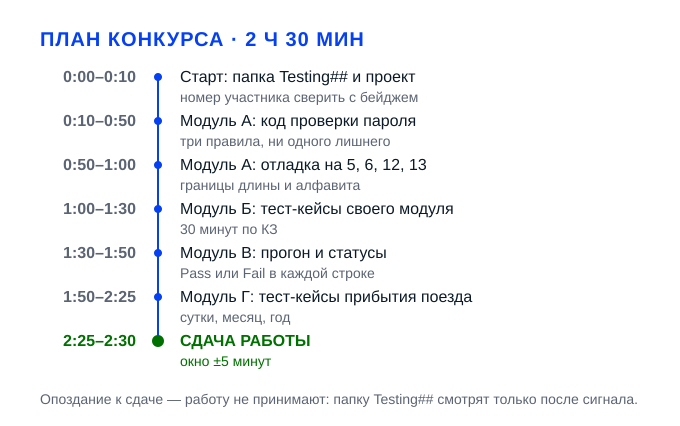
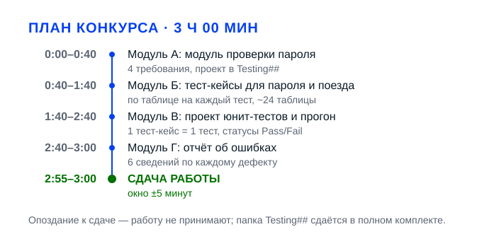
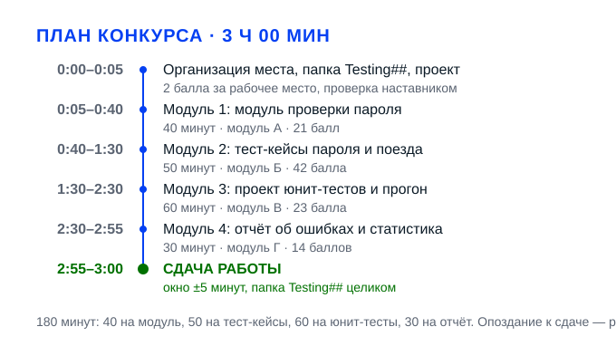

Тестирование программного обеспечения (Р)
Задания ниже — официальные файлы «Абилимпикс» (источник: abilympics-russia.ru), разложенные по категориям. Решения написаны по тексту задания, регламенту и критериям оценки; в них указано, что именно проверяет эксперт.
Школьник
14–16 лет, базовый уровень заданияВыдержка из официального конкурсного задания: страницы, относящиеся к категории «Школьник» (стр. 5–7 источника).
Пошаговое решение
Конкурсное задание для школьников — это 150 минут и четыре модуля, связанные одной идеей: написать маленький модуль проверки пароля, придумать к нему тест-кейсы, прогнать их и отдельно спроектировать тест-кейсы для чужого модуля, который считает время прибытия поезда. Пароль по заданию содержит только английские буквы и цифры, его длина от 6 до 12 символов включительно, и в нём есть хотя бы одна цифра: ни регистра, ни спецсимволов, ни русских букв в требованиях для школьников нет. Баллы распределены неравномерно — разработка модуля 22, тест-кейсы своего модуля 39, прогон 10, тест-кейсы чужого модуля 32, поэтому самые дорогие минуты конкурса уходят не на код, а на тест-дизайн. Главная ловушка задания — придумать требование, которого в нём нет: лишняя проверка регистра или обязательной буквы обнуляет позитивные кейсы и снимает баллы сразу в двух модулях.

Задача 1. Написать модуль проверки пароляМодуль А · 60 минут · до 22 баллов
Модуль А — это 60 минут и 22 балла по восьми строкам листа критериев, и почти все они про одно: функция проверки пароля должна быть реализована буквально по трём требованиям задания. Пароль содержит только английские буквы и цифры, его длина от 6 до 12 символов включительно, и в нём есть хотя бы одна цифра. Никаких дополнительных правил — про регистр, про обязательную букву, про спецсимволы — в задании для школьников нет, и каждое придуманное правило отнимает баллы у соседнего критерия.
Действие 1.1. Подготовить рабочее место и папку Testing##
Шаг 1.1.1
Первым делом находим свой номер участника: он написан на бейдже, на табличке рабочего места и в файле жеребьёвки, лежащем на рабочем столе. На рабочем столе создаём папку Testing с этим номером — ровно в той форме, что требует задание, без пробелов и без слова «копия». Внутрь папки сразу кладём пустой проект, который создадим следующим шагом, чтобы к концу модуля ничего не переносить в спешке.
Имя папки — единственный адрес, по которому эксперт ищет ваши файлы: проект модуля, документ с тест-кейсами и дооформленные тест-кейсы после прогона. Если папка названа иначе, работа существует, но не оценивается, и по листу критериев это сразу минус строки «Разработан модуль» и «Тест-кейсы оформлены по шаблону». Сверка номера занимает две минуты из ста пятидесяти и закрывает весь дальнейший путь файлов.
В проводнике путь заканчивается на Testing и ваш номер, а не на «Новая папка». Имя совпадает посимвольно с номером на бейдже: цифры не переставлены, лишних пробелов нет, буква в имени одного регистра с образцом. Откройте папку двойным щелчком и убедитесь, что она не пустая: внутри уже должен лежать файл проекта.
Папка с номером по памяти или с суффиксом «(2)»: эксперт открывает соседнюю папку и не находит работу. Вторая ошибка — складывать файлы на рабочий стол и обещать перенести в конце: в последние пять минут переносится половина.
Эксперт проверяет папку до старта оценивания и дальше смотрит только внутрь, поэтому «файл есть, но лежит рядом» для него равно «файла нет». Проверка занимает у него секунды, но её результат распространяется на все четыре модуля.
Шаг 1.1.2
Запускаем среду разработки и создаём проект с именем PasswordCheck в папке Testing##. Внутри проекта держим два файла: отдельный модуль проверки (password_check.py, PasswordCheck.java, PasswordCheck.cs или password_check.cpp — смотря какой язык выбран) и маленькую точку входа, которая спрашивает пароль у пользователя и печатает вердикт. Язык берём тот, который знаете лучше: задание разрешает C#, C++, Java и Python, и баллы за выбор языка не начисляются.
Отдельный файл модуля нужен не для красоты: эксперт открывает именно его и читает три проверки, а точка входа даёт возможность быстро прогнать тест-кейсы вручную. Разделение экономит время в модуле В, когда нужно ввести десяток паролей подряд: вы не пересобираете проект, а просто запускаете и вводите строку. У школьников отдельной строки за отдельный файл в критериях нет, но понятность кода стоит три балла, и структура проекта читается первой.
Проект открывается, собирается и запускается без ошибок: в консоли появляется приглашение ввести пароль. В дереве проекта видно два файла, а не один длинный, и оба лежат внутри папки Testing##. Нажмите Run до написания логики: пустая точка входа должна отработать без ошибок сборки.
Сделать всё в одном файле вместе с интерфейсом: проверки эксперт найдёт, но на понятности кода и едином стиле баллы срежутся. Вторая ошибка — выбрать язык, который видели два раза: половина модуля А уйдёт на синтаксис вместо логики.
Эксперт открывает проект, ищет функцию проверки и читает её сверху вниз; на этом этапе уже видно, есть ли отдельный модуль и понятны ли имена. Отдельно он отмечает, что точка входа отделена от проверок, а не смешана с ними.
Шаг 1.1.3
Проверяем, что проект запускается: нажимаем Run, вводим любой пароль вроде abc123 и смотрим, что программа отвечает, а не падает. Заранее договариваемся с собой, что именно она печатает: слова «пароль корректен» и «пароль не корректен» либо значения true и false. Формат ответа фиксируем в коде один раз, потому что от него зависят ожидаемые результаты всех тест-кейсов в модуле Б.
Ожидаемый результат в тест-кейсе должен быть сформулирован так же, как модуль отвечает на самом деле, иначе в модуле В половина кейсов получит Fail из-за формулировки, а не из-за ошибки. Один и тот же формат ответа на все случаи — это ещё и требование к понятности кода. Плюс ранний запуск ловит проблему среды: неверный интерпретатор или отсутствующий компилятор съедает время, которое лучше потратить на код.
Программа запускается и печатает ответ на тестовый ввод, консоль не закрывается сразу после вывода. Ответ одинаков по форме и для корректного, и для некорректного пароля. Скопируйте ответ в черновик: это первая строка будущих ожидаемых результатов.
Написать код и не запускать до самого тестирования: ошибка компиляции обнаруживается в модуле В, когда время уже расписано. Вторая ошибка — менять формат ответа от кейса к кейсу: «неверно», «ошибка», «пароль не подходит» — и сверить факт с ожиданием невозможно.
Эксперт смотрит, запускается ли проект с первого нажатия: среда, в которой ничего не собирается, читается как незаконченная работа. Если проект не запускается, дальше он не смотрит ни на код, ни на тест-кейсы.
Действие 1.2. Разобрать требования и зафиксировать правила
Шаг 1.2.1
Открываем текст задания и переписываем три требования в отдельный файл readme.txt внутри проекта, каждое одной строкой и с числами: только английские буквы и цифры, длина от 6 до 12 включительно, хотя бы одна цифра. Рядом записываем, что требований про регистр, про обязательную букву и про спецсимволы у школьников нет. Этот файл держим открытым, пока пишем код, и сверяемся с ним перед каждой проверкой.
Список требований — единственный источник истины и для кода, и для тест-кейсов: если правило записано словами с числами, его нельзя случайно расширить. Требования на 22 балла разложены по строкам: длина — 3 балла, допустимые символы — 5, цифра — 2, и каждая строка оценивается отдельно. Когда требования под рукой, спор «а надо ли заглавную букву» решается за секунду, а не за пять минут.
В файле три строки, в каждой есть проверяемое условие и, где нужно, числа 6 и 12. Ни в одной строке нет слов «заглавная», «спецсимвол», «кириллица допустима». Сравните число строк: три требования, четвёртая строка — порядок проверок, лишних нет.
Писать код по памяти: школьники часто добавляют требование про заглавную букву, потому что видели его в студенческом варианте, и тогда корректный по заданию пароль abcdef1 получает отказ, а тест-кейс на него — Fail. Вторая ошибка — записать «длина примерно 6–12»: граница 12 забывается первой.
Эксперт сравнивает ваш код с текстом задания построчно; лишнее требование видно сразу, потому что в коде появляется проверка, которой нет в задании. Лишняя проверка в коде заметна даже без запуска программы.
Шаг 1.2.2
Выписываем алфавит допустимых символов явно: 26 заглавных латинских букв, 26 строчных и десять цифр. В коде это будет либо строка-константа из этих 62 символов, либо регулярное выражение вида ^[A-Za-z0-9]+$. Сразу проверяем, что в записи нет русских букв, похожих на латинские: «А» и «A» в редакторе выглядят одинаково, а компилятор видит разницу и молча портит всю проверку.
Проверка допустимых символов — самая дорогая строка листа критериев, 5 баллов, и ошибка в ней обычно не логическая, а именно в алфавите. Кириллическая «А», случайно набранная в строке константы, делает недопустимым символ, которого в задании нет, и валидный пароль начинает отклоняться. Явный алфавит ещё и упрощает тест-дизайн: каждый недопустимый класс символов берётся прямо из него.
В строке ровно 62 символа, среди них нет ни одной кириллической буквы. Проверить надёжнее всего выводом длины константы в консоль: должно получиться 62, а не 60 и не 64. Заодно проверьте, что в константе нет пробела и точки: они часто попадают при наборе.
Использовать \w или isalnum(): в Python \w пропускает подчёркивание и кириллицу, isalnum() считает буквой любую букву Unicode, и пароль «Пароль1» проходит проверку, хотя должен отклоняться. Это минус 5 баллов и заведомо неверный тест-кейс.
Эксперт вводит в ваш модуль пароль с русской буквой и с подчёркиванием; именно эти два случая показывают, проверяли ли вы алфавит или доверились встроенной функции. Второй его тест — пароль с дефисом: он тоже должен отклоняться.
Шаг 1.2.3
Договариваемся о порядке проверок: сначала пустая строка и длина, потом алфавит, потом наличие цифры, и только затем общий вердикт. Пишем это в readme.txt четвёртой строкой, чтобы порядок не менялся по ходу работы. Заодно решаем, что возвращает функция: например, пару «результат и причина отказа», где причина — короткая строка вроде «длина», «символы», «нет цифры».
Порядок проверок влияет на то, какую причину увидит пользователь, а значит и на текст фактического результата в тест-кейсах. Если порядок зафиксирован, в модуле В вы точно знаете, что должно быть написано в графе «фактический результат» для пароля из пяти символов без цифры. Причина отказа пригодится и в комментариях: вместо «не работает» вы напишете, какое именно правило сработало.
В readme.txt четыре строки, порядок проверок однозначен, и в коде он реализован в том же порядке. Функция возвращает значение одного типа на всех ветках, включая ветку успеха. Вызовите функцию дважды подряд с одной и той же строкой: ответ не должен меняться от вызова к вызову.
Возвращать из одной ветки true, а из другой — строку с ошибкой: вызывающий код получает разные типы, и половина тест-кейсов падает не по логике, а по типу. Вторая ошибка — проверять цифру раньше алфавита: причина отказа в тест-кейсе перестаёт совпадать с ожидаемой.
Эксперт читает функцию целиком и смотрит, совпадает ли порядок проверок с порядком требований в задании: это первый признак того, что код писали по спецификации. Порядок проверок он сверяет с порядком требований в задании.
Действие 1.3. Написать три проверки и собрать их в функцию
Шаг 1.3.1
Пишем первую проверку: если строка пустая — отказ, иначе считаем длину и сравниваем с границами. Условие записываем как длина больше или равна 6 и одновременно меньше или равна 12, а числа 6 и 12 выносим в константы MIN_LENGTH и MAX_LENGTH в начале файла. Никаких «меньше 13» и «больше 5» в теле функции быть не должно, иначе граница читается неверно и правится в трёх местах.
Длина — 3 балла и первое, что проверяет эксперт: пароль из пяти символов должен отклоняться, из шести — приниматься, из двенадцати — приниматься, из тринадцати — отклоняться. Обе границы включающие, и именно на них ломается большинство работ: пишут строгое неравенство и теряют пароли ровно в 6 и ровно в 12 символов. Константы вместо чисел в теле — это ещё и мнемонические имена на 3 балла.
Для строк из 5, 6, 12 и 13 символов функция даёт отказ, приём, приём, отказ. Пустая строка даёт отказ, а не исключение, и программа после неё продолжает работать. Проверьте границы на строках без цифры, чтобы отказ был именно по длине, а не по составу.
Написать условие с нестрогим неравенством в обе стороны, то есть отсечь ровно 6 и ровно 12: два тест-кейса из четырёх становятся Fail, а строка за длину теряет все 3 балла. Вторая ошибка — забыть про пустую строку: на ней модуль падает с исключением, и прогон в модуле В останавливается.
Эксперт вводит пароли из 5, 6, 12 и 13 символов подряд; эта четвёрка — самый быстрый способ увидеть, правильно ли поняты границы. Если 6 отклоняется, он сразу смотрит на знак в условии.
Шаг 1.3.2
Реализуем проверку алфавита: проходим по строке посимвольно и для каждого символа смотрим, есть ли он в строке допустимых символов, либо применяем регулярное выражение ^[A-Za-z0-9]+$ к целой строке. Ветку с регулярным выражением обязательно проверяем на пустой строке, потому что плюс в шаблоне требует хотя бы один символ. Если язык C# или Java, следим, чтобы сравнение символов шло по кодам ASCII, а не по правилам локали.
Допустимые символы — 5 баллов, самая весомая строка модуля А, и она проверяется не одним тестом, а целым набором: кириллица, пробел, подчёркивание, дефис, восклицательный знак. Именно здесь проходит «почти правильный» пароль, и именно здесь видна разница между проверкой по алфавиту и проверкой встроенной функцией. Посимвольный проход ещё и понятен: видно, что именно сравнивается.
Пароль abcdef1 проходит, Пароль1 отклоняется, abcd f1 отклоняется, abcd_f1 отклоняется. Пустая строка отклоняется по длине, а не по алфавиту, и программа не падает. Для контроля введите строку из одних латинских букв: она должна отклоняться по цифре, а не по символам.
Проверять только наличие цифры и длину, забыв про алфавит: пароль «Пароль1» проходит, и это минус 5 баллов плюс три неверных тест-кейса. Обратная ошибка — разрешить точку или дефис «на всякий случай»: тогда отклоняется валидный пароль, и Fail получает позитивный кейс.
Эксперт подставляет в модуль пароль с русской буквой и с пробелом внутри; реакция на эти два ввода — главный индикатор корректности проверки символов. Третий его тест — пароль с точкой в середине.
Шаг 1.3.3
Пишем проверку наличия цифры: проходим по строке и проверяем, что код символа лежит между кодами нуля и девятки, либо используем функцию any с проверкой на цифру. Флаг has_digit начинаем с false и переключаем в true на первой же найденной цифре, после чего цикл можно прервать. Отдельно решаем, что цифра может стоять в любом месте строки, включая первый и последний символ.
Наличие цифры — 2 балла, но эта проверка связана с двумя другими: пароль без цифры отклоняется, а пароль, где цифра стоит последней, принимается. Ошибка «цифра только в конце» или «только одна цифра» — это уже придуманное требование, которого в задании нет. Проверка по коду символа надёжнее встроенной: isdigit в Python считает цифрой и арабско-индийские знаки, которые в задании не разрешены.
Пароль abcdef отклоняется, abcde1 принимается, 1abcde принимается, abc1de принимается. Пароль из одних цифр 123456 принимается, потому что все три требования задания выполнены. Дополнительно проверьте строку 12345 — пять символов: отказ должен быть по длине.
Проверять цифру через int(password): строка с буквами даёт исключение, и модуль падает вместо отказа. Вторая ошибка — считать, что цифра обязана быть в конце, и отклонять 1abcde: это лишнее правило, за которое теряются баллы сразу в двух строках.
Эксперт смотрит на пароль без цифры и на пароль, где цифра стоит первой; вторая проверка ловит позиционное ограничение, которого в задании нет. Позицию цифры он проверяет на двух строках подряд.
Шаг 1.3.4
Собираем три проверки в одну функцию с понятным именем validate_password, которая принимает строку и возвращает результат проверки вместе с причиной отказа. В конце файла модуля оставляем маленький блок самопроверки или отдельную точку входа, чтобы функцию можно было вызвать из консоли без графического интерфейса. Сохраняем файл и убеждаемся, что имя функции и имя файла не расходятся с тем, что записано в readme.txt.
Одна точка входа — это требование к понятности кода на 3 балла: эксперт не должен искать проверки по трём разным местам. Причина отказа внутри результата делает тест-кейсы проверяемыми: в графе «фактический результат» появляется конкретная формулировка, а не «не прошёл». Кроме того, единая функция позволяет в модуле В прогнать все кейсы, меняя только входную строку.
Функция вызывается одной строкой из точки входа, имя совпадает с readme.txt, а вывод содержит и вердикт, и причину. Файл сохраняется без ошибок, проект собирается с первого раза. Вызовите функцию из точки входа на трёх строках и убедитесь, что причина отказа меняется вместе с нарушением.
Разбросать проверки по обработчикам кнопок: код работает, но читается как интерфейс, а не как модуль, и баллы за понятность срезаются. Вторая ошибка — назвать функцию check или f: мнемонические имена стоят 3 балла, и такое имя их не приносит.
Эксперт ищет функцию по имени и читает её как спецификацию; если имя говорит само за себя, он тратит на понимание секунды, а не минуты. Дальше он читает тело функции, но имя уже задало тон.
Действие 1.4. Отладить модуль на крайних значениях
Шаг 1.4.1
Прогоняем модуль на четырёх паролях, которые отличаются только длиной: abcd1 — пять символов, abcde1 — шесть, abcdefghijk1 — двенадцать, abcdefghijkl1 — тринадцать. Вводим их по очереди в одном и том же запуске программы и записываем ответ для каждого. Если ответы разошлись с ожиданием, правим условие длины сразу, пока помните, какую строку меняли.
Границы — самая частая причина потери баллов в модуле А: 3 балла за длину снимаются целиком, если хотя бы одна из четырёх граничных точек ведёт себя неверно. Прогон именно четвёркой, а не «каким-нибудь паролем», закрывает класс целиком и занимает минуту. Эти же четыре значения потом станут четырьмя тест-кейсами, поэтому данные лучше сразу записать в черновик.
Пять символов — отказ, шесть — приём, двенадцать — приём, тринадцать — отказ. Все четыре ответа получены в одном запуске, программа не падала и не потребовала перезапуска. Длину каждой строки пересчитайте в блокноте: на глаз тринадцать символов легко спутать с двенадцатью.
Проверить только «нормальный» пароль из восьми символов и успокоиться: границы остаются непроверенными, и ошибка в неравенстве доживает до модуля В. Вторая ошибка — проверять 6 и 12 в разных запусках и перепутать, какой ответ к какой строке относится.
Эксперт вводит граничные значения первыми; если 6 и 12 отклоняются, дальше он смотрит код уже с предубеждением. Ответ на 12 символов он проверяет вторым, после шести.
Шаг 1.4.2
Проверяем алфавит на пяти строках: Пароль1 с русскими буквами, abcd f1 с пробелом внутри, abcd_f1 с подчёркиванием, abcd-f1 с дефисом и abcd!f1 с восклицательным знаком. Каждая строка при этом укладывается в длину от 6 до 12 и содержит цифру, поэтому отклоняться она должна именно по символам. Для контроля вводим abcdef1 — эта строка обязана приниматься.
Пять баллов за допустимые символы набираются только тогда, когда отклоняется каждый недопустимый класс, а не «что-то одно». Если модуль пропускает подчёркивание, значит проверка сделана встроенной функцией, и это видно по одной строке. Контрольный валидный пароль нужен, чтобы не уйти в другую крайность и не начать отклонять всё подряд.
Все пять строк с недопустимыми символами отклонены, abcdef1 принят. Причина отказа в каждом случае — символы, а не длина и не отсутствие цифры. Запишите ответы в столбик напротив каждой строки: это будущие фактические результаты.
Проверить только кириллицу: подчёркивание и дефис проходят, и 5 баллов снимаются при внешне рабочем модуле. Вторая ошибка — отклонить контрольный abcdef1 из-за слишком строгого шаблона, например с обязательной заглавной буквой.
Эксперт подставляет по одному символу каждого недопустимого класса; подчёркивание и пробел — его стандартная пара. Пробел он ставит в середину строки, а не по краям.
Шаг 1.4.3
Проверяем цифру и отсутствие лишних правил: abcdef без цифры должен отклоняться, 1abcde и abcde1 — приниматься, 123456 — приниматься. Отдельно вводим Abcdef1 с заглавной буквой и abcdef1 без неё: обе строки обязаны приниматься, потому что требования про регистр у школьников нет. Все ответы записываем в тот же черновик, что и предыдущие. Если какой-то ответ не совпал с ожиданием, возвращайтесь к коду сразу: правка на этом этапе дешевле.
Проверка «нет лишних правил» защищает сразу несколько строк листа критериев: придуманное требование к регистру ломает и позитивные тест-кейсы, и общее впечатление от модуля. Строка из одних цифр — честный тест на буквальное чтение задания: все три требования выполнены, значит пароль корректен, даже если он кажется слабым. Это как раз тот случай, где тестировщик проверяет требование, а не своё мнение о хороших паролях.
abcdef отклонён, 1abcde и abcde1 приняты, 123456 принят, Abcdef1 и abcdef1 приняты одинаково. Ни один отказ не вызван правилом, которого нет в задании. Сверьте список введённых строк с черновиком: все семь значений должны быть отработаны.
Добавить условие про заглавную букву по привычке: abcdef1 отклоняется, и позитивный тест-кейс получает Fail по вине кода. Вторая ошибка — отклонить 123456, решив, что пароль из цифр «неправильный»: это изменение требования, а не проверка.
Эксперт сравнивает реакцию на Abcdef1 и abcdef1; одинаковый ответ означает, что регистр не проверяется, и для категории школьников это правильно. Отдельно он смотрит, не отклоняется ли пароль из одних цифр.
Действие 1.5. Привести код в порядок и сохранить проект
Шаг 1.5.1
Приводим код к единому стилю: одинаковые отступы в четыре пробела, пробелы вокруг операторов сравнения, пустая строка между функциями, длина строки в пределах ста символов, комментарии только там, где объясняют причину, а не пересказывают код. Для Python прогоняем файл через автоформат или проверку PEP 8, для C# и Java выравниваем фигурные скобки одинаково во всём файле. Проверяем, что в файле нет закомментированных кусков старого кода.
Единый стиль — 2 балла, и это те баллы, которые снимаются не за ошибку, а за впечатление: смешанные отступы и разные стили скобок читаются как скопированный откуда-то код. Эксперт открывает файл целиком, а не отдельную функцию, поэтому стиль виден сразу. Заодно автоформат убирает случайные символы, которые иногда попадают в строку допустимых символов.
Файл читается сверху вниз без «лесенок», отступы одинаковы, строки не выходят за край окна, комментариев-пересказов нет. Автопроверка стиля не выдаёт замечаний. Прокрутите файл до конца: внизу не должно остаться закомментированных экспериментов и отладочных печатей.
Оставить смешанные отступы после копирования фрагмента из интернета: код работает, но 2 балла уходят. Вторая ошибка — писать комментарий к каждой строке, включая очевидные: это не улучшает понятность, а мешает читать.
Эксперт просматривает файл целиком и отмечает единообразие отступов, скобок и пустых строк; это одна из немногих строк, где оценивают форму, а не результат. Замечания по стилю он формулирует как общее впечатление, но балл снимает.
Шаг 1.5.2
Переименовываем всё, что называется непонятно: password, min_length, max_length, allowed_chars, has_digit, error_message. Проверяем, что в теле функции не осталось чисел 6 и 12, а также строковых литералов с сообщениями, разбросанных по веткам. В конце сохраняем проект, закрываем среду и убеждаемся, что папка Testing## лежит на рабочем столе и проект открывается из неё.
Мнемонические имена — 3 балла, и они оцениваются буквально: эксперт смотрит на список идентификаторов и понимает, что происходит, без чтения тела функции. Числа 6 и 12 в теле — типичный пример магических значений, из-за которых при изменении требования приходится править несколько мест. Финальное сохранение в правильную папку закрывает строку «Разработан модуль проверки корректности пароля» на 2 балла.
В списке идентификаторов нет односимвольных имён и транслита вроде parol1. Поиск по файлу числа 12 не находит его в теле функции, только в объявлении константы. Проект открывается из папки Testing##. Поищите по файлу строку «12» и «6»: они должны встречаться только рядом с именами констант.
Оставить имена a, b, s1: код работает, но 3 балла за имена не начисляются. Вторая ошибка — сохранить проект в домашнюю папку среды: эксперт ищет его в Testing## и не находит. Третья ошибка — оставить в проекте файл-черновик с копией функции: эксперт читает не тот вариант.
Эксперт пробегает глазами список имён до чтения логики; понятные имена создают первое впечатление, которое потом трудно испортить. Список имён он просматривает быстрее, чем тело функции.
Задача 2. Разработать тест-кейсы для своего модуляМодуль Б · 30 минут · до 39 баллов
Модуль Б — самый дорогой в задании: 39 баллов за тридцать минут, и почти все они про качество тест-дизайна, а не про количество таблиц. Нужно закрыть три требования задания так, чтобы на каждую границу длины, на каждый недопустимый класс символов и на наличие цифры приходился ровно один кейс, и при этом ни один класс не был проверен дважды. Каждый кейс оформляется отдельной таблицей по шаблону из девяти строк, где три последние строки остаются пустыми до прогона в модуле В.
Действие 2.1. Спроектировать покрытие до оформления документа
Шаг 2.1.1
Строим таблицу классов эквивалентности по длине: короче шести, от шести до двенадцати, длиннее двенадцати, плюс отдельный класс — пустая строка. Для каждого класса придумываем по одному представителю: abcd1, abcde1, abcdefghijkl1 и пустая строка. Рядом выписываем, что каждый класс должен давать по заданию, и только после этого начинаем оформлять документ.
Полное покрытие — это не «много тест-кейсов», а «по одному на каждый класс»: за покрытие длины дают 4 балла, за отсутствие избыточности — ещё 5, и эти строки тянут в разные стороны. Таблица классов позволяет закрыть обе: три класса и пустая строка — четыре кейса, ни одного лишнего. Если начать сразу с документа, кейсы придумываются по одному и половина классов остаётся незакрытой.
В таблице четыре строки, у каждой есть представитель и ожидаемый вердикт. Ни один класс не описан дважды разными словами, и для каждого видно, какое требование он проверяет. Если класс описан дважды, вычеркните один представитель прямо в черновике, до оформления таблиц.
Написать десять кейсов «на длину» с разными строками одной длины: покрытие не растёт, а избыточность фиксируется, и 5 баллов уходят. Вторая ошибка — забыть пустую строку, которая часто роняет модуль с исключением.
Эксперт смотрит, есть ли в документе кейсы по обе стороны каждой границы и нет ли двух кейсов на один класс. Пустую строку он ищет в первую очередь: её пропускают чаще всего.
Шаг 2.1.2
Добавляем граничные значения к каждому классу: 5 и 6 символов на нижней границе, 12 и 13 на верхней. Для алфавита берём по одному представителю каждого недопустимого класса — кириллицу, пробел, подчёркивание, дефис, восклицательный знак, — и один валидный контрольный пароль. Для цифры — пароль без цифры, пароль с цифрой на первом месте, на последнем и в середине.
Граничные значения ловят ошибки в неравенствах, а классы — ошибки в проверках; вместе они дают то, что в критериях названо максимальным покрытием: 4 балла за длину, 5 за символы, 2 за цифру. Один представитель на недопустимый класс — это ровно то, что требует третий принцип задания: каждый негативный тест отражает только одну негативную ситуацию. Если в одном кейсе сразу и кириллица, и пробел, вы не узнаете, какая проверка сработала.
На каждую границу есть пара значений, на каждый недопустимый класс — ровно один кейс, и в каждом негативном кейсе нарушено ровно одно требование. Число кейсов на черновике видно целиком, до оформления таблиц.
Сделать кейс «Пароль 1!» с тремя нарушениями сразу: при Fail невозможно понять, что именно не работает, и такой кейс не помогает найти дефект. Вторая ошибка — проверять только верхнюю границу, потому что «6 и так очевидно».
Эксперт проверяет, что в каждом негативном кейсе ровно одно нарушение: это прямо записано в третьем принципе задания. Кейс с двумя нарушениями он отмечает как ошибку тест-дизайна.
Шаг 2.1.3
Проходим по списку кейсов и вычёркиваем дубли: два пароля из пяти символов проверяют одно и то же, две разные кириллические строки — тоже. Оставляем в каждом классе по одному представителю и записываем рядом, какой класс он закрывает. В результате получается список из двенадцати-пятнадцати кейсов, где каждый имеет свою причину существования. После чистки пересчитайте список и запишите итоговое число кейсов: оно понадобится в модуле В.
Избыточность — отдельная строка на 5 баллов, и она снимается даже при полном покрытии: лишние кейсы читаются как непонимание тест-дизайна. Правило простое: если два кейса отличаются только данными внутри одного класса, один из них лишний. После чистки документ становится короче, а времени на прогон в модуле В уходит меньше.
У каждого кейса можно одной фразой назвать класс, который он закрывает, и ни один класс не повторяется дважды. Общее число кейсов укладывается в двенадцать-пятнадцать, а не в тридцать. Если число кейсов перевалило за двадцать, значит часть классов закрыта дважды.
Оставить пятнадцать кейсов на длину и ни одного на спецсимволы: покрытие неполное, избыточность есть, и теряются сразу 9 баллов в двух строках. Вторая ошибка — вычеркнуть граничные значения, посчитав их дублями класса.
Эксперт сравнивает число кейсов с числом классов; заметный перевес в одну сторону он трактует как избыточность. Перевес в сторону негативных кейсов он тоже считает избыточностью.
Действие 2.2. Сделать документ по шаблону задания
Шаг 2.2.1
Создаём документ в текстовом редакторе и вставляем таблицу из двух колонок и девяти строк: в левой — название атрибута, в правой — значение. Строки идут в том порядке, в каком они перечислены в шаблоне задания: номер тест-кейса, проверяемый модуль, проверяемый функционал, резюме тестирования, данные тестирования, ожидаемый результат, фактический результат, статус, комментарии. Имя файла делаем понятным: TestCases_Password и номер участника.
Соответствие шаблону — 4 балла, наличие всех атрибутов — ещё 4, и обе строки проверяются формально: эксперт ищет в таблице конкретные названия строк. Если атрибут переименован в «что проверяем» вместо «резюме тестирования», балл снимается, даже когда содержание правильное. Две колонки удобнее девяти: длинные формулировки не разъезжаются по странице.
В таблице ровно девять строк, названия совпадают с шаблоном посимвольно, порядок тот же. Файл открывается, таблица не развалилась на две страницы и не обрезана по правому краю. Проверьте, что шапка таблицы не повторяется на каждой странице: это мешает читать кейс целиком.
Сделать таблицу «как в интернете» с колонками ID, Шаги, Ожидание: шаблон не соблюдён, и 4 балла уходят вместе с 4 за атрибуты. Вторая ошибка — забыть строку «Комментарии», которая в шаблоне есть. Третья ошибка — оставить в таблице строки из другого шаблона, например «Шаги воспроизведения».
Эксперт открывает документ и сверяет строки таблицы с шаблоном; это первое, что он делает в модуле Б. Сверка занимает у него несколько секунд на каждый документ.
Шаг 2.2.2
Заполняем шапку каждого кейса: в «Проверяемый модуль» пишем название своего модуля проверки пароля так, как оно звучит в задании, в «Проверяемый функционал» — «проверка пароля на соответствие заданным критериям», а в «Резюме тестирования» — что именно проверяется в этом конкретном кейсе, одной фразой с числом. Номер тест-кейса делаем сквозным: TC-01, TC-02 и дальше, без пропусков.
Резюме тестирования — отдельная строка на 5 баллов, самая дорогая в модуле Б, и его формулировка должна отвечать на вопрос «что проверяем», а не «что вводим». Сквозная нумерация нужна для ссылок: в модуле В вы будете называть кейсы по номеру, а не пересказывать данные. Название модуля в шапке связывает документ с проектом, который лежит в той же папке.
В каждом кейсе резюме — отдельная фраза с проверяемым условием и числом, например «проверка отказа при длине пароля 5 символов». Номера идут подряд, без повторов и без пропусков. Прочитайте резюме двух соседних кейсов: они должны отличаться проверяемым условием, а не только данными.
Писать в резюме «тестирование пароля»: формулировка не отличает один кейс от другого, и 5 баллов снимаются во всех таблицах сразу. Вторая ошибка — нумеровать кейсы заново в каждом файле и потерять ссылки.
Эксперт читает резюме подряд по всем кейсам; если из них складывается картина покрытия, формулировки засчитываются. По резюме он понимает, полное ли покрытие, ещё до чтения данных.
Шаг 2.2.3
Оставляем строки «Фактический результат», «Статус» и «Комментарии» пустыми и помечаем их курсивом, как написано в шаблоне: эти три атрибута заполняются после проведения тестирования. В «Данные тестирования» пишем конкретную строку, которую будем вводить, а в «Ожидаемый результат» — дословный ответ, который должен выдать модуль, включая формулировку причины отказа.
Курсивные строки — это не оформление, а указание на этап: если заполнить статус заранее, в модуле В останется подтвердить догадку, и проверки как таковой не будет. Ожидаемый результат на 5 баллов должен быть однозначным: «пароль отклонён по причине длина» проверяемо, а «некорректный пароль» — нет. Дословная формулировка заранее экономит время на прогоне, потому что сравнивать нужно механически.
Три строки пусты и выделены курсивом, в данных стоит конкретная строка, в ожидаемом результате — фраза, которую можно сравнить с выводом программы посимвольно. Убедитесь, что курсив действительно виден при печати: иногда он теряется при экспорте в PDF.
Заполнить статус Pass заранее, чтобы «было видно, что всё работает»: результаты тестирования перестают соответствовать реальному прогону, а за это снимают 4 балла в модуле В. Вторая ошибка — писать ожидаемый результат словами «должно работать».
Эксперт смотрит на курсивные строки: пустые до прогона и заполненные после — признак того, что тестирование действительно проводилось. Заполненный заранее статус он считает признаком формального подхода.
Действие 2.3. Закрыть кейсами проверку длины
Шаг 2.3.1
Оформляем кейс на нижнюю границу: данные — abcd1, пять символов, цифра есть, символы допустимые, ожидаемый результат — отказ с причиной «длина». Проверяем, что в этой строке нарушено ровно одно требование и что остальные два выполнены, иначе кейс перестанет быть негативным только по длине. Если сомневаетесь в числе символов, пересчитайте строку в блокноте, а не на глаз.
Нижняя граница — первый по частоте дефект в модулях школьников: строгое неравенство вместо нестрогого. Кейс на пять символов при корректных остальных условиях позволяет утверждать, что причина отказа именно длина, а не что-то ещё. Это ровно тот кейс, который в модуле В либо подтвердит работу, либо даст материал для комментария.
В данных пять символов, из них одна цифра, все символы латинские. Ожидаемый результат — отказ по длине, и это единственное нарушенное требование. Пересчитайте символы вслух: abcd1 — это четыре буквы и одна цифра, итого пять.
Взять abcd без цифры: нарушены два требования сразу, и при отказе невозможно понять, сработала длина или проверка цифры. Вторая ошибка — взять abcd12 и получить шесть символов, то есть позитивный кейс вместо негативного.
Эксперт сверяет длину строки в кейсе посимвольно; ошибка на единицу в данных обнуляет смысл граничного кейса. Он пересчитывает символы в каждом граничном кейсе, а не выборочно.
Шаг 2.3.2
Оформляем два позитивных кейса на границы: abcde1 ровно шесть символов и abcdefghijk1 ровно двенадцать. В ожидаемом результате пишем приём пароля, в резюме — «проверка приёма пароля при длине 6 символов» и «при длине 12 символов». Данные подбираем так, чтобы все три требования были выполнены и ничего лишнего не нарушалось. Длину обеих строк проверяйте пересчётом, а не на глаз: ошибка на один символ ломает границу.
Обе включающие границы должны приниматься, и это две отдельные проверки: ошибка чаще встречается на верхней, потому что её забывают при выносе константы. Позитивные кейсы на 5 баллов за ожидаемый результат нужны и для баланса: если в документе только негативные, покрытие выглядит односторонним. Кроме того, эти кейсы первыми покажут, что модуль не отклоняет всё подряд.
В первом кейсе ровно шесть символов, во втором ровно двенадцать, в обоих есть цифра и только латиница. Ожидаемый результат — приём. Пересчитайте символы обеих строк и запишите результат рядом с номером кейса.
Считать границей 11 символов или 13: кейс перестаёт проверять требование и превращается в проверку соседнего класса. Вторая ошибка — сделать оба кейса на одной границе, оставив вторую непроверенной. Третья ошибка — взять строку с цифрой в середине и потерять границу из вида.
Эксперт пересчитывает символы в данных обоих кейсов; расхождение на один символ он отмечает как ошибку тест-дизайна. Верхнюю границу он проверяет последней, потому что её забывают чаще.
Шаг 2.3.3
Оформляем кейс на верхнюю границу: abcdefghijkl1 — тринадцать символов, остальные условия выполнены, ожидаемый результат — отказ по длине. В резюме указываем «проверка отказа при длине пароля 13 символов», а в комментариях пока ничего не пишем. Строку из тринадцати символов удобно собрать из предыдущей, добавив одну латинскую букву: так видно, что отличается ровно один символ.
Верхняя граница — вторая точка, где ломаются неравенства, и без неё покрытие длины неполное, а строка на 4 балла не закрывается. Тринадцать символов при корректных остальных условиях дают однозначную причину отказа, что важно для сверки в модуле В. Этот кейс ещё и проверяет, что модуль не обрезает строку молча до двенадцати символов.
В данных тринадцать символов, одна цифра, только латиница. Ожидаемый результат — отказ по длине, а не по символам. Пересчитайте символы и сравните с данными кейса на двенадцать: разница должна быть ровно в одну букву.
Взять двенадцать символов и назвать кейс проверкой верхней границы: фактически проверяется приём, и негативный кейс исчезает. Вторая ошибка — добавить в строку дефис и получить два нарушения в одном кейсе.
Эксперт сравнивает кейсы на 12 и на 13 символов: они должны отличаться одной буквой и противоположным ожиданием. Пару кейсов на 12 и 13 символов он читает вместе, как одну проверку границы.
Действие 2.4. Закрыть кейсами проверку допустимых символов
Шаг 2.4.1
Оформляем кейс на кириллицу: Пароль1 — семь символов, цифра есть, длина в норме, но буквы русские. Ожидаемый результат — отказ по причине «недопустимые символы», и в резюме это записано словами «проверка отказа при русских буквах в пароле». В комментариях не пишем «скорее всего не пройдёт»: комментарии заполняются после прогона. Убедитесь, что в строке действительно кириллица, а не похожая латиница: скопируйте её в блокнот и посмотрите на написание.
Кириллица — самый показательный недопустимый класс для категории школьников, потому что в студенческом варианте она разрешена: путаница между вариантами встречается постоянно. Пять баллов за покрытие символов набираются только при проверке каждого класса, и русские буквы здесь первый. Кроме того, этот кейс ловит использование isalnum и \w, которые пропускают кириллицу.
В данных ровно семь символов, среди них русские буквы и одна цифра, латиницы нет. Ожидаемый результат — отказ по символам, и это единственное нарушение. Проверьте, что цифра в строке арабская, а не похожий символ из другого алфавита.
Написать ожидаемый результат «приём», решив, что кириллица допустима: кейс закрепляет неверное требование, и в модуле В корректный модуль получает Fail. Вторая ошибка — смешать в одной строке кириллицу и пробел.
Эксперт ищет в документе кейс с русскими буквами; его наличие показывает, что участник прочитал именно свой вариант задания. Он сверяет этот кейс с вариантом задания для школьников, а не для студентов.
Шаг 2.4.2
Оформляем три отдельных кейса на пробел, подчёркивание и дефис: abcd f1, abcd_f1 и abcd-f1. В каждой строке по семь символов, есть цифра, все остальные символы латинские, и нарушено ровно одно условие — один недопустимый символ. Ожидаемый результат у всех трёх одинаковый по смыслу и записан одинаково дословно. Пробел ставьте ровно один и в середину строки, чтобы его было видно при чтении документа.
Каждый недопустимый класс проверяется отдельным кейсом, потому что иначе при отказе непонятно, какой символ сработал: это третий принцип задания, и он же закрывает строку на 5 баллов. Пробел особенно важен: он невидим в документе и часто теряется при копировании данных. Подчёркивание и дефис ловят проверку через \w и через формулировку «буквы, цифры и знаки».
В каждом кейсе ровно один недопустимый символ, остальные — латиница и цифра, длина семь. Ожидаемый результат одинаковый, данные различаются одним символом. В каждом кейсе пересчитайте символы: семь штук, включая недопустимый.
Сделать один кейс abcd f_1 с двумя нарушениями: он не даёт информации о том, какая проверка не работает. Вторая ошибка — потерять пробел при копировании и получить валидную строку, которая в прогоне даст Pass вместо Fail.
Эксперт проверяет, что пробел в данных действительно есть: в таблице он иногда сливается с текстом, и кейс выглядит как позитивный. Дефис он проверяет отдельно от подчёркивания: это разные классы символов.
Шаг 2.4.3
Добавляем контрольный позитивный кейс на допустимые символы: abcdef1 — семь символов, латиница и цифра, ожидаемый результат — приём. В резюме пишем «проверка приёма пароля, состоящего только из разрешённых символов». Проверяем, что в документе нет кейса, где ожидается приём пароля с русскими буквами или со спецсимволом. В комментариях пока ничего не пишите: они заполняются только после прогона, вместе со статусом.
Без контрольного позитивного кейса невозможно отличить «модуль правильно отклоняет недопустимые символы» от «модуль отклоняет всё подряд»: последнее тоже даёт Pass во всех негативных кейсах. Это ровно та ловушка, в которую попадают, когда проверяют только отказы. Ожидаемый результат на 5 баллов здесь работает как эталон формулировки для остальных кейсов.
В документе есть хотя бы один кейс с ожидаемым приёмом на допустимых символах. Нет ни одного кейса, где приём ожидается при кириллице, пробеле или спецсимволе. Сравните ожидания всех кейсов на символы: приём должен встречаться только в одном из них.
Сделать все кейсы негативными: модуль, который отклоняет любой пароль, проходит весь набор, и дефект остаётся незамеченным. Вторая ошибка — оставить в документе кейс с ожидаемым приёмом кириллицы, оставшийся от черновика.
Эксперт смотрит на соотношение позитивных и негативных кейсов; полное отсутствие позитивных читается как одностороннее покрытие. Соотношение он оценивает грубо: хотя бы треть кейсов должна быть позитивной.
Действие 2.5. Закрыть кейсами проверку цифры и провести ревизию
Шаг 2.5.1
Оформляем кейсы на цифру: abcdef без цифры с ожиданием отказа по причине «нет цифры», 1abcde и abcde1 с ожиданием приёма. В резюме каждого кейса указываем, что проверяется наличие цифры и её позиция, а в данных следим, чтобы длина была ровно шесть символов. Три кейса вместе показывают, что цифра принимается в любом месте строки. Строку без цифры собирайте из латинских букв: abcdef — ровно шесть символов, цифр нет.
Наличие цифры — 2 балла за покрытие, и они набираются только тогда, когда проверены и отказ без цифры, и приём с цифрой в разных позициях. Позиция важна потому, что частая ошибка реализации — искать цифру только в конце или только в начале строки. Длина шесть во всех трёх кейсах убирает влияние границы: причина отказа остаётся единственной.
В кейсе без цифры нет ни одной цифры, в двух других по одной, все три строки ровно по шесть символов. Ожидания: отказ, приём, приём. Пересчитайте длину всех трёх строк: шесть символов, иначе причина отказа перестаёт быть единственной.
Сделать кейс без цифры длиной пять символов: нарушены два требования, и отказ нельзя приписать цифре. Вторая ошибка — проверить только цифру в конце и не заметить, что реализация ищет её именно там. Третья ошибка — проверять цифру на строке с недопустимым символом и потерять однозначность.
Эксперт сравнивает кейсы 1abcde и abcde1: одинаковое ожидание при разной позиции цифры показывает, что позиция не ограничена. Позицию цифры он проверяет на первом и последнем символе строки.
Шаг 2.5.2
Оформляем кейс на пароль из одних цифр: 123456 — шесть символов, только допустимые символы, цифра есть, ожидаемый результат — приём. В комментариях оставляем пометку, что по буквальному тексту задания все три требования выполнены, хотя пароль выглядит слабым. Если эксперт на разборе считает иначе, вопрос обсуждается словами, а не правкой кода. Число 123456 удобно тем, что его длина ровно шесть, а все символы допустимые: спорить можно только о букве, которой в требованиях нет.
Это кейс на дисциплину мышления: тестировщик проверяет требование, а не своё представление о хорошем пароле, и в задании нет условия про обязательную букву. Модуль, который отклоняет 123456, содержит лишнее правило, и это видно именно по этому кейсу. Пометка в комментариях защищает от спора: видно, что решение принято осознанно и обосновано текстом задания.
В данных ровно шесть цифр, латинских букв нет, ожидаемый результат — приём, в комментариях есть обоснование со ссылкой на требования. Проверьте, что в данных нет латинской буквы: иначе кейс перестанет быть проверкой только цифр.
Поставить ожидание «отказ», потому что пароль кажется ненадёжным: в модуле В корректный модуль получит Fail, а вы запишете дефект, которого нет. Вторая ошибка — молча удалить кейс, чтобы не спорить: покрытие становится неполным.
Эксперт обращает внимание именно на этот кейс, потому что он отделяет чтение задания от привычных представлений о паролях. Если ожидание расходится с текстом задания, он задаёт вопрос участнику.
Шаг 2.5.3
Проводим ревизию всего документа: в каждом кейсе заполнены номер, модуль, функционал, резюме, данные и ожидаемый результат, а три курсивные строки пусты. Читаем резюме подряд и проверяем, что из них складывается полная картина покрытия: длина, символы, цифра, позитивные и негативные случаи. Считаем кейсы и записываем число на первой странице, чтобы потом сверить его с числом статусов.
Ревизия перед сдачей закрывает сразу три строки листа критериев: шаблон на 4 балла, наличие всех атрибутов на 4 и корректность формулировок на 3. Пропущенный атрибут в одном кейсе из пятнадцати стоит столько же, сколько пропущенный во всех, потому что строка оценивается целиком. Число кейсов, записанное заранее, пригодится в модуле В: столько же должно быть статусов.
Во всех таблицах девять строк, шесть заполнены, три пусты и выделены курсивом. Число кейсов записано, резюме не повторяются и не противоречат ожидаемым результатам. Пройдите по документу поиском: пустых ячеек в первых шести строках быть не должно.
Оставить один кейс с пустым резюме: строка «резюме сформулировано корректно» снимается целиком. Вторая ошибка — заполнить фактический результат «на всякий случай» до прогона. Третья ошибка — оставить в документе два кейса с одинаковыми данными и разными номерами.
Эксперт листает документ и ищет пустые ячейки; одна пропущенная ячейка в шапке стоит баллов больше, чем кажется. Пустые ячейки он отмечает в первую очередь, ещё до чтения содержания.
Задача 3. Провести тестирование своего модуляМодуль В · 20 минут · до 10 баллов
Модуль В — это двадцать минут на прогон всех придуманных кейсов и заполнение трёх курсивных строк. Баллов здесь меньше, чем в остальных модулях, но именно этот модуль показывает, что тест-кейсы не написаны для вида: результаты должны соответствовать тому модулю, который лежит в папке, а не тому, который вы хотели написать. Главное правило — не править ожидаемый результат под фактический и не трогать код во время прогона.
Действие 3.1. Прогнать позитивные и негативные кейсы
Шаг 3.1.1
Запускаем модуль и прогоняем позитивные кейсы по порядку номеров: abcde1, abcdefghijk1, abcdef1, 1abcde, abcde1 с цифрой в разных позициях. Для каждого ввода записываем в графу «Фактический результат» то, что программа напечатала, дословно, включая формулировку причины, если она есть. Вводим строки копированием из документа, а не набором с клавиатуры.
Результаты тестирования должны соответствовать разработанному модулю, и это 4 балла: записанный по памяти результат расходится с реальным выводом на формулировках. Копирование из документа исключает опечатки, из-за которых позитивный кейс падает по данным, а не по коду. Дословная запись нужна и для комментариев: именно она показывает, что прогон был.
В каждой строке фактический результат заполнен текстом, который действительно появился в консоли, а не пересказом. Все позитивные кейсы получили Pass, ни один не упал по данным. Сверьте число прогнанных позитивных кейсов с их числом в документе: расхождение означает пропуск.
Записать фактический результат словами «работает корректно»: сверить его с ожидаемым невозможно, и 2 балла за оформление результатов снимаются. Вторая ошибка — набирать данные вручную и потерять пробел в негативном кейсе.
Эксперт сравнивает фактический результат с выводом программы при нём же; расхождение формулировок он замечает сразу. Он просит повторить один из прогонов при себе.
Шаг 3.1.2
Сравниваем фактический результат с ожидаемым по каждому кейсу и ставим статус: совпало — Pass, не совпало — Fail. Статус пишем только словом Pass или Fail, как в шаблоне, без «ок», плюсов и слов «успешно». Если ответ совпал по смыслу, но отличается формулировкой, статус всё равно Pass, а расхождение формулировки отмечаем в комментариях. Если сомневаетесь между Pass и Fail, перечитайте ожидаемый результат: он записан до прогона и не подлежит изменению.
Статус — обязательный атрибут шаблона, и за его корректность отвечает строка «результаты тестирования оформлены в тест-кейсах» на 2 балла. Единый формат Pass и Fail позволяет эксперту посчитать результаты одним взглядом, а разнообразие пометок читается как небрежность. Отделение смысла от формулировки важно: иначе вы записываете дефект там, где его нет.
У всех кейсов статус ровно Pass или Fail, ни одной пустой ячейки. Число статусов совпадает с числом кейсов, записанным в модуле Б. Пройдите по столбцу статусов сверху вниз: он должен читаться как последовательность без пропусков.
Поставить Fail из-за того, что модуль написал «пароль не корректен» вместо «отказ по длине»: это дефект формулировки, а не логики, и в документе он выглядит как надуманный. Вторая ошибка — оставить статус пустым в двух кейсах, забытых при прогоне.
Эксперт считает Pass и Fail и сверяет с фактическими результатами: статус, не подтверждённый записью, он отмечает как недостоверный. Он сверяет каждый статус с фактическим результатом в той же строке.
Шаг 3.1.3
Прогоняем негативные кейсы: пять символов, тринадцать символов, кириллицу, пробел, подчёркивание, дефис, пароль без цифры. В каждом записываем фактический результат дословно и ставим статус по совпадению с ожидаемым. Если модуль где-то ведёт себя не так, как требует задание, статус остаётся Fail, а в комментариях появляется короткое описание: что ввели, что ожидали, что получили.
Именно негативные кейсы находят дефекты, и честный Fail ценнее красивого Pass: результаты, не соответствующие модулю, стоят 4 балла, а подогнанные подписи эксперт отличает по гладкой картине. Комментарий из трёх частей — ввели, ожидали, получили — готовое описание дефекта, если эксперт попросит объяснить Fail. Кроме того, прогон по всем кейсам закрывает строку «выполнено тестирование по всем разработанным тест-кейсам» на 3 балла.
Все негативные кейсы имеют фактический результат и статус. Для каждого Fail в комментариях есть входные данные, ожидание и факт. Отдельно проверьте, что в каждом негативном кейсе причина отказа совпадает с ожидаемой.
Исправить код во время прогона и переписать ожидаемый результат под него: документ перестаёт отражать тестирование, и 4 балла за соответствие результатов модулю снимаются. Вторая ошибка — поставить Pass «на глаз», не сверив причину отказа.
Эксперт смотрит на Fail-кейсы внимательнее всего: по комментариям видно, понимает ли участник, что именно не работает. По комментариям он отличает найденный дефект от подогнанного результата.
Действие 3.2. Описать найденные расхождения
Шаг 3.2.1
Заполняем комментарии к Fail-кейсам по одной схеме: что ввели, что ожидали, что получили, и какое требование задания нарушено. Пишем коротко, одной-двумя фразами, без эмоций и без предположений о причинах в коде. Если дефектов несколько, они не смешиваются в одном комментарии: каждый Fail получает свой. Одинаковая схема комментария нужна для того, чтобы документ читался как единое целое, а не как набор заметок.
Комментарии — последняя строка шаблона, и её заполнение показывает, что результаты осмыслены, а не просто отмечены. Формулировка «нарушено требование о длине» связывает дефект с конкретной строкой листа критериев, что помогает и вам, и эксперту. Смешивать два дефекта в одном комментарии нельзя по той же причине, по которой нельзя смешивать нарушения в одном кейсе.
У каждого Fail есть комментарий из трёх частей, и в нём названо нарушенное требование. Ни один комментарий не содержит двух разных дефектов. Прочитайте два комментария подряд: они должны быть построены по одной схеме.
Написать «не работает»: комментарий не несёт информации, и эксперт не видит, что дефект понят. Вторая ошибка — предположить причину в коде и написать «ошибка в цикле» вместо наблюдаемого поведения. Третья ошибка — писать комментарий только к одному Fail, посчитав остальные очевидными.
Эксперт читает комментарии к Fail-кейсам и оценивает точность описания: это единственное место, где видно аналитическое мышление. Он ищет в комментарии нарушенное требование, а не догадку о причине.
Шаг 3.2.2
Проверяем, что комментарии не противоречат фактическим результатам: если в факте написано «принят», а в комментарии «отклонён по длине», значит при прогоне перепутаны строки. Пробегаем по документу сверху вниз и сверяем три поля каждого кейса: данные, факт, комментарий. На исправление одной перепутанной строки уходит меньше минуты, на объяснение с экспертом — весь остаток конкурса.
Противоречие внутри кейса — самая заметная ошибка оформления: эксперт читает три поля подряд и видит несоответствие сразу. Такая ошибка стоит доверия ко всему документу, а не только к одной строке. Сверка трёх полей заодно ловит кейсы, где данные остались от черновика.
В каждом кейсе данные, факт и комментарий описывают одну и ту же ситуацию. Нет кейса, где факт и комментарий противоречат друг другу. Если противоречие нашлось, правьте не комментарий, а фактический результат: он должен отражать прогон.
Оставить комментарий от другого кейса после копирования строки: документ выглядит небрежным, и баллы за корректность атрибутов снимаются. Вторая ошибка — сверять только статусы и не читать текст. Третья ошибка — оставить комментарий от кейса, который потом удалили из документа.
Эксперт читает кейсы подряд, поэтому противоречие в одном из них он встретит почти наверняка. Читая документ подряд, он обязательно наткнётся на противоречие.
Действие 3.3. Сверить документ и сдать папку
Шаг 3.3.1
Проходим по документу и проверяем, что у всех кейсов заполнены три курсивные строки: фактический результат, статус и комментарии, причём комментарий заполнен хотя бы у Fail. Сверяем число кейсов с числом статусов и убеждаемся, что ни один кейс не остался без прогона. Отдельно проверяем, что ожидаемые результаты не менялись после прогона. Если какой-то кейс остался без прогона, прогоните его сейчас: двадцать минут модуля ещё позволяют.
Полнота оформления — это 3 балла за «выполнено тестирование по всем разработанным тест-кейсам»: один непрогнанный кейс ломает строку целиком. Проверка неизменности ожиданий закрывает подгонку результатов, которую эксперт замечает по слишком гладкой картине. Сверка чисел занимает минуту и исключает забытые строки.
Все статусы заполнены, ожидаемые результаты совпадают с теми, что были в документе до прогона, число кейсов и статусов одинаково. Сверьте число строк в таблицах с числом статусов: они должны совпадать до единицы.
Прогнать двенадцать кейсов из пятнадцати и не заметить три пустых: строка за полный прогон снимается. Вторая ошибка — поправить ожидаемый результат после Fail, чтобы документ выглядел лучше. Третья ошибка — считать, что пустой комментарий у Pass допустим, и оставить его пустым у Fail.
Эксперт сравнивает ожидания с текстом задания, а не с фактическим результатом: подгонка видна по несоответствию требованию. Неизменность ожиданий он проверяет по тексту задания.
Шаг 3.3.2
Сохраняем документ под тем же именем, что и в модуле Б, в папку Testing##, и проверяем, что это тот же файл, а не копия с припиской «итог». Убеждаемся, что в папке лежат проект модуля и документ с тест-кейсами и что открывается именно последняя версия. Время на это — минута, и её лучше потратить здесь, чем искать файл на сдаче. Если в папке оказались две версии документа, оставьте одну и назовите её так, как требует задание.
Сдача папки — обязательное условие задания: в Testing## должны лежать проект, тест-кейсы и дооформленные тест-кейсы. Копия с другим именем создаёт две версии, и эксперт может открыть ту, где статусы пусты. Проверка состава папки закрывает формальную часть, которая стоит баллов не меньше содержательной.
В папке ровно один документ с тест-кейсами, в нём заполнены статусы, рядом лежит проект. Имя файла не содержит слов «копия», «итог», «new». Откройте документ из папки, а не из списка недавних файлов: так видно, что сохранена нужная версия.
Сохранить дооформленные кейсы отдельным файлом: эксперт открывает первый, видит пустые статусы и считает, что тестирование не проводилось. Вторая ошибка — оставить проект в папке среды разработки. Третья ошибка — сохранить документ в формате, который не открывается на машине эксперта.
Эксперт открывает папку и проверяет состав; лишние версии одного документа он трактует как неопределённость результата. Состав папки он сверяет с обязательными условиями задания.
Задача 4. Разработать тест-кейсы для чужого модуля прибытия поездаМодуль Г · 40 минут · до 32 баллов
Модуль Г — региональная часть задания: 40 минут и 32 балла за тест-кейсы для модуля, который написал другой участник. Модуль считает дату и время прибытия поезда по дате отправления, часам и минутам отправления и времени в пути в часах и минутах. Корректность вводимых данных не проверяется, поэтому кейсы на часы 99 и минуты 75 в документ не попадают, а всё время уходит на календарь: перенос минут, переход через сутки, смену месяца и смену года.
Действие 4.1. Разобрать чужой модуль и его входы
Шаг 4.1.1
Открываем модуль другого разработчика и читаем его входные данные: дата отправления, часы отправления, минуты отправления, часы в пути, минуты в пути. Выписываем их в черновик в том порядке, в каком они перечислены в задании, и рядом — что модуль должен вернуть: дату и время прибытия с точностью до минуты. Смотрим, в каком виде принимается дата: если это три отдельных поля, тест-кейсы будут с тремя значениями, а не с одной строкой.
Пять входов — это пять параметров, и каждый должен быть задействован хотя бы в одном кейсе, иначе покрытие неполное, а за полное покрытие кода дают 4 балла. Формат ввода определяет форму записи данных в тест-кейсе: строка «31.12.2026» и три поля 31, 12, 2026 — разные данные. Ошибка в понимании входов приводит к тому, что весь набор кейсов проверяет не тот интерфейс.
В черновике пять входов и один выход, формат даты понятен, и в тест-кейсе данные можно записать так же, как их вводят в модуль. Проверьте, что в черновике нет шестого входа: лишнее поле означает, что вы читали другой модуль.
Решить, что на вход подаётся одна строка с датой и временем: кейсы не совпадут с интерфейсом чужого модуля, и весь модуль Г оценивается как неприменимый. Вторая ошибка — не заметить отдельные поля часов и минут и перепутать их местами.
Эксперт сверяет данные в кейсах с интерфейсом чужого модуля; несовпадение формата он считает ошибкой понимания задания. Формат ввода он сверяет с интерфейсом, а не с текстом задания.
Шаг 4.1.2
Определяем формат вывода: дата в виде дня, месяца и года и время в виде часов и минут, с ведущими нулями или без. Записываем этот формат в черновик одной строкой-образцом, например 01.01.2027 00:10, и дальше все ожидаемые результаты пишем строго по образцу. Если модуль печатает словами «января», ожидаемый результат тоже пишем словами, а не в удобном вам виде.
Ожидаемый результат на 5 баллов должен быть однозначным и совпадать с фактическим форматом, иначе кейс нельзя проверить механически. Формат с ведущими нулями — частая причина расхождений: 1.1.2027 и 01.01.2027 означают одно и то же, но сравниваются посимвольно. Образец, записанный заранее, держит весь документ в одном стиле.
В черновике есть строка-образец, и все ожидаемые результаты в документе записаны по ней, включая разделители и ведущие нули. Сравните образец с одной строкой из вывода модуля: они должны совпадать посимвольно.
Писать ожидаемый результат в свободной форме: «первое января, десять минут первого ночи» невозможно сравнить с выводом программы. Вторая ошибка — менять формат от кейса к кейсу и получить Fail на ровном месте.
Эксперт проверяет, что ожидаемые результаты записаны в том же формате, в каком модуль выводит данные. Расхождение в разделителях он считает ошибкой ожидаемого результата.
Шаг 4.1.3
Читаем в задании фразу о том, что корректность вводимых данных не проверяется, и делаем из неё вывод: кейсы на часы 99, минуты 75, пустую дату и текст вместо числа не пишем. Вместо этого все входы берём в допустимых диапазонах: часы от 0 до 23, минуты от 0 до 59, дата существующая. Это ограничение фиксируем в черновике, чтобы не потратить время на лишние таблицы.
Проверка того, чего модуль не обязан делать, — это избыточность, а за её отсутствие дают 3 балла: кейс с часами 99 не проверяет требование задания. Кроме того, такие кейсы отнимают время, которого в модуле Г всего сорок минут. Понимание границ области тестирования — часть профессии, и эксперт видит его по составу документов.
Ни в одном кейсе нет часов больше 23 и минут больше 59, все даты существуют в календаре 2026 года. В черновике записано, что невалидные входы вне области тестирования. Просмотрите все данные кейсов на часы и минуты: значения должны лежать в допустимых пределах.
Добавить кейсы на невалидные входы «для полноты»: они занимают половину времени, а избыточность снимает 3 балла. Вторая ошибка — наоборот, отказаться от граничных значений времени, посчитав их невалидными: 23:59 вполне допустимо.
Эксперт смотрит, есть ли в документе кейсы на данные, которые задание прямо выводит из области проверки. Кейсы на невалидные данные он отмечает как выход за область тестирования.
Действие 4.2. Спроектировать покрытие календаря и арифметики
Шаг 4.2.1
Проектируем кейсы на перенос минут: 10:40 плюс 0 часов 35 минут даёт 11:15, а 10:20 плюс 0 часов 40 минут — ровно 11:00 без переноса в следующий час. Отдельно берём случай, когда сумма минут равна 60 и не больше: это граница, на которой появляется лишний час. В ожидаемом результате пишем время прибытия полностью, вместе с датой. Для контроля возьмите случай, где минуты в пути равны нулю: время прибытия совпадает с временем отправления.
Перенос минут — первая арифметическая операция модуля, и ошибка в ней видна на любом кейсе, кроме тех, где минуты не складываются через 60. Граница ровно 60 проверяет, что модуль не добавляет час дважды: при 40 минутах в пути и 20 на часах сумма равна 60, и это ровно следующий час. Без такого кейса дефект «плюс один час на границе» остаётся незамеченным.
В одном кейсе сумма минут больше 60, в другом ровно 60, в третьем меньше 60. Ожидаемое время рассчитано вручную и перепроверено. Пересчитайте все три суммы минут вручную и запишите их рядом с номерами кейсов.
Взять только случаи без переноса: модуль, который вообще не складывает минуты, пройдёт все кейсы. Вторая ошибка — ошибиться в ручном расчёте и записать ожидаемый результат с ошибкой на час. Третья ошибка — брать время в пути больше суток и терять из вида перенос даты.
Эксперт пересчитывает один из кейсов на бумаге; расхождение в его расчёте и вашем ожидании он проверяет особенно внимательно. Границу ровно 60 минут он проверяет отдельно от 61.
Шаг 4.2.2
Проектируем кейсы на переход через сутки: 22:30 плюс 3 часа даёт 01:30 следующего дня, 23:59 плюс 0 часов 1 минута — 00:00 следующего дня, а 23:00 плюс ровно 24 часа — то же время следующего дня. В каждом случае дата в ожидаемом результате отличается от даты отправления, и это записано явно. Отдельно берём случай, когда время в пути нулевое: дата и время не меняются.
Переход через сутки — вторая по частоте ошибка в таких модулях: дата не увеличивается, и поезд прибывает в прошлое. Три кейса закрывают разные механики: перенос на несколько часов, перенос на одну минуту и перенос ровно на сутки. Нулевое время в пути — контрольный позитивный кейс, который показывает, что модуль не добавляет сутки без причины.
В двух кейсах дата прибытия на день больше, в одном — ровно на сутки, в контрольном — та же. Время во всех случаях посчитано верно. Пересчитайте дату в каждом кейсе: она должна быть на день больше, а не на два.
Проверить только перенос на несколько часов: ошибка «не добавляется дата при переходе на одну минуту» остаётся скрытой. Вторая ошибка — забыть контрольный кейс с нулевым временем в пути и не увидеть, что модуль всегда прибавляет день.
Эксперт смотрит на дату в ожидаемом результате: если она везде совпадает с датой отправления, покрытие перехода через сутки отсутствует. Нулевое время в пути он проверяет как контрольный случай.
Шаг 4.2.3
Проектируем кейсы на переход через месяц и год: 31.12.2026 23:50 плюс 0 часов 20 минут даёт 01.01.2027 00:10, 28.02.2026 23:00 плюс 2 часа даёт 01.03.2026 01:00, а 30.04.2026 23:30 плюс 1 час — 01.05.2026 00:30. Добавляем случай с 30-дневным месяцем и случай, где месяц не меняется, чтобы покрыть обе ветки. Все даты берём в пределах 2026 года, потому что тестирование по заданию проводится для этого года.
Календарь — самая богатая на дефекты часть: в феврале 28 дней, потому что 2026 год не високосный, а в апреле 30, и модуль, который всегда прибавляет 31, ошибается на обоих. Переход через год проверяет, что меняется не только месяц, но и год, и это ровно тот случай, который забывают. Полное покрытие кода на 4 балла без календарных кейсов не набирается.
Есть кейс на переход в следующий год, кейс на 28 февраля, кейс на 30-дневный месяц и кейс без смены месяца. Все даты существуют в календаре 2026 года. Проверьте, что 2026 год не високосный, и в феврале у вас ровно 28 дней, а не 29.
Взять 29 февраля 2026 года: такой даты не существует, потому что год не високосный, и кейс становится невалидным входом, который задание выводит из области проверки. Вторая ошибка — проверить только январь и получить ложное чувство покрытия.
Эксперт ищет кейс на 31 декабря и на конец февраля: эти две даты показывают, что участник думал о календаре, а не только об арифметике. Смену года он ищет в документе первым делом.
Действие 4.3. Оформить тест-кейсы по шаблону модуля Г
Шаг 4.3.1
Оформляем каждый кейс отдельной таблицей по шаблону модуля Г: в нём шесть строк — номер тест-кейса, проверяемый модуль, проверяемый функционал, резюме тестирования, данные тестирования и ожидаемый результат. Строк фактического результата, статуса и комментариев в этом шаблоне нет, потому что чужой модуль по заданию для школьников не прогоняется: разрабатываются только тест-кейсы. Нумерацию начинаем заново, с TC-01, чтобы не смешивать два набора.
Оформление по шаблону — 4 балла, наличие всех атрибутов — ещё 4, и здесь ошибка стоит дороже, чем в модуле Б, потому что кейсов меньше, а вес строк выше. Лишние строки из шаблона своего модуля — такая же ошибка, как пропущенные: эксперт сверяет таблицу с шаблоном модуля Г посимвольно. Раздельная нумерация помогает не путать два набора в одной папке.
Каждый кейс — отдельная таблица из шести строк с теми же названиями атрибутов, что в шаблоне модуля Г. Номера начинаются с TC-01 и идут подряд. Посчитайте строки в каждой таблице: шесть, ни больше ни меньше.
Скопировать шаблон из модуля Б с девятью строками: в кейсах появляются пустые статусы, и эксперт читает это как незаконченную работу. Вторая ошибка — свести все кейсы в одну большую таблицу с колонками.
Эксперт открывает документ и считает таблицы: их число должно совпадать с числом кейсов, а число строк — с шаблоном. Лишние строки из шаблона модуля Б он отмечает как копирование.
Шаг 4.3.2
Заполняем данные и ожидаемый результат по каждому кейсу: пять входных значений в том порядке, в каком они перечислены в задании, и время прибытия в формате образца. В резюме пишем, что именно проверяется, например «проверка перехода через сутки при времени в пути 3 часа». В шапке называем чужой модуль так, как он назван в задании, чтобы его нельзя было спутать с вашим.
Ожидаемый результат — 5 баллов, самая дорогая строка модуля Г, и она требует точного времени и даты, а не описания. Резюме на 4 балла должно называть проверяемую механику, а не пересказывать данные: переход через сутки и переход через год — разные проверки. Название чужого модуля в шапке — это ещё и признак того, что документ сделан для модуля Г, а не скопирован из модуля Б.
В каждом кейсе пять входных значений, ожидаемый результат содержит и дату, и время, резюме называет механику. Названия модуля и функционала отличаются от документов модуля Б. Сверьте порядок пяти входных значений с порядком в задании: он одинаков во всех кейсах.
Оставить в шапке название своего модуля проверки пароля: эксперт видит, что документ скопирован, и модуль Г не засчитывается. Вторая ошибка — записать ожидаемый результат только временем, без даты, и потерять проверку перехода через сутки.
Эксперт сравнивает шапки двух документов; совпадение названий модулей он отмечает как копирование. Разные названия модулей в шапках он проверяет в первую очередь.
Шаг 4.3.3
Проверяем каждый кейс на единственность изменения: в одном кейсе меняется только один параметр — либо минуты в пути, либо часы, либо дата. Если кейс проверяет и переход через сутки, и переход через месяц одновременно, он не даёт понять, какая часть модуля сломалась. Такие кейсы либо разделяем на два, либо оставляем один как комплексный, а второй убираем.
Отсутствие избыточности — 3 балла, и в модуле Г она появляется иначе, чем в модуле Б: не за счёт повторов, а за счёт широких кейсов, где меняется сразу всё. Принцип одного нарушения записан в задании и применяется к любым тест-кейсам, включая кейсы на чужой модуль. Разделение широкого кейса на два даёт более точную локализацию дефекта при том же времени.
В каждом кейсе отличается от соседнего ровно один входной параметр, и по резюме понятно, какая механика проверяется. Комплексных кейсов с тремя изменениями нет. Прочитайте два соседних кейса: различие должно быть в одном параметре и в ожидаемом результате.
Сделать кейс «31.12.2026 23:50 плюс 25 часов 70 минут»: в нём сразу переход года, суток и невалидные минуты, и он ничего не проверяет по отдельности. Вторая ошибка — продублировать один и тот же переход под разными датами.
Эксперт сравнивает кейсы попарно: если два кейса различаются одним параметром, покрытие читается как продуманное. Широкие кейсы он отмечает как потерю точности локализации.
Действие 4.4. Проверить покрытие и сдать папку
Шаг 4.4.1
Проводим ревизию покрытия: выписываем на черновик все механики модуля — сложение минут, перенос часа, переход суток, смену месяца, смену года, нулевое время в пути — и напротив каждой ставим номер кейса. Если напротив какой-то механики номера нет, добавляем кейс, а если напротив одной стоят три номера, оставляем один. Заодно проверяем, что задействованы все пять входов.
Полное покрытие кода — 4 балла, и оно проверяется именно так: по списку ветвей, а не по числу кейсов. Ревизия по механикам сразу показывает и пробелы, и избыточность, то есть закрывает две строки листа критериев за один проход. Пять входов в этом списке — контрольный минимум: если поле «минуты в пути» не встречается ни в одном кейсе, покрытие неполное.
У каждой механики есть номер кейса, ни одна не покрыта дважды без причины. Все пять входных полей встречаются хотя бы в одном кейсе. Вычеркните в списке механик те, у которых стоит номер: в конце невычеркнутых быть не должно.
Ограничиться подсчётом кейсов: десять кейсов могут покрывать три механики из шести, и 4 балла снимаются при формально большом документе. Вторая ошибка — добавить кейс «на всякий случай» и получить избыточность.
Эксперт мысленно проходит по коду чужого модуля и ищет кейс на каждую ветку; отсутствие кейса на смену года он замечает первым. Отсутствие кейса на смену года он замечает быстрее всего.
Шаг 4.4.2
Собираем папку к сдаче: проект модуля проверки пароля, документ с тест-кейсами своего модуля с заполненными статусами, документ с тест-кейсами для чужого модуля. Проверяем имена файлов, отсутствие копий и то, что все три файла лежат в Testing##, а не в подпапках. В последние минуты перечитываем шапки таблиц: названия модуля и функционала должны быть разными в двух документах.
Обязательное условие задания перечисляет состав папки, и отсутствие одного файла стоит всех баллов соответствующего модуля, независимо от качества содержимого. Разные названия модулей в шапках — простая вещь, которую забывают, когда второй документ делают копированием первого. Проверка перед сдачей занимает три минуты и защищает от потери сразу 32 баллов модуля Г.
В папке три файла, копий нет, в шапках двух документов разные названия модулей, все статусы в первом документе заполнены. Откройте каждый файл из папки: имя может совпадать, а содержимое оказаться старым.
Скопировать документ модуля Б и заменить данные, забыв шапку: в кейсах для чужого модуля остаётся название своего, и эксперт не засчитывает модуль Г. Вторая ошибка — держать документы в подпапке «Готово»: их не найдут.
Эксперт открывает папку последней и сверяет состав с обязательными условиями задания; здесь теряются баллы, которые уже были в кармане. Здесь теряются баллы, которые уже были в кармане.
Студент
учащиеся колледжей и техникумовВыдержка из официального конкурсного задания: страницы, относящиеся к категории «Студент» (стр. 7–9 источника).
Пошаговое решение
Задание категории «Студенты» состоит из четырёх модулей и длится три часа: сорок минут на разработку модуля проверки пароля, час на тест-кейсы для своего модуля и для модуля прибытия поезда, час на проект модульных тестов и прогон, двадцать минут на отчёт об ошибках. Пароль считается корректным, если в нём только английские и русские буквы и цифры, длина от шести до двенадцати символов, есть хотя бы одна цифра и есть буквы в разных регистрах. Сто баллов распределены так: 21 за модуль, 42 за тест-кейсы, 23 за тестирование и 14 за документирование, причём самые дорогие одиночные критерии — отсутствие избыточности в тест-кейсах (5 баллов) и обнаружение ошибок при тестировании (5 баллов). Всё складывается в папку Testing## на рабочем столе: проект, документ с тест-кейсами, тот же документ с заполненными результатами и отчёт об ошибках. Ниже — пошаговый разбор с таймингом и ошибками.

Задача 1. Модуль А. Разработать модуль проверки пароляМодуль А · 21 балл
За сорок минут нужно получить отдельно компилируемый модуль, который принимает строку пароля и говорит, проходит она четыре требования или нет: только английские и русские буквы с цифрами, длина от шести до двенадцати символов, хотя бы одна цифра, буквы в разных регистрах. Модуль пишется под будущие тесты: один вход и понятный результат, иначе в модуле В не получится поставить каждому тест-кейсу свой юнит-тест. Двадцать один балл модуля А делится на качество кода и на четыре проверки, поэтому писать надо сразу аккуратно и с мнемоническими именами, а не «потом переименую».
Действие 1.1. Подготовить место и каркас проекта
Шаг 1.1.1
Садимся за станцию и первым делом освобождаем стол: убираем всё, что не относится к заданию, перед собой оставляем монитор и клавиатуру, справа кладём лист с номером участника и ручку. Открываем проводник и находим на рабочем столе папку Testing## с вашим номером — её выдал эксперт до старта. В ней создаём подпапку Project для решения; документы с тест-кейсами и отчётом будем класть рядом, в корень Testing##. На телефон или на второй монитор ставим таймер на 40 минут и больше его не трогаем.
Организация рабочего места — отдельный измеримый критерий на 2 балла, и эксперт фиксирует его в первые минуты, до того как появится первая строка кода. Кроме того, заранее открытая папка экономит время в самом конце: когда проект уже собран, искать, куда его сохранить, поздно, а пересохранение в другой путь ломает сборку юнит-тестов в модуле В.
Проверяем по трём признакам: на столе нет ничего лишнего, в проводнике открыт путь к Testing## с вашим номером, таймер запущен. Если папки Testing## нет или в её имени чужой номер, зовём эксперта сразу — сдавать работу в самодельную папку нельзя.
Самая частая ошибка — начать писать код и вспомнить про папку за пять минут до сдачи: проект сохраняется в «Документы», а перенос вместе с пересборкой съедает время модуля Г, и отчёт дописывается второпях. Вторая ошибка — оставить на столе телефон и напитки: это минус балл за организацию и отдельное замечание от главного эксперта.
Эксперт смотрит на место в первые две-три минуты и ещё раз в момент сдачи: чисто ли, открыта ли папка с номером, нет ли посторонних окон поверх среды разработки.
Шаг 1.1.2
Создаём проект так, чтобы модуль проверки пароля был отдельным файлом, а не жил внутри программы с формой. В Python достаточно двух файлов: password_validator.py с функцией validate_password и main.py, который её вызывает; в C# — библиотека классов с методом Validate и консольный проект, который на неё ссылается; в Java — класс PasswordValidator в отдельном пакете. Имя проекта делаем латиницей без пробелов, например PasswordCheck, и сразу проверяем, что проект собирается пустым: если среда не компилирует заготовку, дальше писать бессмысленно.
Критерий «Код реализован как отдельный модуль» стоит 1 балл, но он же определяет, заработает ли модуль В: юнит-тесты подключаются именно к модулю, а не к программе с интерфейсом. Если проверка пароля лежит в обработчике кнопки, тестировать её придётся через форму, и на каждый тест-кейс свой юнит-тест уже не сделать.
Признак готовности простой: файл модуля существует отдельно, проект собирается без ошибок, а в модуле есть ровно одна публичная функция проверки. Проверьте это запуском пустой заготовки — она должна завершиться без ошибок компиляции или импорта.
Классическая ошибка — писать всё в одном файле вместе с вводом с клавиатуры и печатью результата: тесты потом дергают input() и падают не из-за логики, а из-за ожидания ввода. Вторая — создавать «библиотеку классов» в C# и забыть, что консольный проект на неё не сослался.
Эксперт открывает дерево проекта и смотрит, есть ли отдельный файл или проект библиотеки: одного взгляда на структуру достаточно, чтобы поставить или не поставить балл.
Шаг 1.1.3
Договариваемся с собой о контракте функции до первой строки логики. Пишем сигнатуру вида validate_password(password) и решаем, что она возвращает: в Python удобно вернуть пару «прошёл/не прошёл» и код причины, в C# — enum с результатом, в Java — boolean и отдельный метод getLastError. Сразу фиксируем в комментарии, что пустая строка и null считаются непрошедшими, а сообщения об ошибке пишутся по-русски и одинаково для одинаковых причин. Это же решение потом дословно переносится в столбец «Ожидаемый результат» тест-кейсов.
Модуль Б требует, чтобы ожидаемый результат в тест-кейсах был определён корректно, а это возможно только когда результат функции описан заранее и однозначно. Если сегодня функция возвращает false, завтра строку «неверный пароль», а послезавтра бросает исключение, тест-кейсы начнут противоречить коду, и эксперту будет трудно понять, что именно проверялось.
Контракт считается зафиксированным, если по нему можно, не глядя в код, ответить на два вопроса: что вернётся для пароля «Abc123» и что вернётся для пароля «abc». Если ответы разные по форме, а не только по смыслу, контракт ещё не готов.
Ошибка — менять формат возврата по ходу работы: сначала bool, потом кортеж, а тесты уже написаны под bool. Вторая ошибка — возвращать текст ошибки на английском, а в тест-кейсе ожидать русский: формально Fail там, где модуль прав.
Эксперт обращает внимание на понятность кода (2 балла) и на то, совпадают ли формулировки в коде, тест-кейсах и отчёте об ошибках. Отдельно он проверяет, не бросает ли функция исключение на пустом вводе: это самый быстрый способ увидеть, продуман ли контракт.
Действие 1.2. Реализовать проверку длины и допустимых символов
Шаг 1.2.1
Пишем проверку длины первой, до любых других условий, и делаем её одной строкой с нестрогими границами: длина от 6 до 12 включительно, то есть условие вида length >= 6 and length <= 12. В C# то же самое через password.Length, в Java — password.length(). Отдельно решаем, что делать с null: в Python проверяем password is None до обращения к len, иначе на None упадёт TypeError, и вместо честного «не прошёл» получится исключение.
Критерий «Проверка длины пароля реализована корректно» стоит 2 балла, и почти все потери здесь — из-за границ: участники пишут строгое неравенство и отбрасывают пароль ровно из 6 или ровно из 12 символов. В задании сказано «не менее 6 и не более 12», значит оба крайних значения допустимы, и это же станет парой тест-кейсов в модуле Б.
Проверяем четырьмя прогонами: 5 символов — отказ, 6 — успех, 12 — успех, 13 — отказ. Если хотя бы один из четырёх дал не тот результат, граница написана неверно, и переделывать надо сейчас, пока тест-кейсы не написаны под неправильное поведение.
Типичная ошибка — считать длину в байтах, а не в символах: на кириллице в некоторых кодировках 12 символов дают 24 байта, и пароль «Пароль123456» внезапно не проходит. Вторая — забыть про null и получить необработанное исключение на пустом вводе.
Эксперт смотрит на условие длины в коде и на то, совпадает ли оно с парой тест-кейсов на границах: расхождение видно сразу и стоит два балла. Второй признак — сравнение с паролем ровно из шести символов: если он отвергнут, граница написана строго.
Шаг 1.2.2
Реализуем проверку допустимых символов через явное перечисление диапазонов, а не через встроенный «является буквой». В Python удобно регулярное выражение ^[A-Za-zА-Яа-яЁё0-9]+$ с проверкой fullmatch, в C# — Regex.IsMatch с тем же шаблоном и обязательным якорем, в Java — matches. Отдельно проговариваем ё и й: в русском алфавите это полноценные буквы, поэтому они входят в диапазон, и регистр для них тоже проверяется.
Критерий «Проверка пароля на допустимые символы реализована корректно» — самый дорогой в модуле А, 4 балла. Именно здесь ломается наивная реализация: isalpha() в Python пропускает греческие и армянские буквы, а шаблон [A-Za-zА-Яа-я] без ё отбрасывает совершенно правильный пароль «Пароль1Ёж». Обе ошибки эксперт находит двумя-тремя прогонами.
Проверяем набором из шести строк: «Abc123» проходит, «Пароль1» проходит, «Abc 123» с пробелом не проходит, «Abc-123» с дефисом не проходит, «Abc!123» не проходит, «Пароль1Ёж» проходит. Если последняя строка даёт отказ, диапазон кириллицы написан неполно.
Ошибка — проверять только ASCII и забыть кириллицу: половина требований задания теряется, а вместе с ней 4 балла. Вторая ошибка — использовать регулярное выражение без якорей: тогда «Abc123!» проходит, потому что начало строки допустимо, хотя спецсимвол в конце запрещён.
Эксперт проверяет этот пункт вручную, подставляя строку с пробелом и строку с дефисом, а также смотрит, стоит ли в шаблоне якорь конца строки. Отдельно он смотрит на строку с ё в верхнем регистре: если она отвергнута, диапазон кириллицы записан неполно.
Шаг 1.2.3
Отдельно обрабатываем вырожденные входы, которые не описаны в задании прямо, но обязательно встретятся в тестах: пустая строка, строка из одних пробелов, null, строка из 12 символов, где пробел стоит последним. Для каждого случая фиксируем поведение в комментарии к функции и в сообщении об отказе, чтобы формулировка потом один в один попала в тест-кейс. Пробелы не вырезаем: trim внутри проверки сделал бы невалидный пароль валидным и сломал негативный тест.
Пункт «Понятность кода» на 2 балла и «Все атрибуты тест-кейсов сформулированы корректно» на 3 балла связаны именно здесь: пока не решено, что считается отказом для пустой строки, в тест-кейсе нельзя честно записать ожидаемый результат. Кроме того, trim — типичный способ незаметно нарушить требование о допустимых символах, и эксперт ищет его в коде целенаправленно.
Проверяем так: пустая строка и строка из шести пробелов дают отказ с одинаковым сообщением, null не приводит к падению, а строка «Abc12 » с пробелом в конце не проходит. Все четыре результата должны быть отказами, а не исключениями.
Ошибка — вызвать strip() перед проверкой «чтобы удобнее»: пароль с пробелом начинает проходить, и любой негативный тест на пробел даёт Fail по вине модуля. Вторая ошибка — падать с NullReferenceException на пустом вводе: это дефект, который придётся описывать в отчёте своими же руками.
Эксперт смотрит, есть ли в коде обработка null и пустой строки, и сверяет сообщения об ошибке с теми, что записаны в тест-кейсах. Пустая строка и null — два входа, на которых чаще всего падает чужой запуск, поэтому их наличие в коде эксперт отмечает отдельно.
Действие 1.3. Реализовать проверку цифры и регистра
Шаг 1.3.1
Проверку наличия цифры пишем через явный диапазон: any('0' <= c <= '9' for c in password) в Python, аналогичный цикл или Regex.IsMatch(password, "[0-9]") в C#, Character.isDigit с оговоркой в Java. Встроенный isdigit() в Python использует не только ASCII и пропускает надстрочные и арабско-индийские цифровые символы, поэтому его либо не берём, либо комбинируем с проверкой кода символа. Результат складываем в отдельную переменную has_digit, чтобы им можно было пользоваться в сообщении об отказе.
Критерий «Проверка пароля на цифры реализована корректно» стоит 1 балл, и на первый взгляд это самый простой пункт. Сложность в том, что цифра должна быть настоящей: если isdigit() пропустит символ «²», то пароль из букв и такого символа пройдёт проверку, хотя цифры в нём нет, и негативный тест в модуле Б зафиксирует дефект.
Проверяем тремя строками: «Abcdef» без цифры — отказ, «Abcde1» — успех, «Abcde²» — отказ. Третий случай важен: он отсекает реализацию на isdigit() и показывает, что диапазон задан явно. Четвёртая строка — «123456»: она должна быть отвергнута по регистру, а не по длине.
Ошибка — проверить цифру через int(password) в блоке try: тогда «12» пройдёт как число, но пароль из одних цифр без букв тоже пройдёт, а это уже другое требование. Вторая ошибка — считать цифрой любой не-буквенный символ: тогда «Abcde!» проходит проверку на цифру.
Эксперт подставляет пароль без цифры и пароль со спецсимволом вместо цифры: поведение в этих двух случаях показывает, реализовано требование или имитировано.
Шаг 1.3.2
Для регистра заводим два флага, has_upper и has_lower, и проходим по строке один раз, поднимая нужный флаг при встрече с буквой. Верхний регистр определяем сравнением символа с его верхним вариантом и одновременной проверкой, что символ буквенный: c.isupper() в Python и char.IsUpper в C# работают и с кириллицей, но цифры и спецсимволы не должны попадать ни в один флаг. Условие успеха — оба флага подняты одновременно.
Требование «обязательно должны быть буквы в разных регистрах» — это критерий на 3 балла, и он же самое частое место логических ошибок: участники проверяют password != password.lower(), что верно только наполовину, или сравнивают всю строку с upper, теряя случай «Abcdef» без единой заглавной. Нужны именно два независимых флага и их конъюнкция.
Проверяем четырьмя строками: «abcdef1» — отказ, «ABCDEF1» — отказ, «Abcdef1» — успех, «Пароль1» — успех. Четвёртая строка проверяет кириллицу: если она даёт отказ, значит регистр считается только для латиницы.
Ошибка — использовать capitalize() или сравнение с title(): «Пароль1» и «ПАроль1» дают одинаковый результат, и требование перестаёт различать случаи. Вторая ошибка — считать цифру или подчёркивание «верхним регистром», если флаг поднимается на любом символе, для которого isupper() случайно истинно.
Эксперт прогоняет пароль из одних заглавных и пароль из одних строчных: оба обязаны получить отказ, и это проверяется за десять секунд. Дополнительно он смотрит, проверяется ли регистр для кириллицы: латиница в этом пункте не единственный алфавит задания.
Шаг 1.3.3
Собираем все четыре проверки в одну функцию и задаём порядок: сначала null и пустая строка, потом длина, потом допустимые символы, потом цифра, потом регистр. При отказе возвращаем первую сработавшую причину, а не все сразу, и формулируем её так же, как будет написано в ожидаемом результате тест-кейса. Если хочется вернуть сразу список причин, это допустимо, но тогда контракт должен быть одинаковым во всех вызовах, включая юнит-тесты.
Порядок важен не сам по себе, а для предсказуемости: негативный тест должен отражать ровно одну негативную ситуацию, и если модуль на пароле «Abc» сначала сообщает про регистр, а потом про длину, тест-кейс становится неоднозначным и теряет баллы за корректность резюме. Один отказ — одна причина.
Проверяем на четырёх паролях с одной ошибкой каждый: слишком короткий, со спецсимволом, без цифры, без заглавной. Каждый должен дать отказ ровно со своей причиной, и причины не должны дублироваться. Отдельно убеждаемся, что причина отказа не меняется при повторном запуске с теми же данными.
Ошибка — вернуть общее «пароль неверный» на все случаи: тогда в тест-кейсах невозможно записать различимый ожидаемый результат, и колонка «Резюме тестирования» теряет смысл. Вторая — менять порядок проверок после того, как тест-кейсы уже написаны.
Эксперт смотрит на структуру функции: четыре независимых блока с ранним возвратом читаются как грамотное решение, а вложенные if на пять уровней — как путаница.
Действие 1.4. Довести код под критерии и сохранить проект
Шаг 1.4.1
Приводим код к единому стилю: один размер отступа, одинаковые кавычки, пробелы вокруг операторов, пустая строка между логическими блоками. Имена делаем мнемоническими: validate_password, has_digit, has_upper, MIN_LENGTH, MAX_LENGTH вместо f, a, b, x1. Константы 6 и 12 выносим в именованные переменные в начале файла, чтобы в тексте не оставалось «магических чисел», и комментируем каждый блок одной строкой по-русски.
За единый стиль дают 2 балла, за мнемонические имена ещё 2, и это самые дешёвые баллы конкурса: они не требуют ни одной новой строки логики, только переименования и выравнивания. Эксперт читает код глазами, и десять минут, потраченные на стиль, возвращаются четырьмя баллами почти гарантированно.
Проверяем формально: в файле нет имён из одной буквы, нет чисел 6 и 12 прямо в условиях, отступы одинаковы во всём файле, каждая функция начинается с комментария. Прогоните файл через автоформатер среды — он за секунду покажет несоответствия.
Ошибка — назвать функцию check() и параметр p: формально работает, но баллы за мнемонику не ставятся. Вторая ошибка — оставить закомментированные куски старого кода: они читаются как незаконченная работа и снижают оценку за понятность.
Эксперт оценивает стиль и имена, просматривая файл целиком, а не отдельные строки, поэтому важна однородность, а не красота одного фрагмента. Заодно он смотрит, нет ли в файле отладочных выводов и закомментированных блоков: это прямые признаки незаконченной работы.
Шаг 1.4.2
Сокращаем функцию до такого вида, чтобы посторонний человек понял её за минуту: четыре короткие проверки, у каждой понятное имя и понятное сообщение. Длинную регулярку разбиваем на строки, если она не влезает в экран, а сложное место с ё и й сопровождаем комментарием, почему диапазон записан именно так. Убираем всё, что не используется: лишние импорты, неиспользуемые переменные, отладочные print.
Понятность кода — 2 балла, и они снимаются не за длину, а за неочевидность: эксперт не обязан разбираться в вашей логике, он сравнивает её с заданием. Кроме того, через час вам самим придётся по этому коду писать юнит-тесты и объяснять расхождения, и запутанное место обойдётся дороже, чем переписать его сейчас.
Признак готовности — вы можете, не запуская программу, показать пальцем, где реализовано каждое из четырёх требований. Если хотя бы одно требование не находится за пять секунд, код надо переструктурировать.
Ошибка — спрятать проверку регистра внутрь регулярного выражения вместе с остальными: работает, но объяснить и протестировать по частям невозможно. Вторая — оставить отладочные выводы, которые печатают пароль в консоль: это ещё и выглядит как утечка данных.
Эксперт ищет в коде соответствие каждому пункту требований и отмечает, разделены ли проверки логически. Понятность проверяется и по сообщениям об ошибке: они должны быть на русском и объяснять причину отказа, а не повторять слово «ошибка».
Шаг 1.4.3
Прогоняем модуль вручную на восьми паролях, которые потом станут тест-кейсами: «Abc12» (короткий), «Abc123» (нормальный), «Abcdefgh1234» (ровно 12), «Abcdefgh12345» (13, длинный), «abcdef1» (без заглавной), «ABCDEF1» (без строчной), «Abcdef» (без цифры), «Abc 123» (пробел). Каждый результат записываем в черновик таблицы: пароль, что ожидали, что получили. Черновик сохраняем рядом с проектом, он сэкономит половину модуля Б.
Эти восемь прогонов — это и проверка модуля, и заготовка тест-кейсов, то есть двойная экономия времени. Модуль Б стоит 42 балла, и половина из них зависит от того, насколько точно вы знаете поведение своего же кода: расхождение между ожидаемым и фактическим в собственном модуле — почти всегда дефект, который дешевле исправить сейчас, чем описывать в отчёте.
Все восемь результатов совпадают с ожидаемыми по требованиям задания. Если хоть один не совпал, решаем сразу: либо правим модуль, либо фиксируем дефект и оставляем как есть, но тогда он обязательно попадёт в отчёт об ошибках с номером теста.
Ошибка — сохранить проект в формате, который не открывается на другом компьютере, например с абсолютными путями к библиотекам. Вторая — уйти в модуль Б, не сохранив проект: через час среда перезапустится, и несохранённые правки исчезнут вместе с баллами за модуль.
Эксперт на сдаче открывает проект из папки Testing## и запускает его: если он не собирается у эксперта, баллы за модуль А не ставятся вообще. Отдельно фиксируется, вызван ли эксперт, если проект не запускается: молчаливая сдача нерабочего проекта стоит всех баллов модуля.
Задача 2. Модуль Б. Разработать тест-кейсыМодуль Б · 42 балла
Час на то, чтобы превратить знание собственного кода в двадцать с лишним таблиц: сначала для модуля проверки пароля, потом для чужого модуля, который считает дату и время прибытия поезда. Модуль Б — самый дорогой, 42 балла: 26 за тест-кейсы своего модуля и 16 за тест-кейсы модуля поезда. Оценивают не количество таблиц, а покрытие всех ветвей, отсутствие повторов, корректное резюме и ожидаемый результат, поэтому каждая таблица заполняется по шаблону из девяти атрибутов, а каждый негативный тест содержит ровно одну негативную ситуацию.
Действие 2.1. Развернуть шаблон тест-кейса и правила заполнения
Шаг 2.1.1
Открываем текстовый редактор и создаём документ TestCases.docx в корне папки Testing##. Первым делом вставляем таблицу из девяти строк ровно в том порядке, в котором атрибуты перечислены в задании: номер тест-кейса, проверяемый модуль, проверяемый функционал, резюме тестирования, данные тестирования, ожидаемый результат, фактический результат, статус Pass/Fail, комментарии. Два столбца — атрибут и значение — растягиваем так, чтобы значение занимало примерно три четверти ширины страницы, иначе длинные пароли и даты будут переноситься по буквам.
Критерий «Тест-кейсы оформлены в соответствии с шаблоном» стоит 3 балла в модуле Г, и проверяется он буквально: наличие всех девяти строк и их порядок. Эксперт не читает содержимое, он сначала сверяет форму, и если в таблице нет строки «Комментарии» или вместо «Резюме тестирования» написано «Описание», три балла уходят до начала проверки смысла.
Сверяем таблицу с шаблоном построчно, называя атрибуты вслух: девять строк, порядок совпадает, курсивом намечены три строки, которые заполняются после прогона — фактический результат, статус и комментарии. Если строк восемь или десять, шаблон воспроизведён неверно.
Ошибка — рисовать таблицу «как удобно», добавляя шаг воспроизведения и предусловие: лишние строки не запрещены, но пропущенная обязательная строка стоит баллов. Вторая ошибка — делать одну большую таблицу на все тест-кейсы: по заданию на каждый тест-кейс создаётся отдельная таблица.
Эксперт открывает документ и сверяет первую таблицу с шаблоном из задания, а потом выборочно проверяет ещё две-три в середине и в конце. Второй раз он открывает документ в конце конкурса, чтобы проверить, не разъехалась ли таблица после заполнения курсивных строк.
Шаг 2.1.2
Заводим сквозную нумерацию с префиксом: TC-01, TC-02 и далее, без пропусков и без повторов. Для модуля поезда берём отдельную серию TC-T01, TC-T02, чтобы в отчёте об ошибках номер теста однозначно указывал на модуль. В строке «Проверяемый модуль» пишем одно и то же имя для одной серии: PasswordValidator для своего модуля и TrainArrival для чужого, ровно так же, как они названы в коде и в отчёте.
Номер тест-кейса — это ключ, по которому в модуле Г строится отчёт об ошибках: по каждому дефекту требуется указать номер теста, который его обнаружил. Если нумерация сбита или в двух таблицах стоит TC-05, отчёт становится нечитаемым, а критерий «Полнота отчёта об ошибках» на 4 балла проверить невозможно.
Проверяем нумерацию поиском по документу: каждый номер встречается ровно один раз, последовательность непрерывная, серии не пересекаются. Пять секунд поиска экономят полчаса переделки в модуле Г. Удобно выписать номера в отдельный список и сверить с ним документ: так пропуск находится за полминуты.
Ошибка — нумеровать тест-кейсы после того, как они написаны: при вставке нового кейса в середину приходится перенумеровывать всё, и в отчёте остаются ссылки на старые номера. Вторая — использовать номера вида 1, 1.1, 2: в отчёте потом непонятно, что такое 1.1.
Эксперт выборочно сверяет номера тест-кейсов с номерами в отчёте об ошибках: совпадение обязательно, иначе ссылки считаются недостоверными. Если номера в отчёте не совпадают с номерами таблиц, он считает ссылки недостоверными и снижает полноту отчёта.
Шаг 2.1.3
Договариваемся о формулировках до заполнения. «Резюме тестирования» пишем одной фразой от проверяемого свойства: «Проверка отказа при длине пароля 5 символов», а не «Тест длины». «Ожидаемый результат» формулируем так, как его вернёт модуль: «Модуль возвращает отказ с сообщением о минимальной длине». «Данные тестирования» записываем буквально, включая кавычки и пробелы, потому что пароль «Abc 123» и «Abc123» — разные данные.
Критерии «Резюме тестирования во всех тест-кейсах сформулировано корректно» (4 балла) и «Ожидаемый результат определён в тест-кейсах корректно» (4 балла) оцениваются по каждой таблице, то есть ошибка формулировки тиражируется на двадцать таблиц. Одна неудачная фраза, размноженная копированием, стоит восьми баллов — дороже, чем любая ошибка в коде.
Проверяем на двух таблицах: прочитайте резюме и ожидаемый результат человеку, который не видел задания, и спросите, что именно проверяется. Если он отвечает не так, как вы задумали, формулировка не годится и её надо переписать до копирования на остальные таблицы.
Ошибка — писать в резюме «Проверка пароля»: под такую фразу подходит любой из двадцати тестов, и покрытие проверить нельзя. Вторая — писать ожидаемый результат словами «работает корректно»: это не результат, а оценка.
Эксперт читает резюме подряд по всем таблицам и смотрит, различаются ли они между собой: одинаковые формулировки означают, что тесты не разделены. Отдельно его интересует, различаются ли резюме у позитивных и негативных тестов: одинаковые формулировки означают, что тесты не разделены.
Действие 2.2. Спроектировать тест-кейсы на длину и допустимые символы
Шаг 2.2.1
Раскладываем длину на классы эквивалентности и берём по одному значению с каждой стороны каждой границы: 5 символов (ниже минимума), 6 (ровно минимум), 12 (ровно максимум), 13 (выше максимума), плюс одно значение из середины диапазона, например 9. Для каждого класса делаем отдельную таблицу и в остальных требованиях оставляем пароль корректным, чтобы негативный тест содержал только одну негативную ситуацию. Так получается пять тест-кейсов вместо пятнадцати.
Критерий «Для проверки длины пароля обеспечено максимальное покрытие кода» — 3 балла, а «Избыточность в тест-кейсах отсутствует» — 5 баллов. Оба выполняются одной и той же техникой классов эквивалентности и граничных значений: покрытие достигается границами, а отсутствие избыточности — тем, что из каждого класса берётся одно значение, а не пять.
Проверяем по таблице покрытия: для каждой границы есть тест-кейс, и ни один класс не представлен двумя одинаковыми по смыслу строками. Если в документе есть и «Abc12», и «Abcde», и «Ab1», это три теста одного класса — избыточность, за которую снимают баллы.
Ошибка — проверять только «слишком короткий» и «слишком длинный», забывая ровно 6 и ровно 12: именно эти два значения чаще всего реализованы неверно. Вторая — делать негативные тесты с двумя нарушениями сразу, например короткий пароль без цифры: неясно, какое требование проверялось.
Эксперт смотрит на набор длин в тест-кейсах и ищет в нём 5, 6, 12 и 13: если какой-то границы нет, покрытие считается неполным. Второй признак полного покрытия — наличие теста из середины диапазона: без него не видно, что модуль принимает нормальные пароли, а не только границы.
Шаг 2.2.2
Для допустимых символов строим отдельные тест-кейсы на каждый запрещённый класс: пробел внутри пароля, дефис, подчёркивание, восклицательный знак, точка. Каждый такой пароль в остальном корректен — длина 8, есть цифра, есть оба регистра, — поэтому отказ возможен только из-за символа. Отдельно делаем позитивные тесты на разрешённые классы: чистая латиница с цифрой, чистая кириллица с цифрой, смешанная строка «Пароль1abc».
Критерий «Для проверки разрешённых символов обеспечено максимальное покрытие кода» самый дорогой в модуле Б — 4 балла, и он требует проверить обе стороны: и то, что модуль отвергает запрещённое, и то, что он принимает разрешённое. Односторонние тесты (только на отказ) дают половину покрытия и половину баллов.
Проверяем список символов в тест-кейсах: минимум четыре разных запрещённых символа и минимум два разрешённых алфавита. Если в документе только «!», покрытие неполное, потому что дефект может быть именно в обработке пробела.
Ошибка — проверять спецсимвол в конце строки и не проверять в середине: реализация с якорем на конце может пропустить «Abc!123». Вторая — считать, что кириллица проверена, если в одном тесте есть слово «Пароль» без цифры: там отказ по другой причине.
Эксперт ищет в тест-кейсах пробел и хотя бы один знак препинания, а также хотя бы один полностью кириллический позитивный пароль. Он также смотрит, нет ли в одном тесте двух запрещённых символов: такой кейс нарушает правило «одна негативная ситуация».
Шаг 2.2.3
Добавляем граничные по составу строки: пароль ровно из шести символов, где первый символ — заглавная буква, последний — цифра, например «Abcd12»; пароль из двенадцати символов с цифрой в середине; пароль с ё и й в обоих регистрах, например «Пароль1Ёж». Эти три таблицы закрывают стык требований: длина, алфавит и регистр проверяются одновременно, но нарушений в данных нет, поэтому тест остаётся позитивным.
Именно на стыке требований чаще всего и находятся дефекты: модуль может отдельно правильно проверять длину и отдельно алфавит, но на строке с ё в верхнем регистре ошибаться. Такие тесты дают баллы и за покрытие длины, и за покрытие символов, не создавая избыточности, потому что проверяют другой класс данных.
Проверяем, что для каждого стыкового теста в резюме указано, что именно проверяется: «Приём пароля из 12 символов с цифрой и обоими регистрами». Если резюме звучит как «Проверка пароля», стыковой тест теряет смысл.
Ошибка — сложить в один тест ё, дефис и отсутствие цифры: получится три негативные ситуации, и по правилу «один негативный тест — одна ситуация» такой кейс забракуют. Вторая — не проверять верхний регистр для ё, хотя «Ё» в диапазоне есть.
Эксперт смотрит на состав данных в позитивных тестах: наличие цифры, обоих регистров и русских букв одновременно говорит о продуманном наборе. Заодно проверяется, что в стыковых тестах нет нарушений: иначе позитивный по замыслу кейс окажется негативным и запутает покрытие.
Действие 2.3. Спроектировать тест-кейсы на цифру и регистр
Шаг 2.3.1
Для требования о цифре хватает трёх таблиц: пароль без единой цифры при корректной длине и обоих регистрах («Abcdef»), пароль с одной цифрой в начале («1bcdef» — здесь цифра есть, но нет заглавной, поэтому такой вариант не годится), и корректный пароль с цифрой в середине («Abc1ef»). Правильнее взять «Abcde1» и «1Abcde»: в обоих есть цифра и оба регистра, различается только позиция цифры, и оба должны пройти.
Критерий «Для проверки наличия цифры обеспечено максимальное покрытие кода» — 2 балла, и он закрывается ровно этими тремя случаями: нет цифры, цифра в начале, цифра в конце. Больше не нужно, и лишние тесты попадут под снятие баллов за избыточность, которое стоит 5 баллов.
Проверяем, что в тесте без цифры остальные требования выполнены: длина 6–12, только буквы, оба регистра. Если в строке «abcdef» нет заглавной, отказ произойдёт по регистру, и тест на цифру окажется недостоверным.
Ошибка — использовать для проверки цифры строку из одних цифр «123456»: она проверяет не наличие цифры, а отсутствие букв, то есть другое требование. Вторая — считать цифрой пробел или дефис, если проверка написана через «не буква».
Эксперт сверяет данные теста без цифры: если там нарушено ещё что-то, кейс не защитан как проверка цифры. Отдельно он смотрит, нет ли среди данных теста на цифру строки из одних цифр: она проверяет другое требование и считается избыточной.
Шаг 2.3.2
Для регистра делаем три таблицы: все буквы строчные («abcdef1»), все буквы заглавные («ABCDEF1»), оба регистра вперемешку («AbCdEf1»). Первые две должны получить отказ, третья — пройти. Длину держим равной 7, цифру ставим в конце, чтобы единственным различием была регистровая картина. Для кириллицы добавляем четвёртую таблицу с паролем «Пароль1» — она проверяет, что регистр считается не только для латиницы.
Критерий «Для проверки наличия букв в разных регистрах обеспечено максимальное покрытие кода» — 2 балла, и здесь важны именно три регистровых картины: только строчные, только заглавные, смешанные. Проверка только одного направления (например, «ABCDEF1» отвергнут) не доказывает, что отвергнут и «abcdef1»: реализация может сравнивать строку с её нижним регистром.
Проверяем, что все четыре таблицы отличаются только регистром букв, а длина и наличие цифры одинаковы. Это видно, если выписать данные в столбик: строки должны выглядеть почти одинаково. Если строки различаются ещё и длиной, тест на регистр становится неоднозначным и его надо переписать.
Ошибка — проверять регистр на пароле, где есть ещё и нарушение длины: тогда неизвестно, по какой причине пришёл отказ. Вторая — забыть про кириллицу и проверять регистр только на латинице, хотя в задании алфавит включает русские буквы.
Эксперт ищет в тест-кейсах обе крайности регистра: если есть только «все заглавные», покрытие считается неполным. Дополнительно он проверяет, есть ли тест с кириллицей в обоих регистрах: для русского алфавита это отдельная ветвь кода.
Шаг 2.3.3
Собираем сводную матрицу покрытия на отдельном листе: по строкам — требования (длина, алфавит, цифра, регистр), по столбцам — номера тест-кейсов, в клетках — галочка, если тест-кейс проверяет это требование. Матрица показывает, что у каждого требования минимум три теста, и одновременно выявляет дубли: две галочки в одной строке при одинаковых данных означают избыточность. Лист с матрицей оставляем в документе последней страницей.
Матрица — не формальность, а инструмент против двух самых дорогих ошибок модуля Б: пропуска требования и избыточности. Вместе они стоят 9 баллов из 42, и обе находятся именно построчным сравнением. Кроме того, матрица пригодится в модуле В, когда нужно проверить, что на каждый тест-кейс есть свой юнит-тест.
Проверяем по матрице: в каждой строке не меньше трёх галочек, в каждом столбце хотя бы одна, общее число тест-кейсов совпадает с числом таблиц в документе. Если столбец пуст, тест-кейс ничего не проверяет и его надо удалить.
Ошибка — нарисовать матрицу после сдачи и не сверить с ней документ: тогда пропуски остаются. Вторая — оставить в документе тест-кейс, который дублирует другой по данным и по резюме, только с другим номером.
Эксперт избыточность проверяет глазами по данным: одинаковые пароли в двух таблицах видны сразу, и пять баллов за отсутствие избыточности снимаются целиком.
Действие 2.4. Спроектировать тест-кейсы для модуля прибытия поезда
Шаг 2.4.1
Разбираем чужой модуль по заданию, не заглядывая в его код: на входе дата отправления, часы и минуты отправления, часы и минуты времени в пути, на выходе дата и время прибытия. Значит, у нас пять входных полей и два выходных, и проверять надо сложение минут, сложение часов, перенос в следующие сутки и переход через границу месяца. Первую таблицу делаем самой простой: 15.03.2026, 10 часов 30 минут, в пути 2 часа 15 минут, ожидаем 15.03.2026 12:45 — она подтверждает, что модуль вообще считает.
Критерий «Разработаны тест-кейсы для модуля вычисления времени прибытия поезда» — 2 балла, и это вход в остальные 14 баллов блока: без базового позитивного теста невозможно доказать, что модуль работает, а не просто выдаёт одинаковый результат. Корректность вводимых данных по заданию не проверяется, поэтому негативных тестов на «часы равны 25» здесь быть не должно — они тратят время и считаются избыточными.
Проверяем базовый тест вручную на бумаге: 10:30 плюс 2:15 — это 12:45 того же дня, дата не меняется. Если ожидаемый результат в таблице расходится с арифметикой, дальше считать бессмысленно: все последующие тесты будут с неверными ожиданиями.
Ошибка — тащить в модуль поезда негативные тесты из модуля пароля: задание прямо говорит, что корректность вводимых данных не проверяется, и такие кейсы считаются избыточными. Вторая — забыть, что на выходе две величины, дата и время, и проверять только время.
Эксперт смотрит на первый тест-кейс серии: если он тривиален и корректен, дальше проверяет границы, если нет — весь блок теряет доверие. Дальше он ищет в серии тест на переполнение минут и тест на конец месяца: без них блок считается неполным.
Шаг 2.4.2
Строим тесты на переполнение минут, потому что это первая ветвь, где появляется перенос: 15.03.2026, 23 часа 40 минут, в пути 0 часов 25 минут — сумма минут 65, значит на выходе 00:05 и следующие сутки, 16.03.2026. Второй тест — ровно на час без остатка: 10.06.2026, 12 часов 50 минут, в пути 0 часов 10 минут, ожидаем 13:00 того же дня. Третий — на минуту: 10.06.2026, 23 часа 59 минут, в пути 0 часов 1 минуту, ожидаем 11.06.2026 00:00, и именно здесь всплывает дефект с выводом «24:00».
Эти три кейса закрывают самую дефектную ветвь алгоритма: перенос минут в часы. На критерий «Обеспечено полное покрытие кода модуля» отведено 5 баллов, и полнота здесь понимается буквально — обе ветви условного оператора, когда сумма минут меньше 60 и когда больше или равна 60. Без второго случая половина кода не выполняется ни разу.
Проверяем арифметику каждого ожидаемого результата отдельно: 40 + 25 = 65, то есть 1 час 5 минут, 23 + 1 = 24, что уже следующие сутки. Записывайте промежуточные суммы в черновик — эксперту видно, что ожидания посчитаны, а не угаданы.
Ошибка — ожидать «24:05» вместо «00:05»: формально это тот же момент, но модуль обязан выдавать корректное время, и такой ожидаемый результат засчитают как неверный. Вторая — не заметить, что при переходе через полночь меняется ещё и дата.
Эксперт проверяет именно пару тестов «сумма минут меньше 60» и «сумма минут больше 60»: наличие обеих показывает, что участник понимает устройство алгоритма.
Шаг 2.4.3
Добавляем переходы через границы календаря. Февраль 2026 года не високосный, в нём 28 дней, поэтому тест 28.02.2026, 22 часа 00 минут, в пути 4 часа 00 минут даёт 01.03.2026 02:00. Тридцатидневный месяц проверяем на 30.04.2026: 20 часов 00 минут плюс 5 часов 00 минут — это 01.05.2026 01:00. И отдельно берём конец года: 31.12.2026, 23 часа 00 минут, в пути 3 часа 30 минут — прибытие 01.01.2027 02:30, потому что тестирование проводится для 2026 года, но выход за его границу модуль обязан обработать.
Здесь закрываются 5 баллов за полное покрытие: ветви «месяц не кончился», «месяц кончился, дней 28», «месяц кончился, дней 30», «год кончился». Именно на феврале ломаются реализации, которые прибавляют 30 дней или берут фиксированное число дней в месяце, и именно этот дефект чаще всего находят на чемпионате.
Проверяем календарь по любому встроенному календарю системы: 2026 год не делится на 4, значит 29 февраля в нём нет, и ожидание 29.02.2026 было бы ошибкой. Для 30 апреля следующее число — 1 мая, для 31 декабря — 1 января следующего года.
Ошибка — ожидать 29.02.2026: это несуществующая дата, и тест-кейс с ней будет забракован, даже если модуль выдал именно её. Вторая — считать, что 30 апреля имеет 31 день, и ждать 31.04.2026. Третья — записать ожидание как 30.04 25:00, забыв, что время после полуночи относится уже к 1 мая.
Эксперт смотрит на даты в тест-кейсах и мысленно проверяет календарь: одна несуществующая дата портит впечатление от всей серии. Отдельно он проверяет, учтён ли високосный год: 2026-й не високосный, и это видно по ожиданиям в тестах.
Шаг 2.4.4
Последняя группа — большое время в пути и нулевые значения. Берём 10.06.2026, 08 часов 00 минут, в пути 30 часов 00 минут: прибытие 11.06.2026 14:00, то есть больше суток и с переносом даты. Отдельно проверяем нулевой путь: 10.06.2026, 12 часов 00 минут, в пути 0 часов 0 минут, ожидаем те же 10.06.2026 12:00. И проверяем отправление в ноль часов: 10.06.2026, 00 часов 45 минут, в пути 0 часов 30 минут, ожидаем 10.06.2026 01:15.
Тест на 30 часов ловит реализацию, которая складывает часы по модулю 24 и не увеличивает дату: время получится верным, а день — нет. Тест на нулевой путь проверяет, что модуль не прибавляет сутки «на всякий случай». Оба случая входят в полное покрытие и стоят части тех же 5 баллов, при этом избыточности не создают, потому что проверяют разные ветви.
Проверяем: 8 + 30 = 38 часов, то есть сутки и 14 часов, значит 11.06 14:00; 0 + 0 не меняет ничего; 45 + 30 = 75 минут, то есть 1 час 15 минут. Все три ожидания должны быть посчитаны письменно, а не на глаз.
Ошибка — считать, что время в пути не может превышать 24 часа, и не проверять этот случай: тогда дефект с потерей суток останется невидимым, а балл за обнаружение ошибок в модуле В не будет получен. Вторая — дублировать базовый тест, меняя только минуты, и получить избыточность.
Эксперт оценивает, есть ли среди тестов хотя бы один с временем в пути больше 24 часов: без него покрытие алгоритма считается неполным. Второй признак — тест с нулевым временем в пути: он показывает, что модуль не добавляет сутки без причины.
Задача 3. Модуль В. Провести тестирование модулей приложенияМодуль В · 23 балла
Час на то, чтобы каждый тест-кейс превратился в запускаемый юнит-тест, тесты прошли, а в таблицах появились фактический результат, статус и комментарий. Двадцать три балла модуля В делятся на три части: сам проект тестов и его работоспособность, соответствие «один тест-кейс — один юнит-тест», и результаты, которые совпадают с тем, что реально печатает раннер. Пять баллов из двадцати трёх дают за то, что тестирование позволило обнаружить ошибки, поэтому «всё зелёное» — не лучший результат: если ваш модуль ошибается, тест обязан упасть, и это надо честно записать.
Действие 3.1. Создать проект модульных тестов
Шаг 3.1.1
Создаём в решении второй проект — тестовый, и подключаем к нему модуль проверки пароля ссылкой или импортом. В C# это проект с типом xUnit или NUnit и ссылка на библиотеку классов, в Java — отдельная папка test с JUnit в зависимостях, в Python — файл test_password.py рядом с модулем и запуск через unittest discover. Проверяем, что тестовый проект видит модуль: пишем один пробный тест, который вызывает функцию с заведомо корректным паролем, и запускаем его.
Критерий «Реализован проект юнит-тестов» стоит 1 балл, «Юнит-тесты работоспособны» — 3 балла, и оба зависят от того, собирается ли решение целиком. Если тестовый проект не видит модуль, все двадцать тестов не запустятся, и модуль В останется без баллов вообще, хотя тест-кейсы написаны идеально.
Признак успеха — раннер нашёл и выполнил хотя бы один тест и напечатал результат вида «1 passed» или «Passed! 1». Если раннер сообщает «0 tests found», проблема в именовании или в подключении, и её надо решать сейчас, а не после написания двадцати тестов.
Ошибка — копировать код модуля в тестовый проект: тесты начнут проверять копию, и любые правки в основном модуле перестанут на них влиять. Вторая — забыть добавить ссылку и получить ошибку компиляции на первой же строке.
Эксперт запускает тесты сам и смотрит, подхватываются ли они: пустой прогон читается как отсутствие работы. Отдельно он смотрит, видит ли тестовый проект модуль по ссылке, а не по копии кода: копия означает, что тесты проверяют не тот файл.
Шаг 3.1.2
На каждый тест-кейс пишем ровно один тестовый метод и называем его по номеру тест-кейса: test_tc01_length_five_rejected, test_tc05_space_rejected, test_tct02_minutes_overflow. Внутри метода — одна проверка ожидаемого результата через assert, без побочных действий и без печати в консоль. Если тест-кейс проверяет отказ, проверяем именно признак отказа и, если контракт это предусматривает, текст причины.
Критерий «Для каждого тест-кейса создан свой юнит-тест» стоит 2 балла, и проверяется он сопоставлением: эксперт берёт документ с тест-кейсами и ищет метод с тем же номером. Соответствие один к одному — единственный способ доказать, что тестирование проведено по всем разработанным тест-кейсам, за что дают ещё 2 балла.
Проверяем сопоставлением двух списков: номера тест-кейсов в документе и номера в именах методов. Списки должны совпадать полностью, без пропусков и без методов «на всякий случай», которых нет в документе.
Ошибка — написать один большой тест с циклом по массиву паролей: формально проверяется всё, но сопоставить его с конкретным тест-кейсом нельзя, и оба критерия на 2 балла теряются. Вторая — назвать методы test1, test2: связь с номерами тест-кейсов исчезает.
Эксперт открывает список тестов в раннере и сравнивает с документом: совпадение номеров видно сразу, и это одна из самых быстрых проверок. Отдельно проверяется, что ни один метод не проверяет два тест-кейса сразу: такие методы сбивают сопоставление.
Шаг 3.1.3
Оформляем запуск тестов так, чтобы результат был воспроизводим: в Python запускаем python -m unittest discover -v, в C# — dotnet test с фильтром по категории, в Java — mvn test или запуск класса с JUnit. Атрибуты группировки используем по назначению: [TestCategory("Password")] в MSTest, [Category("Train")] в NUnit, @Tag в JUnit 5. Отдельно проверяем, что тесты можно запустить одной командой с чистого состояния, не открывая среду разработки.
Критерий «В модульных тестах корректно оформлены запуски тестов» стоит 2 балла. Он про то, что эксперт должен иметь возможность запустить ваши тесты у себя: если запуск возможен только через нажатие кнопки в IDE с вашей конфигурацией, баллы не ставятся. Командная строка снимает этот вопрос полностью.
Проверяем двумя запусками: полный прогон и прогон с фильтром по группе. Оба должны завершиться без ошибок конфигурации, а число найденных тестов должно совпадать с числом тест-кейсов в документе. Третий запуск делаем после перезапуска среды: тесты должны находиться и без открытого решения.
Ошибка — оставить в конфигурации абсолютный путь к своему профилю: у эксперта запуск упадёт. Вторая — запускать тесты по одному вручную и не иметь общего прогона, из-за чего часть тестов остаётся невыполненной.
Эксперт запускает тесты командой из вашего же комментария в документе: если команда не работает, критерий не засчитывается. Он же смотрит, указана ли команда запуска в документе: если её нет, он запускает тесты так, как считает нужным, и результат может отличаться.
Действие 3.2. Прогнать тесты модуля проверки пароля
Шаг 3.2.1
Запускаем полный прогон и читаем вывод построчно: сколько тестов найдено, сколько прошло, сколько упало, на каком assert. Упавшие тесты не правим подряд, а сначала выясняем причину: либо модуль неверен, либо тест-кейс описывает не то поведение. Каждое падение записываем в черновик строкой «номер теста — что ожидали — что получили», потому что эти же строки пойдут в отчёт об ошибках.
Критерий «Модульное тестирование проведено» стоит 1 балл, а «Тестирование позволило обнаружить ошибки» — целых 5, и они даются не за зелёный прогон, а за найденные дефекты. На чемпионате почти всегда есть что найти: границы, ё, пробелы. Честно зафиксированный красный тест приносит больше баллов, чем подогнанный зелёный.
Проверяем, что вывод раннера сохранён: скриншот или текстовый лог с числом тестов и их статусами. Этот лог — доказательство, что тестирование действительно проводилось, и его полезно вложить в папку Testing##.
Ошибка — поправить тест, чтобы он проходил, вместо исправления модуля: тест-кейс перестаёт соответствовать ожидаемому результату, и в модуле Г возникает противоречие между документом и кодом. Вторая — удалить упавший тест «чтобы всё было зелёное».
Эксперт сравнивает число тестов в прогоне с числом тест-кейсов и смотрит на скриншот результатов: расхождение в два-три теста заметно. Отдельно он сверяет число упавших тестов с числом Fail в документе: расхождение означает, что статусы проставлены не по прогону.
Шаг 3.2.2
Заполняем в каждой таблице три курсивные строки: фактический результат, статус и комментарий. Фактический результат пишем дословно по выводу модуля, например «Модуль вернул отказ с сообщением о недопустимом символе», статус — Pass или Fail без пробелов и добавок, комментарий — короткое пояснение, почему статус такой, например «Пароль содержит пробел, отказ корректен». Если тест упал, в комментарии указываем, в чём расхождение.
Критерий «Результаты тестирования оформлены в тест-кейсах» стоит 1 балл, а «Результаты тестирования соответствуют разработанному модулю» — 3 балла. Соответствие проверяется выборочно: эксперт берёт два-три теста и запускает модуль сам. Если в таблице Pass, а модуль выдаёт обратное, три балла снимаются целиком, потому что результаты признаются недостоверными.
Проверяем выборочно три таблицы: запускаем модуль на данных из строки «Данные тестирования» и сравниваем с записанным фактическим результатом. Совпадение должно быть дословным, включая текст сообщения.
Ошибка — оставить строки пустыми или написать «см. код»: незаполненные атрибуты прямо названы в критериях, и за них снимают баллы в модуле Г. Вторая — поставить Pass там, где тест не запускался. Третья — заполнить комментарий словами «всё ок», не указав, что именно проверялось.
Эксперт выборочно запускает модуль на данных из документа: это самая быстрая проверка достоверности, и она делается в конце конкурса. Если записанный фактический результат расходится с запуском, он снимает три балла за соответствие результатов модулю.
Шаг 3.2.3
Сверяем три списка между собой: тест-кейсы в документе, тестовые методы в проекте и статусы в таблицах. На каждый тест-кейс должен быть метод и заполненный статус, и ни одного метода без тест-кейса. Если расхождение найдено, решаем в пользу документа: либо дописываем метод, либо убираем лишний, но не оставляем «висит тест, которого нет в документе».
Эта сверка закрывает сразу два критерия по 2 балла — «для каждого тест-кейса создан свой юнит-тест» и «результаты тестирования модуля проверки соответствуют запускаемым тестам». Пять минут сверки дают четыре балла, и это самая рентабельная операция всего модуля В.
Считаем три числа: количество таблиц, количество тестовых методов, количество заполненных статусов. Все три должны быть равны. Если числа разошлись, ищите пропуск по номерам — он всегда обнаруживается за одну минуту.
Ошибка — дописывать тесты после заполнения статусов и не обновлять документ: появляется метод TC-15, которого нет в таблицах. Вторая — считать, что «почти все совпадает» достаточно: критерий измеримый, считается по факту.
Эксперт считает таблицы и тесты: два числа, которые должны совпасть, и он их сравнивает обязательно. Отдельно он ищет методы, которых нет в документе: лишний тест читается как небрежность и мешает сопоставлению.
Действие 3.3. Протестировать модуль прибытия поезда
Шаг 3.3.1
Берём выданный модуль поезда и прогоняем по своим тест-кейсам серии TC-T. Если модуль дан как проект, запускаем его функцию напрямую и подставляем пять входных значений; если дан как приложение с интерфейсом, вводим данные в поля и считываем результат с экрана. Каждый прогон записываем в таблицу сразу, не откладывая: дата отправления, часы и минуты, время в пути, полученная дата и время.
Критерий «Выполнено тестирование вычисления времени прибытия поезда» стоит 1 балл, «Выполнено тестирование по всем разработанным тест-кейсам» — 2 балла, и прогон должен покрыть всю серию, а не два удобных случая. Тестирование проводится для 2026 года, поэтому даты берём из 2026-го, а выход за границу года фиксируем отдельно.
Проверяем, что в каждой таблице серии TC-T заполнен фактический результат, даже если он совпал с ожидаемым. Число заполненных строк должно совпадать с числом тест-кейсов серии. Отдельно проверяем, что даты в данных принадлежат 2026 году, как требует задание.
Ошибка — тестировать чужой модуль «на глаз», подставляя случайные даты, и не заполнять таблицы: баллы за оформление результатов не ставятся. Вторая — тестировать только те случаи, где модуль, по вашему мнению, работает: тогда дефекты не находятся, и пять баллов за обнаружение ошибок теряются.
Эксперт смотрит, есть ли в заполненных таблицах серии TC-T хотя бы один Fail: полностью зелёная серия на чужом модуле вызывает вопросы, потому что в учебных модулях дефекты закладываются намеренно.
Шаг 3.3.2
Для каждого теста пересчитываем ожидание вручную и записываем ход расчёта в комментарий: «23:40 + 0:25 = 24:05, то есть 00:05 следующих суток». Если модуль выдал «24:05», это Fail с комментарием «Время прибытия выведено как 24:05 вместо 00:05, дата увеличена верно». Такой комментарий потом целиком переносится в отчёт об ошибках и экономит время модуля Г.
Критерий «Результаты тестирования соответствуют разработанному модулю» — 3 балла, и он требует, чтобы записанное совпадало с поведением чужого модуля, а не с вашими представлениями о правильном. Комментарий с расчётом показывает эксперту, что Fail поставлен осознанно, а не из-за арифметической ошибки в ожидании.
Проверяем расчёт на бумаге для трёх самых сложных случаев: переполнение минут, переход через февраль, время в пути больше суток. Если ваш расчёт и расчёт модуля разошлись, сначала перепроверьте свой — ошибка в ожидании встречается чаще, чем кажется.
Ошибка — записать Fail, не поняв причины: в отчёте появится дефект с неверным описанием, и баллы за полноту отчёта снизятся. Вторая — считать, что «24:05» и «00:05» одно и то же, и поставить Pass: формат времени — часть требования.
Эксперт читает комментарии к Fail-строкам: наличие расчёта отличает настоящий дефект от ошибки участника. Если расчёта нет, а статус Fail стоит, он может счесть это ошибкой участника и не засчитать дефект.
Шаг 3.3.3
Отдельно ищем дефекты, которые легко пропустить: вывод «24:00» вместо «00:00», потеря суток при времени в пути больше 24 часов, неверный февраль, неверный переход через 30-дневный месяц, сдвиг даты при нулевом времени в пути. Каждый найденный случай фиксируем отдельной строкой Fail со своим номером теста. Если дефектов не нашлось совсем, перепроверяем самые подозрительные тесты ещё раз, меняя данные на единицу.
Пять баллов за то, что тестирование позволило обнаружить ошибки, — самый крупный одиночный критерий модуля В. Он же самый обидный: участники прогоняют базовые тесты, получают зелёный результат и пишут в отчёте «дефектов не обнаружено», теряя пятую часть модуля. Учебный модуль почти всегда содержит две-три закладки, и они находятся на границах.
Проверяем по списку подозрительных мест: полночь, конец месяца, время в пути больше суток, нулевые значения. Если по всем четырём результат совпал с ожидаемым, значит либо модуль действительно хорош, либо вы проверяли не те данные.
Ошибка — исправить чужой модуль, чтобы тесты стали зелёными: это прямое нарушение задания, тестировщик не правит код без постановки, и такой поступок фиксируется экспертом. Вторая — записать дефект без номера теста, который его выявил.
Эксперт сверяет найденные дефекты со своим списком закладок: совпадение по двум-трём пунктам означает, что участник действительно тестировал. Если найденных дефектов больше пяти, он смотрит, не дублируют ли они друг друга по причине.
Действие 3.4. Зафиксировать дефекты так, чтобы они попали в отчёт
Шаг 3.4.1
Собираем все строки со статусом Fail из обеих серий и переносим их в отдельный черновик — таблицу из шести столбцов: номер теста, модуль, резюме тестирования, входные данные, ожидаемый результат, полученный результат. Именно эти шесть величин требует задание для отчёта об ошибках, поэтому черновик сразу делаем в нужной форме, а не в свободной. Каждому дефекту даём номер BUG-01, BUG-02 и далее.
Модуль Г стоит 14 баллов, из них 4 — за полноту отчёта об ошибках, и полнота понимается буквально как наличие всех шести сведений по каждому дефекту. Если черновик сделан в правильной форме ещё в модуле В, отчёт собирается за десять минут вместо двадцати, а времени в модуле Г всего двадцать.
Проверяем: число строк в черновике равно числу Fail-статусов в документе с тест-кейсами. Если статусов больше, значит часть дефектов потерялась при переносе, и её надо вернуть. Пересчитывать удобно поиском по слову Fail: он даёт точное число за секунды.
Ошибка — описывать дефекты по памяти в конце конкурса: детали входных данных забываются, и в отчёте появляются приблизительные значения, которые нельзя воспроизвести. Вторая — объединять два разных дефекта в одну строку: тогда номер теста не соответствует описанию.
Эксперт сверяет количество дефектов в отчёте с количеством Fail в тест-кейсах: расхождение — признак небрежности. Отдельно он смотрит, указан ли в отчёте модуль для каждого дефекта: без него запись невозможно отнести к тесту.
Шаг 3.4.2
Для каждого дефекта подбираем минимальные данные, при которых он воспроизводится, и записываем именно их. Если модуль поезда ошибается на «23:40 плюс 0:25», проверяем, воспроизводится ли то же на «23:59 плюс 0:01», и в отчёт пишем тот набор, который проще повторить. Для модуля пароля так же ищем самую короткую строку с дефектом: не «Пароль1Ёж», а «Ёж1abc», если ошибка именно в ё.
Минимальные данные — это то, что делает дефект воспроизводимым для эксперта: он должен иметь возможность повторить ваш шаг за тридцать секунд. Критерий «Полнота отчёта об ошибках» на 4 балла оценивает в том числе пригодность описания к воспроизведению, а не только наличие полей.
Проверяем воспроизведение: подставляем данные из отчёта в модуль второй раз и получаем тот же неверный результат. Если второй прогон даёт другое, значит в данных есть что-то ещё, и описание неполное. Если дефект воспроизводится не всегда, значит в данных не хватает условия, и его надо найти.
Ошибка — записывать в отчёт весь пароль целиком вместе с посторонними символами, из-за которых непонятно, что именно вызвало дефект. Вторая — указывать ожидаемый результат, который на самом деле не следует из задания, например «модуль должен вернуть код 400».
Эксперт пытается воспроизвести один-два дефекта из отчёта: если получается, полнота признаётся, если нет — баллы снижаются. Он также проверяет, что входные данные записаны в том же формате, что в тест-кейсе: даты и время должны совпадать посимвольно.
Шаг 3.4.3
Проверяем границу ответственности: чужой модуль мы только тестируем, свой — можем исправлять. Если дефект найден в своём модуле пароля, решаем быстро: либо правим код и перезапускаем тесты, получая Pass, либо оставляем как есть и описываем в отчёте. Второй вариант допустим, но тогда в комментарии к тест-кейсу должно быть написано, что дефект известен и не исправлен, иначе эксперт сочтёт результаты недостоверными.
Это тонкое место критериев: «Результаты тестирования соответствуют разработанному модулю» на 3 балла требуют, чтобы документ описывал реальный код. Если вы исправили модуль после прогона и не перезапустили тесты, статусы в таблицах становятся ложью, и баллы снимаются.
Проверяем: после любой правки кода — полный прогон тестов и обновление статусов в документе. Время правки и время прогона записываем, чтобы не выйти за пределы модуля В. Отдельно убеждаемся, что в папке лежит именно последняя версия документа, а не та, что была до правки.
Ошибка — править чужой модуль поезда, обнаружив дефект: задание этого не разрешает, а эксперт видит изменённые файлы. Вторая — править свой модуль и забыть перезапустить тесты, оставив в таблицах Fail.
Эксперт смотрит на дату изменения файлов чужого модуля: если она позже старта, разбирательство гарантировано. Он же проверяет, не изменены ли файлы чужого модуля: тестировщик описывает дефект, но не исправляет его.
Задача 4. Модуль Г. Задокументировать результаты тестированияМодуль Г · 14 баллов
Двадцать минут на то, чтобы собрать отчёт об ошибках и сдать папку Testing## в комплекте. Четырнадцать баллов модуля Г делятся на девять за оформление тест-кейсов по шаблону и пять за сам отчёт: один балл за то, что он вообще оформлен, и четыре за полноту. По каждому дефекту нужны шесть сведений — номер теста, модуль, резюме тестирования, входные данные, ожидаемый результат и полученный результат. Ничего нового придумывать не надо: все шесть величин уже лежат в ваших таблицах, задача — перенести их без потерь и проверить комплектность сдачи.
Действие 4.1. Собрать сведения о дефектах
Шаг 4.1.1
Открываем черновик, сделанный в модуле В, и приводим его к шести обязательным столбцам: номер теста, модуль, резюме тестирования, входные данные, ожидаемый результат, полученный результат. Если черновика нет, проходим по документу с тест-кейсами и выписываем каждую строку со статусом Fail. Столбцы называем теми же словами, что в задании, чтобы эксперт нашёл их без поиска, и оставляем по одной записи на строку таблицы.
Критерий «Полнота отчёта об ошибках» на 4 балла проверяется по наличию всех шести сведений для каждого дефекта, и это единственный критерий модуля Г, где важна не форма, а содержание. Пропущенное поле «входные данные» встречается чаще всего: участник помнит, что тест упал, но не помнит, на какой строке.
Проверяем, что в каждой строке заполнены все шесть столбцов и ни один не содержит прочерка. Число строк равно числу Fail-статусов в документе с тест-кейсами, и это можно пересчитать за минуту. Прочерк в любом столбце считается пропуском и снимает часть баллов за полноту.
Ошибка — оставить в отчёте только номер теста и короткую фразу «не работает»: такая запись не даёт воспроизвести дефект и не закрывает ни одно из шести требований. Вторая — переносить дефекты из головы, не сверяясь с таблицами, и перепутать входные данные.
Эксперт читает отчёт целиком, если дефектов немного: на десять записей уходит две минуты, и пропуск поля виден сразу. Если дефектов много, он читает выборочно, но всегда проверяет наличие всех шести сведений в первой и последней записи.
Шаг 4.1.2
Переносим данные из тест-кейсов дословно, копированием, а не пересказом: резюме тестирования берём из соответствующей строки таблицы, входные данные — из строки «Данные тестирования» вместе с кавычками и пробелами, ожидаемый результат — из строки «Ожидаемый результат», полученный — из «Фактический результат». Так формулировки в отчёте и в тест-кейсах совпадают, и эксперт может сверить их построчно.
Критерий «Все атрибуты тест-кейсов сформулированы корректно» на 3 балла и полнота отчёта проверяются вместе: если в отчёте написано «ожидалось успешное завершение», а в тест-кейсе «Модуль возвращает отказ с сообщением о длине», это два разных описания одного дефекта, и доверие к документам падает. Копирование исключает расхождение полностью.
Проверяем выборочно два дефекта: находим их в документе с тест-кейсами по номеру и сравниваем все четыре перенесённых поля посимвольно. Совпадение должно быть полным, включая регистр букв в паролях. Если формулировки разошлись хотя бы в одном слове, правим отчёт, а не тест-кейс.
Ошибка — «причесать» формулировки при переносе, чтобы звучало красивее: смысл сохраняется, а дословное соответствие теряется. Вторая — переносить дефект из одной серии в другую и указать неверный модуль.
Эксперт сверяет один дефект из отчёта с его тест-кейсом: расхождение в формулировке он отмечает как небрежность документирования. Отдельно он смотрит, указан ли модуль: дефекты двух модулей в одной таблице должны быть явно разделены.
Шаг 4.1.3
Формулируем ожидаемый и полученный результат без оценок и без объяснений причин. Вместо «модуль работает неправильно» пишем «ожидалось 16.03.2026 00:05, получено 15.03.2026 24:05»; вместо «пароль не тот» — «ожидался приём пароля «Пароль1Ёж», получен отказ с сообщением о недопустимом символе». Причину дефекта, если она очевидна, выносим в отдельное предложение после фактов, а не вместо них.
Требование задания звучит как «ожидаемые результаты» и «полученные результаты», то есть отчёт должен содержать именно результаты, а не мнение о них. Оценки вроде «критично» или «ужасно» не проверяемы и снижают оценку за корректность формулировок, а вот точная пара «ожидалось — получено» позволяет эксперту воспроизвести дефект за полминуты.
Проверяем каждую запись вопросом: можно ли по этой паре «ожидалось — получено» понять, что именно не так, не читая остальной документ. Если ответ требует домысливания, формулировку надо переписать. Если для понимания записи нужно читать тест-кейс, формулировка слишком короткая.
Ошибка — писать в полученном результате «ошибка» или «некорректно»: это не результат, а вывод. Вторая — указывать ожидаемый результат, которого нет в задании, например требование проверять спецсимволы, которых в студенческой категории нет.
Эксперт ищет в отчёте пары «ожидалось — получено» с конкретными значениями: наличие чисел и строк вместо слов — признак грамотного описания. Он также смотрит, не подменяет ли участник полученный результат выводом: слова «не работает» без значения считаются неполным описанием.
Действие 4.2. Оформить документ «Отчёт об ошибках»
Шаг 4.2.1
Создаём BugReport.docx в корне папки Testing##. В шапке пишем три строки: «Отчёт об ошибках», номер участника и дату, например 16.11.2026. Ниже — таблица с шестью столбцами из предыдущего действия, а под таблицей одну фразу о том, по каким модулям проводилось тестирование: модуль проверки пароля и модуль вычисления времени прибытия поезда. Шрифт и размер берём те же, что в документе с тест-кейсами, чтобы два файла выглядели как одна работа.
Критерий «Оформлен отчёт об ошибках» стоит 1 балл, но он же открывает проверку полноты на 4 балла: если документа нет или он не открывается, пять баллов уходят сразу. Номер участника в шапке нужен потому, что файлы из папки Testing## потом смешиваются при проверке, и безымянный отчёт может быть приписан другому участнику.
Проверяем: документ открывается двойным щелчком, в шапке есть номер участника, таблица не разъехалась по страницам, заголовки столбцов читаются. Отдельно проверяем, что файл сохранён в формате docx, а не в odt или rtf.
Ошибка — оформить отчёт как текстовый файл или как лист в общем документе с тест-кейсами: задание называет отчёт отдельным документом. Вторая — забыть номер участника и получить отчёт, который невозможно идентифицировать.
Эксперт открывает файл и проверяет три вещи: заголовок, шапку с номером, наличие таблицы. Дальше он читает содержание, но форма уже оценена. Второй раз он возвращается к отчёту после проверки тест-кейсов, чтобы сверить номера дефектов со статусами Fail.
Шаг 4.2.2
Каждый дефект описываем отдельной строкой таблицы и даём ему номер BUG-01, BUG-02 и далее, сохраняя рядом номер теста, который его выявил. Если дефектов не найдено совсем, отчёт всё равно сдаём: в нём пишем, что проведено столько-то тестов по двум модулям, дефектов не обнаружено, и прикладываем скриншот прогона. Статистику по числу позитивных и негативных тестов в студенческой категории приводить не требуется — она входит в задание только для специалистов.
Один дефект — одна строка нужен для того, чтобы номер теста однозначно соответствовал описанию: объединённая запись «два дефекта в модуле поезда» не позволяет проверить полноту и стоит баллов. Пустой отчёт лучше отсутствующего, потому что балл за оформление всё равно ставится, а вот пять баллов за обнаружение ошибок в модуле В зависят от того, нашли ли вы закладки.
Проверяем: номера BUG идут подряд без пропусков, каждый ссылается на существующий номер теста, ни одна строка не описывает два разных расхождения. Поиск по документу слова «дефект» не должен давать записей без номера.
Ошибка — сдавать отчёт с фразой «дефектов нет» после прогона, в котором были Fail: противоречие между документами эксперт замечает сразу. Вторая — нумеровать дефекты по порядку таблиц, не указывая номер теста.
Эксперт сверяет номера тестов в отчёте с документом тест-кейсов: каждая ссылка должна вести на существующую строку со статусом Fail. Если в отчёте указан дефект, а в тест-кейсе стоит Pass, он фиксирует противоречие между документами.
Шаг 4.2.3
Прогоняем отчёт по чек-листу из критериев, читая их буквально: тест-кейсы оформлены по шаблону, каждый содержит все атрибуты, атрибуты сформулированы корректно, отчёт оформлен, отчёт полон. По каждому пункту ставим галочку и, если галочку поставить нельзя, исправляем здесь же. Чек-лист удобно держать на втором листе того же документа, а перед сдачей удалить, чтобы он не выглядел как черновик.
Девять из четырнадцати баллов модуля Г приходятся на оформление тест-кейсов, и они проверяются по этим трём пунктам. Прогон по чек-листу занимает четыре минуты и закрывает самый большой блок баллов во всём задании, который теряется просто из-за незаполненной строки «Комментарии» в двух таблицах из двадцати.
Проверяем выборочно по три таблицы из каждой серии: все девять строк на месте, курсивные строки заполнены, статус стоит Pass или Fail. Если хотя бы в одной таблице пусто, проверяем все подряд. Проверку удобно начинать с последней таблицы: именно там чаще всего остаются пустые строки.
Ошибка — проверять только первые таблицы: пропуск обычно оказывается в середине, где заполнение шло по инерции. Вторая — оставить чек-лист в документе: эксперт может принять его за часть работы и снизить оценку за аккуратность.
Эксперт проверяет тест-кейсы выборочно и почти всегда находит ту таблицу, где не заполнен комментарий: именно за это снимают три балла. Если в документе остался чек-лист или черновые пометки, он отмечает это как незаконченное оформление.
Действие 4.3. Сдать папку Testing## в комплекте
Шаг 4.3.1
Проверяем комплектность по списку из задания: проект с модулем, документ с тест-кейсами, тот же документ с заполненными результатами и отчёт об ошибках. В студенческой категории документ с тест-кейсами и документ с результатами может быть одним файлом, если результаты внесены в те же таблицы, — тогда в папке три объекта, и это допустимо. Рядом кладём скриншот прогона тестов, он не обязателен, но подтверждает результаты.
Обязательное условие задания перечисляет содержимое папки Testing## дословно, и отсутствие любого элемента означает, что работа сдана не полностью: за это снимают баллы в нескольких критериях сразу, потому что проверить нечего. Комплектность — единственный пункт, который проверяется до содержания, и он же самый быстрый в исполнении.
Проверяем, открывая каждый файл: проект собирается, документ открывается и содержит таблицы, отчёт открывается и содержит таблицу дефектов. Четыре объекта — четыре двойных щелчка, полторы минуты. Если проект не собирается у эксперта, баллы за модуль А не ставятся, даже если код написан верно.
Ошибка — оставить проект в виде архива или ссылки на облако: эксперт не сможет его открыть, и баллы за модуль А не ставятся. Вторая — положить документ с тест-кейсами без заполненных результатов, сохранив заполненную версию в другой папке.
Эксперт открывает папку и пересчитывает объекты: комплектность фиксируется в протоколе до содержательной проверки. Отдельно он смотрит, лежит ли проект именно в Testing##, а не в соседней папке: работа вне выданной папки не проверяется.
Шаг 4.3.2
Приводим имена файлов к понятному виду: PasswordCheck (проект), TestCases.docx, BugReport.docx. В именах не должно быть пробелов, русских букв и слов «новый», «итог», «финал»: при сборке работ такие файлы путаются с чужими. Временные файлы, черновики, копии таблиц и папки bin с отладочными сборками удаляем, оставляя только то, что перечислено в задании.
Аккуратность папки напрямую не входит в критерии, но влияет на две вещи: эксперт быстрее находит нужный файл, а значит, успевает проверить больше критериев, и не возникает сомнений, какая версия документа итоговая. Черновик с теми же таблицами, но без результатов, лежащий рядом, почти гарантированно будет открыт первым.
Проверяем: в папке ровно те объекты, которые перечислены в задании, имена латиницей без пробелов, нет файлов с расширением tmp, bak и папок с отладочными сборками. Список файлов должен читаться за пять секунд.
Ошибка — оставить три версии одного документа с разными датами: эксперт открывает не ту, и результаты выглядят незаполненными. Вторая — переименовать проект после сборки тестов, из-за чего ссылки в тестовом проекте перестают работать.
Эксперт смотрит на список файлов: чистая папка читается как законченная работа, заваленная копиями — как спешка. Он также смотрит, не осталось ли файлов с одинаковыми именами и разными расширениями: это признак спешки.
Шаг 4.3.3
За пять минут до конца модуля Г останавливаем любые правки и делаем финальный проход: сохраняем все открытые документы, закрываем среду разработки, проверяем, что последняя версия лежит именно в Testing##, а не в другой папке. Затем зовём эксперта и сдаём папку, называя вслух, что в ней лежит: проект, тест-кейсы, заполненные тест-кейсы, отчёт. После сдачи ничего не дописываем и не пересохраняем.
Сдача — это отдельный момент конкурса: работа, изменённая после сдачи, не рассматривается, а опоздание к сдаче означает, что работу не принимают. Проговаривание состава папки нужно не для вежливости, а чтобы эксперт зафиксировал комплектность в вашем присутствии, и спорных ситуаций потом не возникало.
Проверяем: все файлы сохранены, среда закрыта, папка открыта в проводнике на виду у эксперта, время до конца модуля остаётся хотя бы две минуты. Если остаётся меньше минуты, сдаём тем, что есть, — недоделанный отчёт лучше несданной работы.
Ошибка — править отчёт в последние тридцать секунд и не успеть сохранить: на диске остаётся предыдущая версия. Вторая — уйти с площадки, не позвав эксперта, и оставить папку без фиксации сдачи. Третья ошибка — сдавать папку, не сохранив документы: на диске остаётся версия получасовой давности.
Эксперт фиксирует время сдачи и состав папки: это последнее, что он записывает по вашему рабочему месту, и с этого момента работа закрыта. После фиксации он работу не принимает, поэтому все правки должны быть закончены до этого момента.
Специалист
работающие профессионалыВыдержка из официального конкурсного задания: страницы, относящиеся к категории «Специалист» (стр. 9–11 источника).
Пошаговое решение
Специалистам даётся 3 часа: 40 минут на модуль проверки пароля, 50 на тест-кейсы, 60 на проект юнит-тестов и 30 на отчёт об ошибках. Четыре модуля связаны жёстко: пока нет работающего модуля, нечего тестировать; пока не написаны тест-кейсы, нечего переносить в автотесты; пока не прогнаны тесты, в отчёте не будет ни одного дефекта со входными данными и фактическим результатом. Требования к паролю у специалистов жёстче, чем у школьников и студентов: длина 6–12 символов, минимум две цифры, минимум один спецсимвол из набора !#$%&_+ и буквы обоих регистров, причём алфавит ограничен английскими и русскими буквами, цифрами и этим же набором. Второй модуль — чужой: расчёт даты и времени прибытия поезда по дате отправления и времени в пути, тестирование для 2026 года. Из 100 баллов 21 приходится на модуль А, 42 на тест-кейсы, 23 на юнит-тесты и 14 на отчёт, и самая дорогая отдельная строка — 5 баллов за то, что тестирование действительно обнаружило ошибки. Дальше — 46 шагов по модулям с точными именами файлов, числами границ и формулировками, которые требует КЗ.

Задача 1. Написать модуль проверки пароля как отдельную сборкуМодуль 1 · 40 минут · модуль А, 21 балл
Первый модуль — 40 минут на то, чтобы из пяти строк требований получился работающий и отдельно собираемый модуль проверки пароля. Специалистам требования жёстче, чем школьникам и студентам: длина от 6 до 12 символов, минимум две цифры, минимум один спецсимвол из набора !#$%&_+ и буквы обоих регистров, при этом алфавит ограничен английскими и русскими буквами, цифрами и этим же набором спецсимволов. Модуль А стоит 21 балл, и девять из них — за корректность проверок: длина 2, допустимые символы 5, цифры 1, регистр 3. Здесь же набираются четыре дешёвых балла за стиль кода и мнемонические имена, которые легко потерять из-за спешки.
Действие 1.1. Подготовить папку Testing## и рабочее место
Шаг 1.1.1
Первым делом создаём на рабочем столе папку с именем Testing##, где вместо решёток ваш номер по жеребьёвке, например Testing14. Внутри сразу заводим четыре подпапки: Module, TestCases, Results и BugReport, чтобы к концу конкурса ни один файл не лежал россыпью. Номер берём с бейджа, а не из памяти: перепутанная цифра означает, что работу будут искать в чужой папке.
Имя папки — обязательное условие задания, перечисленное в разделе «Обязательные условия выполнения»: если папка называется иначе, эксперт при проверке не найдёт результаты, и модуль Г по критерию «Оформлен отчет об ошибках» может остаться без балла при полностью верном содержании. Четыре подпапки нужны потому, что по КЗ в Testing## должны лежать четыре разных артефакта: тест-кейсы документом, проект модуля, дооформленные тест-кейсы и отчёт.
Открываем папку: в адресной строке путь вида C:\Users\...\Desktop\Testing14, внутри ровно четыре подпапки и ни одного файла вне них. Сверьте номер с бейджем посимвольно, цифра за цифрой, и только потом закрывайте окно.
Типичная ошибка — назвать папку «Абилимпикс» или «Специалист_Иванов»: смысл тот же, формально требование не выполнено, и часть баллов за оформление снимается. Вторая — складывать всё в корень: к сдаче там десять файлов со схожими именами, и нужный документ теряется.
Эксперт проверяет имя и структуру папки в первые минуты конкурса, пока вы разворачиваете проект, и повторно при сдаче, уже вместе с содержимым. Отдельно он отмечает, названа ли папка до начала работы или переименована в конце: во втором случае пути к файлам внутри могут остаться старыми.
Шаг 1.1.2
Открываем выбранную среду — Visual Studio, IntelliJ IDEA, PyCharm или Rider — и создаём проект с именем PasswordValidator: File, New, Project, шаблон Console Application для C# или пустое приложение для Python. Сразу задаём расположение внутри Testing##/Module, а не в папке по умолчанию вида source/repos, потому что при сдаче проект забирают именно оттуда. Затем нажимаем Build или Run на пустом шаблоне и смотрим, что получилось.
Критерий «Код реализован как отдельный модуль» на 1 балл проверяется не словами, а структурой: решение должно собираться и запускаться самостоятельно. Пустая сборка в начале — страховка на весь модуль: если среда настроена неверно, лучше узнать об этом на первой минуте, чем на тридцать пятой, когда код уже написан и его жалко переносить.
В окне сборки сообщение Build succeeded или Process finished with exit code 0; в папке Testing##/Module появились файлы проекта: .csproj и .sln, pom.xml, либо .py с виртуальным окружением. Нажмите Run — открывается пустое консольное окно без красного текста ошибок.
Частая ошибка — создать проект в папке по умолчанию: код работает, но пути к нему нет в Testing##, и при сдаче эксперт видит пустую папку. Вторая — начать писать класс до первой успешной сборки: тогда ошибка конфигурации, не тот SDK или не та версия .NET, всплывает на готовом коде и съедает десять минут из сорока.
Эксперт подходит в первые пять минут и смотрит, открыт ли проект, назван ли он по делу и лежит ли внутри папки участника; отдельно отмечает, что сборка уже проходила.
Шаг 1.1.3
Организуем место под конкурс: слева окно среды, справа открытые шаблоны тест-кейса и отчёта, чтобы переключаться одним Alt+Tab, а не искать файлы по сети. Убираем со стола лишнее — стакан, телефон, черновики с прошлых тренировок; перед собой кладём лист с пятью требованиями к паролю, распечатанный или переписанный от руки. Проверяем, что автосохранение включено, а часы на экране видны.
Критерий «Организация рабочего места» — 2 балла, единственный в модуле А, который можно получить или потерять до первой строки кода. Практический смысл тоже есть: 40 минут на модуль — это примерно 25 минут кода и 15 на отладку, и каждое переключение в проводник за шаблоном стоит минуту, а их за конкурс набегает десяток.
На столе только нужное, шаблоны открыты в соседнем окне, требования перед глазами, часы видны. Через десять минут работы проверьте себя снова: не появилось ли на столе еды, не открыто ли лишних вкладок в браузере, не потерялся ли лист с требованиями.
Классика — держать требования в голове: на пятой проверке забывается, что спецсимволы ограничены набором из шести штук, и в код попадает любой не-буквенный символ. Вторая ошибка — работать без часов: время модуля уходит незаметно, и на тест-кейсы остаётся вдвое меньше, чем планировалось.
Организацию места эксперт оценивает одним взглядом при обходе: чистота стола, включённый проект, отсутствие посторонних предметов рядом с клавиатурой.
Действие 1.2. Спроектировать проверки до первой строки кода
Шаг 1.2.1
До кода выписываем на лист пять независимых проверок и даём каждой своё имя: CheckLength на диапазон от 6 до 12 включительно, CheckAllowedCharacters на белый список символов, CheckDigits на минимум две цифры, CheckSpecial на минимум один символ из набора !#$%&_+, CheckCase на наличие строчной и прописной буквы. Каждая проверка — отдельная функция, возвращающая true или false, и ни одна не лезет внутрь другой.
Пять отдельных функций дают прямую связку с критериями модуля А: длина 2 балла, допустимые символы 5, цифры 1, регистр 3. Если всё свалено в один метод на сорок строк, эксперт не может быстро убедиться, что каждая проверка реализована, и снижает за понятность кода — ещё 2 балла, которые берутся чтением, а не запуском.
На листе пять строк, у каждой имя функции и одно предложение правила. Проверьте себя так: для каждой строки вы можете назвать пароль, который проходит именно её и проваливает только её одну. Если такого пароля нет — проверка сформулирована неверно.
Слить всё в один Validate с пятью вложенными if — самая частая ошибка: код работает, но при разборе невозможно показать, где именно проверка регистра. Вторая — сделать CheckDigits частью CheckAllowedCharacters: тогда цифры считаются просто разрешённым символом, и требование «минимум две» теряется по дороге.
Эксперт смотрит структуру файла: пять коротких методов с осмысленными именами читаются за десять секунд, один длинный — нет. Это же влияет на критерий «Понятность кода».
Шаг 1.2.2
Договариваемся о контракте модуля: метод Validate принимает строку и возвращает не просто true или false, а объект результата с двумя полями — IsValid и список нарушений List, куда пишутся коды LENGTH, CHARS, DIGITS, SPECIAL, CASE. Пустую строку и null обрабатываем первой строкой метода и сразу возвращаем «невалидно» с кодом EMPTY, не пропуская их через остальные проверки.
Список нарушений нужен тестировщику: в отчёте об ошибках по каждому дефекту требуется указать резюме тестирования и полученные результаты, а модуль, который говорит только «нет», не даёт написать, какое именно правило сработало. Обработка null и пустой строки — часть проверки допустимых символов: падение с исключением на пустом вводе это дефект, который вы же и должны найти в модуле 3.
Сигнатура зафиксирована на листе: имя метода, тип параметра, тип результата, перечень кодов нарушений. Пройдите мысленно по пустой строке: путь выполнения должен закончиться возвратом кода EMPTY, а не исключением NullReferenceException или IndexError.
Вернуть bool и потом мучиться, описывая в отчёте «полученный результат: false»: эксперт не увидит, какое требование нарушено, и снимет баллы за корректность формулировок. Вторая ошибка — не обработать null: модульные тесты на пустом вводе падают исключением, и вместо дефекта модуля вы получаете дефект собственного теста.
Контракт эксперт проверяет при чтении кода и подтверждает прогоном: вводит пустую строку и смотрит, что приложение не падает, а выдаёт понятное сообщение.
Шаг 1.2.3
Определяем, что считаем буквой. Берём явные диапазоны: A–Z и a–z для латиницы, А–Я и а–я плюс отдельно Ё и ё для кириллицы, и складываем их в константу AllowedLetters. Не используем char.IsLetter или Character.isLetter: они пропускают любые буквы мира, включая китайские, греческие и арабские, а требование разрешает только английские и русские. Латинские и кириллические диапазоны держим в одной константе, чтобы проверка не дублировалась дважды.
Проверка допустимых символов — самый дорогой пункт модуля А, 5 баллов, и теряют его чаще всего именно здесь: стандартная функция «это буква» формально выглядит правильной, но не соответствует формулировке «содержит только английские и русские буквы». Один тест-кейс с иероглифом или с немецким ß сразу показывает разницу между реализацией и требованием.
В коде видна константа с четырьмя диапазонами и двумя отдельными символами Ё и ё, а не вызов встроенной проверки на букву. Прогоните два пароля: «Пароль12!» и «Пaроль12!», где во втором слове латинская a. Оба должны проходить, а «Пароль12!é» — нет.
Оставить char.IsLetter: пароль с иероглифами проходит как валидный, и на проверке это дефект, который найдёт эксперт, а не вы. Вторая ошибка — забыть букву Ё: пароль «Пароль12!Ё» необоснованно отклоняется, и балл за корректность разрешённых символов уходит.
Эксперт вводит пароль с символом вне набора — например, с латинской буквой внутри кириллического слова или со знаком собаки — и смотрит на реакцию модуля.
Действие 1.3. Написать пять проверок
Шаг 1.3.1
Пишем CheckLength: берём длину строки в символах — password.Length, password.length() или len(password) — и возвращаем true только при 6 ≤ length ≤ 12. Оба сравнения включающие: шесть и двенадцать символов валидны, пять и тринадцать нет. Над условием ставим комментарий с этими четырьмя числами и ссылкой на требование, чтобы граница читалась с первого взгляда при разборе.
Критерий «Проверка длины пароля реализована корректно» — 2 балла, и проверяется он ровно на границах: 6 и 12 должны проходить, 5 и 13 нет. Ошибка на единицу здесь типична: строгое «больше 6» отсекает допустимый шестисимвольный пароль, а «меньше 12» — двенадцатисимвольный, и оба граничных теста становятся красными.
Вызовите функцию на четырёх строках длиной 5, 6, 12 и 13 символов: ожидаемый результат false, true, true, false. Длину считайте в символах, а не в байтах: для кириллицы это разные числа, и в UTF-8 «Пароль12!» из девяти символов занимает восемнадцать байт.
Написать length > 6 и length < 12: оба граничных значения отсекаются, и два ваших собственных тест-кейса из модуля 2 становятся красными. Вторая ошибка — считать байты вместо символов: кириллический пароль средней длины вылетает за верхнюю границу.
Эксперт прогоняет ровно четыре значения — 5, 6, 12, 13 — и по ним делает вывод обо всём критерии: промежуточные значения его не интересуют, потому что границу они не проверяют.
Шаг 1.3.2
Пишем CheckAllowedCharacters: проходим по строке посимвольно и для каждого символа проверяем, что он входит либо в AllowedLetters, либо в диапазон от 0 до 9, либо в набор SpecialChars из шести символов: ! # $ % & _ +. Первый же символ вне белого списка возвращает false и код CHARS. Пробел, дефис, точка, собака, звёздочка — всё это недопустимые символы, хотя визуально пароль с ними выглядит нормально.
Пять баллов — самая дорогая проверка модуля А и самая частая причина потери баллов: участник делает чёрный список, запрещая пробел и дефис, и любой неучтённый символ проходит. Белый список закрывает вопрос полностью: всё, чего нет в перечислении, отклоняется автоматически, и добавлять новые запреты не приходится.
Проверьте на четырёх строках: «Abcde12!» даёт true, «Abc 12!» с пробелом даёт false, «Abcde12@» даёт false, «Abcde12-» даёт false. Ни одна строка с недопустимым символом не должна проходить, даже если все остальные требования в ней выполнены.
Использовать регулярное выражение вида [A-Za-zА-Яа-я0-9]+ в режиме частичного совпадения: оно найдёт допустимый фрагмент внутри строки с пробелом и вернёт «есть совпадение». Нужны якоря начала и конца строки либо сравнение длины совпадения с длиной всей строки.
Эксперт вводит пароль со спецсимволом вне набора — с дефисом или с собакой — и смотрит, отклонён ли он. Это решающая проба для пяти баллов, и она занимает у него полминуты.
Шаг 1.3.3
Пишем CheckDigits и CheckSpecial: в одном проходе по строке считаем две переменные, digitCount и specialCount, увеличивая их при встрече с цифрой и с символом из набора !#$%&_+. После прохода сравниваем: digitCount ≥ 2 для цифр и specialCount ≥ 1 для спецсимвола. Считать в одном цикле можно, но возвращать два разных результата нужно, потому что это два разных критерия оценки.
Цифры стоят 1 балл, спецсимвол входит в те же 5 баллов за допустимые символы, но проверяются они отдельно: пароль «Abcdef!» без цифр должен отклоняться, хотя все его символы допустимы. Раздельные счётчики нужны и для тест-кейсов: негативный тест «одна цифра» обязан падать именно по коду DIGITS, иначе непонятно, что он проверяет.
«Abcde1!» содержит одну цифру — ожидаем false по DIGITS. «Abcde12!» содержит две — true. «Abcde12» без спецсимвола — false по SPECIAL. «Ab12!» проходит обе эти проверки, но падает по длине: убедитесь, что модуль сообщает именно LENGTH, а не DIGITS.
Считать цифры через Any или Contains и получить булев флаг вместо количества: тогда «минимум две» превращается в «минимум одна», и половина негативных тестов становится зелёной на сломанном модуле. Вторая ошибка — включить цифры в SpecialChars: подчёркивание в наборе есть и считается спецсимволом, а цифра нет.
Эксперт вводит пароль с одной цифрой и пароль без спецсимвола: два ввода показывают, различает ли модуль эти два требования или считает их одним. Если модуль возвращает код нарушения, эксперт сверяет его с ожидаемым по вашей же таблице кейсов.
Шаг 1.3.4
Пишем CheckCase: заводим два флага, hasLower и hasUpper, и в том же цикле по символам ставим их, когда встречаем букву в нижнем или в верхнем регистре. Результат — логическое И двух флагов. Проверять регистр нужно только у букв: у цифр и спецсимволов регистра нет, и вызовы ToLower или ToUpper на них не должны влиять на результат проверки. Над методом ставим комментарий с правилом: минимум одна строчная и минимум одна прописная буква.
Критерий «Проверка пароля на регистр реализована корректно» стоит 3 балла. Требование «обязательно должны быть буквы в разных регистрах» означает наличие хотя бы одной строчной и хотя бы одной прописной буквы: пароли «ABCDE12!» и «abcde12!» оба невалидны, хотя формально буквы в них есть, и именно на этом ломается половина реализаций.
«Abcde12!» даёт true, «abcde12!» даёт false, «ABCDE12!» даёт false, «АБвгде12!» на кириллице даёт true. Отдельно проверьте короткий пароль «12!Ab»: по длине он невалиден, но по регистру обязан давать true — так видно, что проверка не зависит от остальных.
Сравнивать строку с её нижним регистром и объявлять «смешанной» всё, что не совпало: пароль из одних прописных тогда проходит, хотя второй регистр в нём отсутствует. Вторая ошибка — считать регистр по всей строке целиком и ловить ложные срабатывания на символах без регистра.
Эксперт вводит пароль из одних прописных букв и смотрит, отклонён ли он: если модуль говорит «валиден», три балла за регистр не начисляются, сколько бы тестов вы ни написали.
Действие 1.4. Вынести модуль отдельно, привести стиль и проверить вручную
Шаг 1.4.1
Выносим логику в отдельный файл-модуль: для C# — библиотека классов со своим .csproj, для Java — отдельный пакет validator с классом PasswordValidator, для Python — файл password_validator.py рядом с точкой входа, для C++ — пара .h и .cpp, собираемая в отдельную единицу трансляции. В файле точки входа остаётся только вызов: ввод строки, вызов Validate, печать результата.
Обязательное условие задания прямо говорит: разработанный модуль должен быть реализован как отдельно компилируемый модуль, и за это дан отдельный балл. Практическая выгода впереди: в модуле 3 проект юнит-тестов должен ссылаться на модуль, а не копировать его код. Если логика внутри Program.cs или main, тестировать её отдельно не получится.
Соберите только модуль, не трогая точку входа: в C# — Build на проекте библиотеки, в Java — mvn compile по модулю, в Python — python -c с импортом password_validator. Ошибок нет, а файл точки входа содержит не больше десяти строк и ни одного условия проверки.
Оставить весь код в главном файле: теряется балл за отдельный модуль и возможность нормально написать юнит-тесты в модуле 3. Вторая ошибка — продублировать логику в тестовом проекте: тогда тесты проверяют копию, а не сам модуль, и найденные дефекты ничего не значат.
Эксперт открывает дерево проекта и смотрит, есть ли отдельный файл или проект модуля; при сомнении просит собрать только его и показывает результат в окне сборки.
Шаг 1.4.2
Приводим код к единому стилю и мнемоническим именам: отступ в четыре пробела по всему файлу, скобки по стандарту языка, но одинаково во всех местах; имена методов с глагола, переменные существительными по смыслу — digitCount, specialCount, hasUpper, allowedLetters. Никаких a, b, temp, flag1. Константы выносим наверх с именами MIN_LENGTH, MAX_LENGTH, MIN_DIGITS и списком SpecialChars.
«Код оформлен в едином стиле» — 2 балла, «Использованы мнемонические имена идентификаторов» — ещё 2. Это самые дешёвые баллы модуля, и теряют их чаще всего из-за спешки: код работает, но читается как черновик. Числа 6 и 12, разбросанные по тексту без имён, к тому же прямо мешают отладке на границах, потому что непонятно, какое из них менять.
Пройдитесь по файлу глазами: отступы одинаковые на всех уровнях, нет строк длиннее 120 символов, нет переменных из одной буквы и имён с цифрой в конце вроде temp2. Константы объявлены один раз и используются в проверках, а не продублированы числами.
Оставить 6 и 12 вписанными прямо в условие: при правке одного места второе забывается, и на границах получается неверный результат. Вторая ошибка — смешать стили: часть кода с отступом в два пробела, часть в четыре, часть с табами — эксперту это видно сразу, и четыре балла уходят.
Эксперт читает код построчно и отмечает имена и стиль отдельно от логики: четыре балла за эти два критерия набираются без единого запуска программы. Отдельно он смотрит, нет ли в коде закомментированных кусков и отладочных выводов в консоль.
Шаг 1.4.3
Прогоняем модуль вручную до автотестов: вводим восемь значений по порядку — «Abcde12!», «Ab12!», «Abcdefgh12!X», «Abcdefgh12!XY», «Abcde1!», «Abcde12», «abcde12!», «Abc 12!». Для каждого записываем на лист, что ответил модуль, и рядом то, что должно быть по требованиям. Расхождения сразу не правим: сначала помечаем, потом разбираем по одному. Лист с восемью строками сохраняем до конца конкурса: он понадобится в модуле 3 при сверке с автотестами.
Ручной прогон на восьми значениях занимает четыре минуты и ловит грубые ошибки до того, как вы потратите время на оформление двадцати тест-кейсов. Кроме того, это заготовка фактических результатов для модуля 3: ответы, снятые вручную, потом сверяются с результатами автотестов, и расхождение между ними — сигнал, что тест написан неверно.
На листе восемь строк, у каждой два ответа: модуль и требование. Совпадений должно быть восемь. Если расходятся два и больше — ошибка в модуле, а не в ожиданиях: перечитайте требование, а не подгоняйте ответ под то, что получилось.
Править код после первого же расхождения, не записав результат: через минуту уже не вспомнить, какое значение падало и при каких данных. Вторая ошибка — гонять только валидные пароли: тогда негативные ветки остаются непроверенными до модуля 3, а там уже поздно менять структуру кода.
Эксперт может попросить показать работу модуля на любом значении из вашей таблицы; расхождение между показанным на экране и записанным в тест-кейсе он замечает сразу.
Задача 2. Разработать тест-кейсы для своего модуля и для модуля поездаМодуль 2 · 50 минут · модуль Б, 42 балла
Модуль 2 — 50 минут и 42 балла, самая дорогая часть конкурса. Нужны две группы тест-кейсов: для своего модуля проверки пароля и для чужого модуля расчёта времени прибытия поезда, где на входе дата отправления, часы и минуты отправления, часы и минуты в пути. Каждый кейс оформляется отдельной таблицей из восьми атрибутов по шаблону КЗ, и оценивается не количество, а покрытие без избыточности: отсутствие избыточности стоит 5 баллов для пароля и 4 для поезда, полное покрытие кода модуля поезда — ещё 5. Строки фактического результата и статуса пока остаются пустыми: они заполняются после прогона.
Действие 2.1. Разметить требования и подготовить шаблон
Шаг 2.1.1
Раскладываем пять требований на классы эквивалентности и границы. По длине получаем четыре значения: 5, 6, 12, 13. По цифрам — ноль, одна, две. По спецсимволу — ноль, один, символ вне набора. По регистру — только строчные, только прописные, смешанные. По алфавиту — латиница, кириллица, пробел, дефис, собака. Каждое значение выписываем в таблицу покрытия на листе, отдельным столбцом отмечая, валидное оно или нет.
Классы эквивалентности — единственный способ выполнить сразу два противоположных требования КЗ: полное покрытие возможных ситуаций и отсутствие избыточности. Без разметки участники пишут по десять почти одинаковых кейсов на длину и забывают про спецсимвол вне набора, теряя 4 балла за покрытие разрешённых символов при формально большом числе тест-кейсов.
В таблице по каждой строке требований есть минимум одно валидное и минимум одно невалидное значение, а на границах длины — все четыре. Проверьте, что ни одно значение не повторяет другое по смыслу: если два значения падают в одну и ту же ветку кода, второе лишнее.
Писать кейсы «по одной идее на кейс» без разметки: получается восемь кейсов на длину и ни одного на регистр. Вторая крайность — гнать все комбинации подряд: двести кейсов, из них сто восемьдесят избыточны, и пять баллов за отсутствие избыточности потеряны при отличном покрытии.
Эксперт смотрит именно на разметку: если в документе видны границы и классы, покрытие читается за минуту, а не проверяется перебором всех двадцати таблиц.
Шаг 2.1.2
Формулируем правило негативного кейса: один негативный тест проверяет ровно одно нарушение, а все остальные требования в его данных выполнены. Для кейса «одна цифра» берём «Abcde1!» — длина 7 в норме, спецсимвол есть, оба регистра есть, цифра одна. Если в данных два нарушения сразу, кейс не говорит, какая проверка не сработала, и разбор результата превращается в догадки.
Третий принцип из КЗ звучит буквально: каждый негативный тест отражает только одну негативную ситуацию. Это же требование держит критерий «Ожидаемый результат определен в тест-кейсах корректно» на 4 балла: при двух нарушениях ожидаемый результат неоднозначен, непонятно, какой код ошибки должен вернуть модуль, и любой ответ можно объявить верным.
Для каждого негативного кейса выпишите на лист все пять требований и отметьте выполненные. Нарушено должно быть ровно одно. Если два — переделываются данные, а не ожидание: переписать ожидание под факт запрещено, это уже подгонка.
Взять «ab1!» для проверки цифр: там нарушены длина, количество цифр и регистр сразу. Модуль вернёт первое сработавшее нарушение, тест ждёт другое, и вы получаете красный результат, которого не было бы при корректных данных.
Эксперт выборочно берёт три негативных кейса и пересчитывает нарушения в данных: это быстрая проверка на подгонку, и она видна без запуска модуля. Второй признак подгонки — ожидание, переписанное после прогона другим шрифтом или цветом.
Шаг 2.1.3
Заводим документ с шаблоном: открываем Word или LibreOffice Writer, вставляем таблицу на восемь строк — номер тест-кейса, проверяемый модуль, проверяемый функционал, резюме тестирования, данные тестирования, ожидаемый результат, фактический результат, статус, — и добавляем девятую строку для комментариев. Сохраняем как TestCases_Password.docx в папке Testing##/TestCases и дальше копируем готовую таблицу на каждый кейс.
Критерий «Тест-кейсы оформлены в соответствии с шаблоном» — 3 балла в модуле Г и ещё 2 балла в модуле Б за сам факт наличия кейсов для своего модуля. Шаблон приведён в КЗ дословно, и отступление от него — отсутствие строки комментариев, переставленные атрибуты — читается как невыполнение требования, даже если содержание полностью верное.
В первой таблице все девять строк на месте, названия совпадают с шаблоном КЗ слово в слово. Строки фактического результата и статуса пока пустые: по заданию они заполняются после проведения тестирования, и заполнять их заранее нельзя.
Сделать свою таблицу «поудобнее», объединив факт и статус в одну ячейку: содержание верное, форма не соответствует, баллы снимаются. Вторая ошибка — один общий документ, где все кейсы идут строками одной большой таблицы: по КЗ на каждый тест-кейс создаётся отдельная таблица.
Эксперт открывает документ и сверяет шапку таблицы с шаблоном КЗ: три балла в модуле Г ставятся за форму, а не за текст внутри. Отдельно он проверяет, что таблицы не разъехались по страницам: разрыв внутри блока читается как небрежность.
Действие 2.2. Заполнить кейсы на пароль: длина, алфавит, цифры, регистр
Шаг 2.2.1
Заполняем четыре кейса на длину. ТК-01: данные «Ab12!», пять символов, ожидаемый результат «пароль отклонён, нарушено требование к длине». ТК-02: «Abc12!», шесть символов, ожидаемый «пароль принят». ТК-03: «Abcdefgh12!X», двенадцать символов, ожидаемый «принят». ТК-04: «Abcdefgh12!XY», тринадцать символов, ожидаемый «отклонён по длине». Во всех четырёх остальные требования выполнены, чтобы кейс проверял только длину.
Критерий «Для проверки длины пароля обеспечено максимальное покрытие кода» — 3 балла, и максимальное покрытие здесь означает именно четыре точки: две внутри границ и две сразу за ними. Тесты только на 6 и 12 не доказывают, что 5 и 13 отклоняются, а это и есть самая частая ошибка реализации — строгие неравенства вместо включающих.
Посчитайте символы в каждой строке вручную, не доверяя глазу: «Abcdefgh12!X» — это A, b, c, d, e, f, g, h, 1, 2, знак, X, ровно двенадцать. Убедитесь, что длина — единственное, что отличает соседние кейсы друг от друга, иначе покрытие границы размывается.
Ошибиться в подсчёте и назвать одиннадцатисимвольную строку двенадцатисимвольной: кейс формально на верхнюю границу, фактически на середину, и покрытие получается неполным. Вторая ошибка — сделать два одинаковых по сути кейса на 7 и 8 символов: это избыточность, за которую снимают до пяти баллов.
Эксперт пересчитывает длину строк в первом и последнем кейсах: если границы не совпадают с 6 и 12, три балла за покрытие длины не начисляются. Заодно он смотрит, что в четырёх кейсах на длину остальные требования выполнены и не мешают проверке.
Шаг 2.2.2
Добавляем кейсы на алфавит и спецсимволы. ТК-05: «Abcde12!» — валидный, все символы допустимы. ТК-06: «Abc 12!» — пробел внутри, отклонён по недопустимым символам. ТК-07: «Abcde12-» — дефис вместо спецсимвола из набора, отклонён. ТК-08: «Abcde12@» — собака, отклонена. ТК-09: «Пароль12!» — кириллица, принят. ТК-10: «Abcde12» — без спецсимвола, отклонён по отсутствию спецсимвола.
Разрешённые символы — 4 балла за покрытие в модуле Б и 5 баллов за реализацию в модуле А, и покрытие здесь требует трёх разных негативных веток: символ вообще недопустимый (пробел), символ похож на спецсимвол, но вне набора (дефис и собака), спецсимвол отсутствует совсем. Плюс позитивный кейс на кириллицу, потому что алфавит в задании специалистов шире латиницы.
В шести кейсах присутствуют оба исхода и три разные причины отказа. Отдельно проверьте ТК-07 и ТК-08: они похожи, но проверяют разное — в первом на месте спецсимвола стоит дефис, которого нет в наборе, во втором символ, который в наборе не значится вообще.
Сделать три кейса на пробел, дефис и собаку с одинаковым ожиданием «отклонён» и без указания причины: эксперт видит избыточность и не видит, что отдельно проверено отсутствие спецсимвола. Вторая ошибка — не проверить кириллицу, хотя она прямо разрешена требованием, и потерять балл за неполное покрытие алфавита.
Эксперт вводит пароль с дефисом: если модуль его принимает, значит, проверка сделана чёрным списком. Ваш кейс ТК-07 должен был поймать это раньше него.
Шаг 2.2.3
Заполняем кейсы на цифры и регистр. ТК-11: «Abcde1!» — одна цифра, отклонён. ТК-12: «Abcde12!» — две цифры, принят. ТК-13: «abcde12!» — только строчные, отклонён по регистру. ТК-14: «ABCDE12!» — только прописные, отклонён. ТК-15: «Abcde12!» с одной прописной и остальными строчными — принят. Резюме каждого кейса формулируем одной фразой, например «проверяется отклонение пароля с одной цифрой».
Цифры дают 2 балла покрытия, регистр ещё 2, при этом регистр в модуле А стоит 3 балла и реализуется чаще всего с ошибкой через сравнение строки с её нижним регистром. Три кейса на регистр — только строчные, только прописные, смешанные — закрывают критерий полностью и не пересекаются между собой ни данными, ни ожиданием.
В ТК-13 все буквы строчные, но цифры и спецсимвол на своих местах, иначе кейс проверяет не только регистр. В ТК-14 то же самое с прописными. Резюме каждого кейса начинается с глагола и называет ровно одну проверку, без «и» внутри фразы.
Проверить регистр одним кейсом «abcde12!»: он не покажет, что пароль из одних прописных тоже должен отклоняться, а реализация через ToLower такой тест проходит. Вторая ошибка — в негативном кейсе на регистр взять строку без цифры: в данных оказываются два нарушения, и кейс перестаёт быть однозначным.
Эксперт берёт кейс на прописные буквы и проверяет его на модуле: это тот случай, где реализация чаще всего расходится с требованием, и ваш кейс должен был это показать.
Действие 2.3. Заполнить кейсы на чужой модуль: время прибытия поезда
Шаг 2.3.1
Переходим к чужому модулю. Выписываем входные данные: дата отправления, часы отправления, минуты отправления, часы в пути, минуты в пути. Результат — дата и время прибытия. Первые три кейса: обычный переезд внутри суток (10.03.2026, 08:30, 4 часа 15 минут, ожидаем 10.03.2026 12:45), переход через полночь (10.03.2026, 23:50, 0 часов 40 минут, ожидаем 11.03.2026 00:30) и переезд ровно в полночь (10.03.2026, 20:00, 4 часа 00 минут, ожидаем 11.03.2026 00:00).
Критерий «Разработаны тест-кейсы для модуля вычисления времени прибытия поезда» — 2 балла, а «Обеспечено полное покрытие кода модуля» — 5, самая дорогая строка модуля Б после отсутствия избыточности. Переход через полночь — первое место, где чужой модуль обычно ломается: время считается правильно, а дата не увеличивается на сутки.
В каждом кейсе ожидаемый результат записан полной датой и временем с ведущими нулями, формат одинаковый во всех строках. Проверьте арифметику на бумаге: 23:50 плюс 40 минут это 24:30, то есть 00:30 следующего дня, а не 00:30 того же.
Ограничиться кейсами внутри одних суток: покрытие выглядит приличным, но самая вероятная ветка с переносом даты не проверена, и пять баллов за полное покрытие не начисляются. Вторая ошибка — считать 24:30 допустимым значением времени и записать его в ожидание.
Эксперт смотрит на кейс с переходом через полночь первым: по нему сразу видно, понимает ли участник, где у чужого модуля граница между временем и датой.
Шаг 2.3.2
Добираем граничные кейсы поезда: февраль 2026 года, который не високосный и заканчивается 28-м числом (27.02.2026, 23:00, 2 часа 00 минут, ожидаем 28.02.2026 01:00); переход в март (28.02.2026, 23:30, 1 час 00 минут, ожидаем 01.03.2026 00:30); переход через год (31.12.2026, 23:00, 2 часа 00 минут, ожидаем 01.01.2027 01:00); ровно сутки в пути (10.03.2026, 09:00, 24 часа 00 минут, ожидаем 11.03.2026 09:00) и сумма минут больше шестидесяти (10.03.2026, 10:45, 0 часов 45 минут, ожидаем 10.03.2026 11:30).
Тестирование проводится для 2026 года, и это указано в задании прямо, а год здесь не случаен: 2026 не високосный, в феврале 28 дней, поэтому кейс на 28.02 проверяет переход в март, а не на 29-е число. Переход через год проверяет, что модуль меняет не только месяц и день, но и год — редкая, но вполне реальная ветка, на которой модуль выдаёт 01.01.2026 вместо 01.01.2027.
Пять кейсов записаны с полными датами обеих сторон. Проверьте каждый переход по календарю 2026 года, а не по памяти: 28 февраля — последний день месяца, следующий день 1 марта, а 31 декабря 2026 года сменяется 1 января 2027-го.
Взять 29.02.2026 как дату отправления: такой даты не существует, и кейс проверяет не модуль, а вашу арифметику, заодно выдавая неверное ожидание. Вторая ошибка — не проверить переход года: тогда ветка смены года остаётся без покрытия, и пять баллов за полное покрытие кода не начисляются.
Эксперт проверяет кейс на 31.12.2026 особенно внимательно: смена года — то, что чаще всего не реализовано в чужих модулях, и именно здесь набираются баллы за обнаруженные ошибки.
Шаг 2.3.3
Проверяем группу поезда на полноту: для каждой ветки модуля — сложение минут, перенос часов, перенос суток, перенос месяца, перенос года — должен найтись свой кейс. Сверяем список веток с таблицей покрытия и добираем пропущенное, если какая-то ветка осталась без кейса. Затем переписываем резюме так, чтобы в каждом было видно, какая именно ветка проверяется.
Полное покрытие кода модуля поезда стоит 5 баллов, и оно считается по веткам, а не по числу кейсов: десять кейсов внутри одних суток дают ноль покрытия по смене года. Резюме тестирования оценивается отдельно, 3 балла, и формулировка «проверка расчёта времени» подходит ко всем кейсам сразу, то есть не описывает ни один.
На листе список из пяти веток и напротив каждой номер кейса, пустых строк нет. Прочитайте резюме подряд без данных: по каждой фразе должно быть понятно, какой именно переход проверяется, а не просто «расчёт времени прибытия».
Оставить четыре кейса на переход через полночь и ни одного на переход месяца: покрытие выглядит солидным по объёму и проваливается по веткам, а избыточность в тест-кейсах снимает ещё 4 балла. Вторая ошибка — резюме, скопированное во все кейсы одинаковым текстом.
Эксперт открывает таблицу покрытия рядом с таблицами кейсов и проверяет, что каждая ветка модуля поезда имеет свой номер тест-кейса. Если покрытие закрыто, но кейсы дублируют друг друга, он отмечает избыточность отдельной строкой.
Действие 2.4. Убрать избыточность и выправить формулировки
Шаг 2.4.1
Ищем дубли: выкладываем все кейсы списком и сравниваем попарно по трём признакам — что проверяется, какие данные, какой ожидаемый результат. Два кейса избыточны, если совпадают все три. Отдельно смотрим пары, где меняется только незначащее значение, например 7 и 8 символов при границах 6 и 12: они проверяют одну и ту же ветку, и один из них убираем, оставляя тот, что ближе к границе.
«Избыточность в тест-кейсах отсутствует» — 5 баллов для пароля и 4 для поезда, две самые дорогие строки модуля Б после покрытия. Избыточность это не количество кейсов, а повторное покрытие одной ветки: двадцать кейсов могут быть неизбыточными, если каждый закрывает свою ветку, и пять кейсов могут быть избыточными, если все бьют в одно условие.
После чистки каждый кейс закрывает ветку, которую не закрывает ни один другой. Вернитесь к таблице покрытия из шага 2.1.1: у каждой ветки ровно один кейс, а не два и не три, и ни одна ветка не осталась пустой.
Оставить кейсы на 7 и 8 символов «для надёжности»: ветка та же, что у 6 и 12, и пять баллов за отсутствие избыточности теряются. Вторая ошибка — вычистить лишнее вместе с нужным: убрать кейс на прописные буквы, посчитав его дублем кейса на строчные, и потерять покрытие регистра.
Эксперт ищет избыточность именно по совпадению ожидаемых результатов при разных данных: это быстрый признак того, что кейсы бьют в одну ветку. Второй признак — кейсы с разными данными и одинаковым резюме: они почти всегда бьют в одну ветку.
Шаг 2.4.2
Правим формулировки: резюме тестирования — одна фраза с проверяемым условием, например «проверка отклонения пароля, содержащего одну цифру»; ожидаемый результат — тоже одна фраза с исходом и причиной, например «пароль отклонён, нарушено требование к количеству цифр». Никаких «проверить пароль», «работает» или «не работает»: в отчёте об ошибках эти же формулировки пойдут в графы ожидаемых и полученных результатов.
«Резюме тестирования во всех тест-кейсах сформулировано корректно» — 4 балла для пароля и 3 для поезда, «Ожидаемый результат определен корректно» — ещё 4 и 2. Формулировка оценивается отдельно от данных: кейс с идеальными данными и размытым резюме эти баллы теряет, потому что проверяемость условия доказать нельзя.
Прочитайте резюме и ожидание подряд, не глядя на данные: по паре фраз должно быть понятно, что проверяется и что должно получиться. Если фраза годится для десяти разных кейсов — она слишком общая и баллов не даст.
Писать в резюме имя функции вместо проверяемого условия: «проверка CheckDigits» ничего не говорит о ситуации и не связано с данными кейса. Вторая ошибка — в ожидаемом результате писать только «Fail»: это статус, а не ожидание, и графа остаётся незаполненной по смыслу.
Эксперт читает резюме выборочно у трёх-четырёх кейсов и сравнивает с данными: расхождение между формулировкой и строкой данных он отмечает как некорректное резюме.
Задача 3. Превратить тест-кейсы в проект юнит-тестов и прогнать егоМодуль 3 · 60 минут · модуль В, 23 балла
Модуль 3 — 60 минут и 23 балла: написанные тест-кейсы нужно превратить в работающий проект юнит-тестов и прогнать его. Задание требует соответствия один к одному: для каждого тест-кейса свой юнит-тест, и это отдельные 2 балла, а работоспособность проекта — ещё 3. Отдельная строка «Тестирование позволило обнаружить ошибки» стоит 5 баллов, то есть проект должен не просто быть зелёным, а честно показать найденные дефекты: и в своём модуле, и в чужом модуле поезда. Именно здесь результаты из прогона переносятся в таблицы тест-кейсов как фактические.
Действие 3.1. Создать проект тестов и связать его с модулем
Шаг 3.1.1
Создаём тестовый проект в той же среде: в Visual Studio — Add, New Project, xUnit Test Project или MSTest, в IntelliJ — модуль с JUnit 5, в PyCharm — папка tests с файлом test_password.py при установленном pytest, для C++ — отдельная цель сборки с Google Test. Кладём его в Testing##/Module рядом с модулем, а не в отдельную папку на другом диске и не в папку по умолчанию рядом с профилем пользователя.
«Реализован проект юнит-тестов» — 1 балл, но от расположения зависит больше: тестовый проект должен ссылаться на модуль, и при сдаче эксперт открывает решение целиком. Если тесты лежат отдельно от Testing##, ссылка на модуль рвётся при переносе папки, и критерий «Юнит-тесты работоспособны» на 3 балла проверить уже невозможно.
В дереве решения два проекта или две папки верхнего уровня: модуль и тесты. Тестовый проект пустой, но собирается. Запустите прогон: отчёт вида «0 тестов пройдено» или «no tests ran» — нормальный старт, он означает, что инфраструктура на месте.
Положить тесты в ту же папку, что и модуль, без разделения проектов: тогда непонятно, что именно является проектом тестов, и балл за него спорен. Вторая ошибка — создать тестовый проект в другом решении: при сдаче Testing## у эксперта не откроется связь между тестами и модулем.
Эксперт смотрит дерево решения и наличие двух проектов: модуль и тесты, оба внутри папки участника, оба собираются одной командой. При сомнении он просит собрать только тестовый проект и показывает, что ссылка на модуль жива.
Шаг 3.1.2
Добавляем ссылку на модуль: в C# — правой кнопкой по тестовому проекту, Add, Project Reference, выбрать PasswordValidator; в Java — зависимость на модуль в pom.xml; в Python — импорт password_validator в начале тестового файла с проверкой, что корень проекта виден интерпретатору; в C++ — путь к заголовочному файлу в настройках сборки. Сразу пишем один тривиальный тест на заведомо верное утверждение.
Пустой зелёный тест — доказательство, что инфраструктура собрана: фреймворк найден, ссылка на модуль работает, тесты обнаруживаются. Это дешевле, чем выяснить на двадцатом тесте, что pytest не видит файл, потому что тот назван password_tests.py вместо test_password.py, и полчаса уходят на переименование вместо тестирования.
Один тест в прогоне со статусом «пройден». Если тест не обнаружен, проверьте три вещи: имя файла должно начинаться на test_, класс должен иметь атрибут TestClass, метод — атрибут Test или TestMethod, в зависимости от фреймворка.
Писать сразу двадцать тестов без проверки инфраструктуры: одна ошибка в ссылке на модуль делает красными все двадцать, и вы тратите полчаса на разбор, который начинается с нуля. Вторая ошибка — назвать файл tests.py: pytest такой файл не подхватит, и прогон покажет ноль тестов при полностью готовом коде.
Эксперт просит запустить прогон при нём: один зелёный тест на экране убеждает его быстрее, чем рассказ о том, что тесты «должны работать». Если прогон показывает ноль тестов, он просит переименовать файл и запустить прогон снова.
Шаг 3.1.3
Договариваемся об именах: каждый тест называется по номеру своего кейса — test_tk01_length_5_rejected, test_tk02_length_6_accepted, — чтобы по отчёту прогона можно было однозначно сопоставить строку теста и строку таблицы. Тесты пароля складываем в один класс или файл, тесты поезда в другой: прогон читается блоками и совпадает с двумя группами тест-кейсов.
Критерий «Для каждого тест-кейса создан свой юнит-тест» — 2 балла, и проверяется он сопоставлением: эксперт открывает таблицу и ищет тест с тем же номером. Имена вида test1 и test2 делают это сопоставление невозможным, хотя формально тесты есть и даже работают.
В отчёте прогона видно список имён, и в каждом присутствует номер ТК. Откройте таблицу и отметьте карандашом: у каждого из пятнадцати кейсов пароля и пяти кейсов поезда есть тест с тем же номером, пропусков нет.
Назвать тесты по проверяемому требованию без номера: тестов на длину четыре, и какой из них соответствует ТК-03, понять нельзя. Вторая ошибка — один тест на несколько кейсов через цикл по списку данных: покрытие есть, соответствие один к одному потеряно, и два балла не начисляются.
Эксперт берёт два номера из таблицы наугад и ищет их в отчёте прогона: это проверка соответствия, которая занимает у него меньше минуты. Если номера в именах тестов идут не по порядку, он проверяет, нет ли пропущенного кейса.
Действие 3.2. Перенести кейсы в код: позитив, негатив, прогон
Шаг 3.2.1
Переносим позитивные кейсы: на каждый пишем утверждение с ожиданием true и сообщением, в котором указан номер кейса и входная строка — в Python assert с f-строкой, в C# Assert.IsTrue с текстом, в Java assertTrue с сообщением. Сообщение обязательно: при падении отчёт покажет именно его, и разбор не потребует открывать таблицу и вспоминать, что за данные были в тесте.
«В модульных тестах корректно оформлены запуски тестов» — 2 балла: запуск должен быть оформлен как отдельный тестовый метод с атрибутом или как отдельная функция с префиксом test_, а не как набор вызовов в main. Сообщение с номером кейса отличает тест, пригодный для отчёта, от теста «для галочки», и это же сообщение потом попадает в графу фактического результата.
Запустите прогон: число тестов совпадает с числом позитивных кейсов, все зелёные. В отчёте по каждому видно имя с номером ТК, а при намеренном падении — текст с номером и данными, по которому сразу понятно, что сломалось.
Сложить все проверки в один метод: первое же падение останавливает остальные, и вы видите один дефект вместо пяти, а после исправления прогон падает на следующем. Вторая ошибка — писать утверждение без сообщения: при разборе приходится вручную сверять, какой кейс упал.
Эксперт смотрит на структуру тестового файла: отдельные методы с понятными именами и сообщениями читаются как работа профессионала, один метод на двадцать проверок — нет.
Шаг 3.2.2
Переносим негативные кейсы: ожидание false, и дополнительно проверяем код нарушения, если модуль его возвращает. Для ТК-06 с пробелом ожидаем CHARS, для ТК-11 с одной цифрой — DIGITS, для ТК-13 с одними строчными — CASE. Проверка кода это второе утверждение в том же тесте, и оно показывает не только «пароль отклонён», но и «отклонён по правильной причине».
Критерий «Результаты тестирования модуля проверки соответствуют запускаемым тестам» — 2 балла. Разница между «отклонён вообще» и «отклонён по нужному правилу» это разница между работающим и случайно работающим модулем: реализация, в которой любая проверка возвращает false, пройдёт все негативные тесты без кода нарушения и провалит все позитивные.
В каждом негативном тесте два утверждения: результат невалиден и код нарушения равен ожидаемому. Прогон зелёный, а при падении в отчёте видно, какое именно из двух утверждений не выполнено, — это экономит время на разборе.
Проверять только false: модуль, отклоняющий всё подряд, проходит все негативные тесты, и вы замечаете проблему только на позитивных, если они вообще есть. Вторая ошибка — сравнивать код нарушения строкой с другим регистром: «Chars» вместо «CHARS» даёт красный тест на ровном месте.
Эксперт смотрит на пару тестов: один позитивный и один негативный с проверкой кода. По ним видно, что тесты проверяют поведение, а не только факт запуска.
Шаг 3.2.3
Прогоняем весь набор и разбираем результат по одному красному тесту: для каждого выясняем, где ошибка — в модуле или в ожидании теста. Если модуль нарушает требование КЗ, тест остаётся красным, а факт фиксируется как дефект с входными данными и обоими результатами. Если ошибка в данных теста — опечатка, неверная длина, — тест правится, но правка записывается в комментарий кейса.
Красный тест это не провал, а результат: строка «Тестирование позволило обнаружить ошибки» стоит 5 баллов, самую большую сумму в модуле В. Но зелёный тест на сломанном модуле — потеря: подгонять ожидание под фактический результат запрещено, и эксперт видит это по несоответствию таблицы и текста требования.
После прогона у вас есть список: сколько тестов всего, сколько красных, и по каждому красному одна строка объяснения — дефект это или ошибка теста. Число красных должно совпадать с числом дефектов, которые вы внесёте в отчёт об ошибках.
Поменять ожидание с true на false, чтобы тест стал зелёным: отчёт выглядит красиво, но модуль по-прежнему неверен, и на проверке это вскрывается первым же ручным вводом. Вторая ошибка — оставить красный тест без объяснения: в отчёте об ошибках нечего написать в графе полученных результатов.
Эксперт смотрит на отчёт прогона вместе с вашей таблицей: совпадение числа красных тестов и числа Fail-кейсов он проверяет пересчётом. Отдельно он смотрит, есть ли в прогоне хотя бы один красный тест или всё зелёное с первого раза.
Действие 3.3. Заполнить в тест-кейсах факт, статус и проверить покрытие
Шаг 3.3.1
Заполняем в тест-кейсах фактические результаты: для каждого кейса переносим из отчёта прогона то, что реально вернул модуль, — «пароль принят» либо «пароль отклонён, нарушение CHARS». Формулировки факта и ожидания должны быть в одной форме, иначе сравнение глазом даёт ложное совпадение: «отклонён» и «не принят» означают одно и то же, но выглядят как разные результаты.
«Результаты тестирования оформлены в тест-кейсах» — 1 балл, и он снимается, если факт записан размыто, например «работает неверно». Эти же формулировки нужны в модуле Г, где по каждому дефекту отдельно требуются ожидаемые и полученные результаты: писать их дважды в разной форме значит терять время и получать расхождения.
В каждой таблице заполнены обе строки, формулировки параллельны, у негативных кейсов указан код нарушения. Пройдите по диагонали: там, где факт совпадает с ожиданием слово в слово, статус Pass, и таких строк большинство.
Записать в графу факта «FAIL» вместо описания: статус и результат это разные атрибуты шаблона, и подмена одного другим читается как незаполненная строка, за которую снимают баллы за полноту атрибутов. Вторая ошибка — заполнить факт только у упавших кейсов: в шаблоне он обязателен у всех.
Эксперт открывает две-три таблицы и сверяет факт с отчётом прогона: расхождение между документом и реальным выводом тестов он отмечает как несоответствие результатов.
Шаг 3.3.2
Ставим статус в каждой таблице: Pass, если факт совпал с ожиданием, Fail, если нет. Рядом в комментарии пишем одну фразу для Fail — «модуль принял пароль из пяти символов, ожидалось отклонение». Для Pass комментарий может быть пустым или коротким: «соответствует требованию». Статус пишем заглавными буквами, ровно как в шаблоне: Pass или Fail, без «passed», «ок» и плюсиков.
Статус — атрибут из шаблона КЗ и одновременно основа статистики в модуле Г: число позитивных, негативных и тестов с обнаруженным дефектом считается именно по статусам. Если статус не выставлен, статистику не из чего собрать, и 4 балла за полноту отчёта оказываются под угрозой при формально готовых таблицах.
Число Fail в таблицах пароля равно числу красных тестов в прогоне, число Pass — числу зелёных. Пересчитайте оба числа и сравните с отчётом прогона: расхождение означает, что часть статусов выставлена по памяти.
Ставить Pass везде, «чтобы не портить картину»: статистика в отчёте станет нулевой по дефектам, и пять баллов за обнаружение ошибок не начислятся. Вторая ошибка — ставить Fail без комментария: непонятно, что именно не совпало, и дефект в отчёт об ошибках переносить нечем.
Эксперт сверяет число Pass и Fail в таблице с отчётом прогона и с отчётом об ошибках: три документа должны говорить одно и то же. Отдельно он смотрит комментарии к Fail: по ним видно, разобрался участник в причине или просто зафиксировал расхождение.
Шаг 3.3.3
Сверяем таблицу с кодом модуля по покрытию: открываем код и для каждой ветки условия находим кейс, который её исполняет. Ветки «длина меньше 6», «длина больше 12», «символ вне набора», «цифр меньше двух», «нет строчной», «нет прописной» должны быть покрыты каждая. Незакрытые ветки добираем кейсами и тестами, пока список не закроется полностью. Каждую новую ветку закрываем сразу двумя шагами: кейсом в таблице и тестом в проекте.
Покрытие в этом задании оценивается дважды — 3 и 4 балла в модуле Б, — и считается оно по веткам, а не по числу кейсов. Модуль может иметь двадцать тестов и при этом не покрывать ветку «нет прописной буквы», если все негативные кейсы на регистр содержат только строчные буквы и падают на другом условии.
На листе список веток и напротив каждой номер кейса, пустых строк нет. Если в инструментах есть покрытие — dotnet test с collect XPlat Code Coverage, pytest с ключом cov, — процент по строкам модуля должен быть не ниже 90.
Считать покрытие по числу тестов: двадцать кейсов на длину дают ощущение полноты и ноль покрытия по регистру. Вторая ошибка — добирать покрытие кейсами без ожидаемого результата: такой кейс формально существует, но проверить его нельзя, и он же добавляет избыточность.
Эксперт сравнивает код модуля и набор тестов: по веткам видно, писал ли участник тесты по анализу кода или просто по списку требований. Если покрытие ниже, он просит назвать кейс для непокрытой ветки, и такого кейса обычно не находится.
Действие 3.4. Протестировать чужой модуль поезда и дооформить документы
Шаг 3.4.1
Пишем тесты для модуля поезда отдельным классом: пять кейсов из модуля 2 переносим один к одному, входные данные передаём пятью параметрами — дата, часы отправления, минуты отправления, часы в пути, минуты в пути, — результат сравниваем с полной датой и временем. Все даты берём из 2026 года, кроме кейса на переход года, где ожидание приходится на 2027-й.
«Выполнено тестирование вычисления времени прибытия поезда» — 1 балл, «Выполнено тестирование по всем разработанным тест-кейсам» — 2, «Результаты тестирования соответствуют разработанному модулю» — 3. Модуль чужой, поэтому тесты пишутся по его интерфейсу: если сигнатура не совпадает с вашими ожиданиями, правится тест, а не модуль.
Пять тестов, все с датами 2026 года кроме одного. Запустите: результат по каждому либо зелёный, либо красный с понятным расхождением в дате или времени. Сравните числа с таблицей модуля 2 — они должны совпадать.
Скопировать тесты пароля и поменять данные: интерфейс другой, тесты не компилируются, и время уходит на переделку вместо тестирования. Вторая ошибка — использовать даты 2025 года, хотя задание прямо говорит, что тестирование проводится для 2026 года.
Эксперт проверяет, что тесты поезда вызывают чужой модуль, а не вашу копию логики: подмена модуля своей реализацией сразу видна по отсутствию расхождений в результатах.
Шаг 3.4.2
Разбираем красные тесты поезда: для каждого выясняем, какое требование нарушено — не переносится дата при переходе через полночь, не меняется месяц, не меняется год, теряется ведущий ноль в часах. Формулировку дефекта записываем сразу в черновик отчёта: модуль, входные данные, ожидание, факт. Каждую запись проверяем на воспроизводимость: если ввести данные из отчёта в модуль, расхождение должно повториться.
Пять баллов за обнаружение ошибок начисляются по факту найденных дефектов, и дефект должен быть описан так, чтобы его можно было воспроизвести. Формулировка «время считается неверно» не воспроизводится, а «при отправлении 10.03.2026 в 23:50 и времени в пути 40 минут модуль вернул 10.03.2026 00:30 вместо 11.03.2026 00:30» воспроизводится с первого раза и без вас.
По каждому красному тесту есть четыре строки: входные данные, ожидаемый результат, фактический результат и вывод о причине. Проверьте, что данные в описании совпадают с данными в тесте символ в символ.
Записать «дефект в модуле поезда» без данных: в отчёте об ошибках нечего заполнить в графе входных данных, и полнота отчёта падает с 4 баллов. Вторая ошибка — списать красный тест на свою ошибку в ожидании, не проверив арифметику: 23:50 плюс 40 минут это 00:30 следующего дня, и модуль, вернувший 10.03, действительно неверен.
Эксперт проверяет один дефект из отчёта на живом модуле: если расхождение воспроизводится, дефект засчитан, если нет — снимаются и баллы за обнаружение, и доверие к остальным записям.
Шаг 3.4.3
Дозаполняем тест-кейсы поезда фактическими результатами и статусами, как делали с паролем, и сохраняем документ под новым именем — TestCases_Full.docx, чтобы исходная версия с пустыми графами осталась как след поэтапной работы. Оба файла лежат в Testing##/TestCases, имена говорящие, версий с датами в названии нет. Перед сохранением проверяем, что в имени нет пробелов и кириллицы: файл должен открываться на любой машине.
По КЗ в папке должны быть и тест-кейсы, и документ по результатам тестирования в виде дооформленных тест-кейсов: это два разных артефакта, и наличие обоих читается как понимание процесса. Исходная версия вдобавок показывает, что ожидания формулировались до прогона, а не подгонялись под фактический результат.
В папке два документа: один с пустыми графами факта и статуса, второй заполненный. В заполненном у каждого кейса есть факт, статус и комментарий там, где Fail; пустых ячеек в обязательных атрибутах нет.
Перезаписать единственный файл: доказательства, что ожидания были сформулированы заранее, нет, и при спорном кейсе доказать свою правоту сложнее. Вторая ошибка — оставить в заполненном документе пустые статусы у части кейсов, обычно у тех, что проверялись последними.
Эксперт открывает оба документа и сравнивает: расхождение ожиданий между версиями означает, что ожидания правились после прогона, и это отдельный минус.
Задача 4. Собрать отчёт об ошибках со статистикой и сдать папкуМодуль 4 · 30 минут · модуль Г, 14 баллов
Модуль 4 — 30 минут и 14 баллов: документ «Отчет об ошибках» со всеми найденными дефектами и статистикой в конце. По каждому дефекту КЗ требует шесть сведений: номер теста, модуль, резюме тестирования, входные данные, ожидаемый результат и полученный результат. Отдельно оценивается полнота отчёта — 4 балла, и полнота означает не объём, а наличие всех шести граф у каждого дефекта плюс сходящуюся статистику из четырёх чисел: всего тестов, позитивных, негативных и тех, где обнаружен дефект.
Действие 4.1. Оформить отчёт по дефектам
Шаг 4.1.1
Открываем новый документ BugReport.docx и делаем шапку: название чемпионата, компетенция, категория, номер участника, дата. Дальше на каждый дефект отдельный блок с шестью строками, подписанными точно как в КЗ: номер теста, модуль, резюме тестирования, входные данные, ожидаемые результаты, полученные результаты. Заголовки не переименовываем и не объединяем.
«Оформлен отчет об ошибках» — 1 балл, «Полнота отчета об ошибках» — 4. Шесть граф перечислены в задании дословно, и любая пропущенная графа это не придирка, а прямое несоответствие требованию. Шапка с номером участника нужна потому, что документ отрывается от папки при печати и проверке, и без номера его не с чем соотнести.
В шапке все пять полей заполнены. В первом блоке шесть подписанных строк, ни одна не пустая. Сверьте названия граф с текстом КЗ посимвольно: «полученные результаты» во множественном числе, «ожидаемые результаты» тоже.
Сделать таблицу с произвольными колонками — «баг», «где», «что»: содержание может быть верным, но форма не совпадает с требуемой, и четыре балла за полноту снимаются. Вторая ошибка — писать отчёт в блокноте: форматирование, нумерация и таблицы теряются при печати, а эксперт читает документ на бумаге.
Эксперт открывает отчёт после таблиц тест-кейсов и сверяет шапку: пять полей и шесть граф — это первые пятнадцать секунд проверки модуля Г. Если графы переименованы, он просит привести их к тексту задания ещё до проверки содержания.
Шаг 4.1.2
Переносим дефекты из черновика: сначала найденные в модуле проверки пароля, потом найденные в модуле поезда. В графе «номер теста» ставим номер кейса из таблицы, а не номер дефекта; в «резюме тестирования» — что проверялось, одной фразой; во входных данных — строку пароля в кавычках или пять параметров поезда; в ожидаемых и полученных результатах — то, что было записано в таблице.
Связка «номер теста, модуль, данные» — то, по чему дефект воспроизводится. Эксперт проверяет полноту именно так: берёт дефект из отчёта, находит тест по номеру в таблице, сверяет данные и смотрит, воспроизводится ли расхождение. Если номер теста не совпадает или данные пересказаны словами, вся цепочка рассыпается, и четыре балла не начисляются.
По каждому дефекту пройдите цепочку целиком: номер теста есть в таблице, данные в отчёте совпадают с данными в таблице, ожидание в отчёте совпадает с ожиданием в таблице. Три совпадения на каждый дефект — минимум, четвёртое совпадение это фактический результат.
Ставить в графе «номер теста» порядковый номер дефекта: дефект номер один и тест номер один это разные вещи, и связь с таблицей теряется. Вторая ошибка — пересказывать данные словами, например «короткий пароль»: воспроизвести такой дефект нельзя, и он выглядит выдуманным.
Эксперт выборочно берёт дефект из отчёта и ищет его тест в таблице: совпадение номера и данных он проверяет у двух-трёх записей, и по ним судит о полноте всего отчёта.
Шаг 4.1.3
Если в своём модуле дефектов не нашлось, это надо отразить честно: написать в отчёте, что модуль прошёл все кейсы, и указать число прогонов и число тестов. Но перед этим перепроверьте граничные значения 5, 6, 12, 13 и пароль с кириллицей: при быстрой самопроверке пропускают именно их, а любая ошибка на границе честно даёт дефект. Запись о полном прохождении подкрепляем скриншотом прогона: без него она выглядит как отговорка.
Строка «Тестирование позволило обнаружить ошибки» стоит 5 баллов и находится в модуле В, но подтверждается содержимым отчёта в модуле Г. Пустой отчёт без объяснения читается как «тестирование не проводилось», и баллы снимаются дважды: за дефекты и за полноту отчёта.
В отчёте либо есть хотя бы один дефект с полными шестью графами, либо есть явная запись о полном прохождении с числом тестов и датой прогона. Пустого или отсутствующего отчёта быть не может ни в каком сценарии.
Придумать дефект, которого нет, чтобы получить пять баллов: эксперт проверит воспроизведение, дефект не подтвердится, и вы потеряете больше, чем пять баллов, — за недостоверность всего отчёта. Вторая ошибка — сдать пустой документ с одной строкой «ошибок нет».
Эксперт в первую очередь проверяет именно дефекты в чужом модуле: они не зависят от качества вашего кода и показывают, умеете ли вы находить чужие ошибки.
Действие 4.2. Подвести статистику и вывод
Шаг 4.2.1
Считаем статистику в конце отчёта: общее число тестов, число позитивных, число негативных, число тестов, в которых обнаружен дефект. Считаем по таблицам, а не по памяти: общее — сумма всех строк во всех таблицах, позитивные и негативные — по типу данных, с дефектом — по статусу Fail. Четыре числа пишем отдельным блоком с подписями из КЗ, каждое с новой строки.
Четыре показателя перечислены в задании дословно, и они должны сходиться между собой: общее равно сумме позитивных и негативных, а число тестов с дефектом не больше общего. Несходящаяся статистика — самый заметный признак того, что таблицы заполнялись второпях, и именно она чаще всего стоит четырёх баллов за полноту.
Проверьте три равенства: позитивные плюс негативные равно общему; число Fail в таблицах равно числу тестов с дефектом; число дефектов в отчёте не больше числа Fail, потому что один тест обычно даёт один дефект. Если не сходится, пересчитайте по таблицам ещё раз, а не подправьте цифру.
Написать статистику на глаз, например двадцать тестов и пять дефектов: при пересчёте эксперт получает другие числа, и вся статистика оказывается под сомнением вместе с остальными графами. Вторая ошибка — считать дефекты вместо тестов: два дефекта, найденные одним тестом, увеличат число с дефектом сверх числа тестов.
Эксперт пересчитывает статистику по таблицам выборочно: несовпадение хотя бы одного числа он трактует как незаполненную статистику. Если числа сходятся, он сверяет ещё и число дефектов с числом блоков внутри отчёта.
Шаг 4.2.2
Дописываем вывод на три-четыре предложения: какие требования проверены, какие дефекты найдены и в каких ветках, что рекомендуется исправить в первую очередь. Вывод — не пересказ статистики, а оценка: например, что все дефекты приходятся на переход через полночь в модуле поезда, а проверка регистра в своём модуле работает корректно на всех пяти кейсах.
Полнота отчёта — 4 балла, и вывод это та часть, которая показывает, что участник понимает результаты, а не просто перенёс цифры из таблиц. На апелляции вывод помогает тоже: из него сразу видно, что дефекты осознаны, локализованы и не выдуманы ради баллов.
Вывод занимает отдельный абзац после статистики, и в нём есть хотя бы одна привязка к конкретной ветке или требованию, а не общие слова «тестирование прошло успешно». Проверьте, что названные в выводе дефекты совпадают с блоками отчёта по номерам тестов.
Оставить отчёт без вывода: формально все графы на месте, но оценка результатов отсутствует, и полнота выглядит неполной. Вторая ошибка — написать вывод раньше статистики, до того как числа посчитаны: тогда вывод противоречит цифрам.
Эксперт читает вывод последним и сверяет его со статистикой: если в выводе «дефектов в своём модуле нет», а в статистике Fail равен трём, он ищет ошибку в обоих местах.
Действие 4.3. Дооформить документы и разложить папку
Шаг 4.3.1
Проверяем курсивные графы: по шаблону КЗ фактический результат, статус и комментарии заполняются после тестирования, и в дооформленном документе они должны быть заполнены у всех кейсов без исключения. Проходим по документу сверху вниз, таблицу за таблицей, не выборочно: двадцать таблиц по девять строк просматриваются за три-четыре минуты, если идти подряд.
«Каждый тест-кейс содержит описание всех необходимых атрибутов» — 3 балла, «Все атрибуты тест-кейсов сформулированы корректно» — ещё 3. Одна пустая ячейка в двадцати таблицах стоит трёх баллов, потому что эксперт проверяет выборочно три-четыре кейса, и вероятность попасть на незаполненный высокая.
В каждой таблице заполнены все девять строк, у Fail есть комментарий, у Pass комментарий либо заполнен, либо пуст осознанно. Отдельно проверьте последнюю таблицу: до неё руки доходят в последнюю очередь, и именно там чаще всего остаются пустые графы.
Заполнить факт и статус только у упавших кейсов: у зелёных остаются пустые графы, и требование о всех атрибутах не выполнено. Вторая ошибка — оставить в комментарии черновую заметку «проверить позже»: она читается как незавершённая работа.
Эксперт открывает две-три таблицы наугад: полнота атрибутов проверяется выборочно, и шансы попасть на заполненную высоки только тогда, когда заполнены все.
Шаг 4.3.2
Раскладываем финальные файлы по папке Testing## в том порядке, в котором их будет смотреть эксперт: Module с проектом модуля и проектом тестов, TestCases с двумя документами кейсов, отчёт об ошибках. Имена файлов делаем говорящими: TestCases_Password.docx, TestCases_Full.docx, BugReport.docx. Никаких «Документ1.docx» и копий с датой в имени. В корне папки не оставляем ничего лишнего: даже скриншот прогона кладём внутрь Results.
Обязательное условие задания перечисляет четыре артефакта, которые должны лежать в Testing##: тест-кейсы документом, проект модуля, дооформленные тест-кейсы и отчёт об ошибках. Говорящие имена экономят эксперту минуты на поиск и работают на впечатление аккуратной сдачи, а аккуратность влияет на спорные баллы.
В Testing## четыре элемента: папка Module, папка TestCases с двумя файлами, отчёт и ничего лишнего. Откройте каждый файл двойным щелчком: документы открываются, проект собирается, тесты запускаются. Проверьте также, что в именах файлов нет пробелов и кириллицы: они ломают открытие на чужой машине.
Оставить в папке черновики, старые версии и скриншоты: эксперт может открыть не тот файл и оценить не то, а виноват в этом будет участник. Вторая ошибка — сохранить отчёт в формате облачного редактора, который на машине эксперта не открывается.
Эксперт сдаёт папку по описи и открывает файлы по именам: если вместо четырёх артефактов он находит семь файлов с похожими названиями, время проверки растёт, а впечатление падает.
Шаг 4.3.3
Делаем контрольный прогон перед сдачей: собираем решение с нуля через Clean Solution и Build, запускаем все тесты одной командой и снимаем скриншот отчёта прогона с числами пройдено и не пройдено. Скриншот кладём в Testing## рядом с отчётом: он подтверждает, что тесты работоспособны в момент сдачи, а не только в момент написания. Команду прогона записываем на лист, чтобы повторить её при эксперте без поиска по меню среды.
«Юнит-тесты работоспособны» — 3 балла, «Модульное тестирование проведено» — 1. Чистая сборка ловит то, что не видно при инкрементальной: забытые файлы, ссылки на абсолютные пути, несохранённые изменения. Скриншот это дешёвое доказательство, которое эксперт смотрит при первом же сомнении.
Сборка без ошибок и предупреждений, прогон показывает число тестов, равное числу кейсов, и число красных, равное числу дефектов в отчёте. Скриншот читается: видны имена тестов и итоговая строка с числами.
Сдавать без контрольного прогона: после Clean выясняется, что тестовый проект не собирается, потому что ссылка на модуль была абсолютным путём и потерялась при переносе папки. Вторая ошибка — оставить в прогоне красные тесты, которые «известны и понятны»: эксперт видит красное и снимает баллы за работоспособность.
Эксперт просит запустить тесты при нём: зелёный прогон на экране подтверждает три балла быстрее, чем любой документ. Если прогон зелёный, он ставит баллы сразу; если красный, просит показать причину и время появления дефекта.
Действие 4.4. Сверить работу с критериями и сдать
Шаг 4.4.1
Сверяем работу с критериями по списку: девять строк модуля А, тринадцать строк модуля Б, одиннадцать строк модуля В и пять строк модуля Г. Напротив каждой ставим плюс, если можем показать артефакт: функцию в коде, кейс в таблице, тест в прогоне, графу в отчёте. Строки без плюса — то, что ещё можно успеть добрать за оставшиеся минуты, и они видны сразу.
Список критериев это и есть инструкция к сдаче: 100 баллов разложены по тридцати восьми строкам, и каждая проверяется отдельно. Сверка по списку за три минуты показывает, что забыто, точнее любого общего просмотра папки, потому что заставляет назвать артефакт под каждый балл.
В списке нет строк без плюса, либо по каждой такой строке есть осознанное решение: «балл потерян, время ушло на дефекты поезда». Такое решение лучше, чем обнаружение пропуска после сдачи, когда исправить уже нельзя.
Сдавать по ощущению «вроде всё сделал»: типичные пропуски — не заполненные комментарии у Pass-кейсов и отсутствие теста для одного из двадцати кейсов. Вторая ошибка — добирать баллы в последние две минуты, ломая уже работающее: один несохранённый файл перекрывает всё, что было сделано за три часа.
Эксперт при спорных баллах возвращается к вашему списку критериев, если он оставлен на столе: аккуратно заполненная сверка читается как профессиональная привычка.
Шаг 4.4.2
Останавливаемся за пять минут до конца, сохраняем всё, закрываем документы и сдаём папку Testing## эксперту, назвав номер участника и коротко перечислив содержимое: модуль, двадцать тест-кейсов, проект тестов, отчёт об ошибках с найденными дефектами. Ничего не правим после сдачи: изменения после сигнала не принимаются. Папку сдаём целиком, а не по файлам: часть работы, сданная отдельно, легко теряется в общей стопке.
Опоздание к сдаче означает, что работа не принимается, и это правило действует независимо от того, сколько баллов уже набрано: три часа работы обнуляются одним опозданием. Короткий устный перечень помогает эксперту сориентироваться, а вам — убедиться, что все четыре артефакта на месте.
Папка сдана, эксперт подтвердил приём, файлы открываются. У вас на руках скриншот прогона и список критериев с плюсами — этого достаточно, если позже возникнет вопрос о содержании работы. Убедитесь, что папка закрыта в проводнике: случайное переименование после сдачи уже не исправить.
Продолжать правки после сдачи: файл, изменённый после фиксации, не рассматривается, а если правка была неудачной, исправить уже нечего. Вторая ошибка — сдавать папку молча, не назвав номер участника: при путанице с бейджами работа может уйти не в ту стопку.
Эксперт фиксирует время сдачи: сдача внутри окна плюс-минус пять минут считается в срок, всё, что позже, оформляется отдельным протоколом. Отдельно он отмечает, назван ли номер участника вслух: по нему работа попадает в нужную стопку.